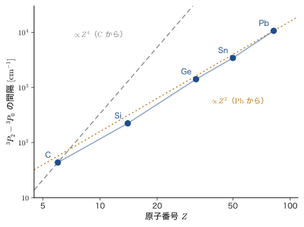
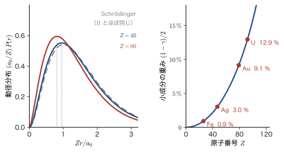
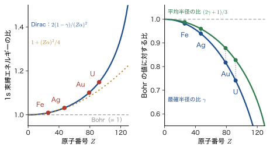

第63章Dirac 方程式の非相対論的極限 — Pauli 方程式・g=2・水素の微細構造・重い元素の相対論効果
前章の Dirac 方程式は，自由な電子についての方程式だった．しかし，実際の電子は原子核の Coulomb 場のなかや，外から加えた磁場のなかにいる．この章では，Dirac 方程式を電磁場のなかに置いたとき，電子の速さ $v$ が光速 $c$ よりずっと小さいという条件のもとで，何が出てくるかを調べる．答えは，私たちがすでに知っている Schrödinger 方程式に，補正項がいくつか付け加わった形である．しかも，その補正項には，これまで「実験事実として手で付け加えた」ものが，係数まで込みで自動的に含まれている．電子スピンの磁気モーメントの $g=2$，スピン軌道相互作用の因子 $\tfrac12$（Thomas（トーマス）因子）がそうである．Schrödinger 方程式から出発するかぎり，スピンは後から付けるほかなかった（第23章）．Dirac 方程式は，それを最初から含んでいる．
道筋は次のとおりである．まず，電磁場を「最小結合」で Dirac 方程式に入れ，ゲージ変換に対する不変性を確かめる（63.1 節）．次に，4 成分のうち小さい方の 2 成分を消去すると，上 2 成分（大成分）が満たす Pauli（パウリ）方程式が得られ，その係数から $g=2$ が読み取れる．一様な磁場のなかの電子の Landau（ランダウ）準位では，$g=2$ のおかげで零点エネルギーがちょうど打ち消し合うことも見る（63.2 節）．さらに一歩進めて $1/c^2$ までの補正を求めるには，Foldy–Wouthuysen 変換という系統的な手続きが必要で，その結果として質量速度項・Darwin（ダーウィン）項・スピン軌道項が現れる（63.3，63.4 節）．この 3 つを水素原子に適用すると，$j$ だけで決まる微細構造の準位が得られ，それは Dirac 方程式を厳密に解いた結果の展開と完全に一致する（63.5 節）．最後に，核電荷 $Z$ の大きい重い元素では，1s 電子の速さが光速の 50〜70 % に達して相対論効果が劇的に大きくなり，金が黄色いこと，水銀が室温で液体であること，鉛蓄電池の起電力の大部分までが，相対論で説明されることを学ぶ（63.6 節）．
この章の内容は，姉妹編のマテリアル計算科学（AD 05），固体物理学（AD 06），密度汎関数理論（AD 07）で出てくる「スカラー相対論」「スピン軌道結合」「Dirac–Kohn–Sham 方程式」の土台である．また，次章以降の「負エネルギー解と反粒子」（第64章）と「場の量子論への橋渡し」（第65章）では，この章で求めた $g=2$ からのずれ（$g-2$）や Lamb（ラム）シフトが，量子電磁力学の最初の検証として再び登場する．
- 電荷 $q$ の粒子の最小結合 $\hat{\bm{p}}\to\hat{\bm{\pi}}=\hat{\bm{p}}-q\bm{A}$，$i\hbar\partial_t\to i\hbar\partial_t-q\varphi_{\mathrm{el}}$ を Dirac 方程式に適用し，ゲージ変換 $\psi\to e^{iq\chi/\hbar}\psi$ に対して方程式の形が変わらないことを示せること（電子は $q=-e_0$）
- Dirac 方程式を大成分 $\psi_A$ と小成分 $\psi_B$ のブロック形に書き，小成分を消去して $\psi_B=c\,\bm{\sigma}\cdot\hat{\bm{\pi}}\,\psi_A/(E-V+mc^2)$ を導き，$\abs{\psi_B}/\abs{\psi_A}\sim v/2c$ を説明できること
- $\sigma_i\sigma_j=\delta_{ij}+i\epsilon_{ijk}\sigma_k$ と $\hat{\bm{\pi}}\times\hat{\bm{\pi}}=i\hbar q\bm{B}$ から $(\bm{\sigma}\cdot\hat{\bm{\pi}})^2=\hat{\bm{\pi}}^2-q\hbar\,\bm{\sigma}\cdot\bm{B}$ を行を飛ばさずに導き，Pauli 方程式と $g=2$，Bohr 磁子 $\mu_{\mathrm B}$ を読み取れること
- 一様磁場中の Pauli 方程式の固有値 $E=n\hbar\omega_c$（$g=2$ で零点エネルギーが消える）を求め，Dirac 方程式の厳密な Landau 準位の非相対論極限と比べられること
- Foldy–Wouthuysen 変換の手順（偶演算子と奇演算子，二重交換子の計算）を追い，$1/c^2$ までの実効ハミルトニアン（質量速度項・Darwin 項・スピン軌道項）を導けること
- スピン軌道結合 $\xi(r)=\dfrac{1}{2m^2c^2}\dfrac{1}{r}\dfrac{\dd V}{\dd r}$ の因子 $\tfrac12$ の物理的な意味（静止系の磁場と Thomas 歳差）を説明し，水素様原子の結合定数 $\zeta_{nl}$ と 14 族原子の $^3P$ 分裂の $Z$ 依存性を見積もれること
- 水素の $n=1,2,3$ の微細構造を 3 つの補正項から計算し，$j$ だけで決まる厳密解 $E_{nj}=mc^2\bigl[1+(Z\alpha)^2/(n-\delta_j)^2\bigr]^{-1/2}$ と一致することを示し，実験（Lamb シフト）との比較ができること
- 重い元素の 1s 電子の収縮・小成分の重み・束縛エネルギーを見積もり，金の色・水銀の液体・鉛蓄電池・スピン軌道結合の材料への効果を，相対論効果として説明できること
もとにしたノート：本章はノートにない内容を補った章である．関連するノート：望月泰英『物理学ノート 量子力学3』 p. 73（第XI部の章扉の見出し「相対論的量子力学」）と pp. 1–10（スピンと Pauli 行列）．
63.1 電磁場中の Dirac 方程式 — 最小結合とゲージ不変性
63.1.1 電磁場の入れ方：最小結合
電荷 $q$，質量 $m$ の粒子が電磁場のなかを動くとき，古典力学では，粒子の「運動量」として 2 種類の量を区別する必要がある．1 つは $m\bm{v}$（質量×速度）に当たる運動学的運動量，もう 1 つは Hamilton 形式の正準運動量 $\bm{p}$ である．両者は，ベクトルポテンシャル $\bm{A}$ を使って $m\bm{v}=\bm{p}-q\bm{A}$ と結ばれる（大学基礎物理学 第58章 58.4，58.8）．非相対論的な粒子のハミルトニアンは，電位 $\varphi_{\mathrm{el}}$ による位置エネルギー $V=q\varphi_{\mathrm{el}}$ を加えて
\begin{equation} H=\frac{(\bm{p}-q\bm{A})^2}{2m}+q\varphi_{\mathrm{el}} \label{eq:63-Hclass} \end{equation}である（Lorentz 力 $q(\bm{E}+\bm{v}\times\bm{B})$ はこのハミルトニアンから導かれる．大学基礎物理学 第39章 39.4）．相対論的な粒子でも事情は同じで，全エネルギーと運動量が $E\to E-q\varphi_{\mathrm{el}}$，$\bm{p}\to\bm{p}-q\bm{A}$ と置き換わる（4 元ベクトルで書けば $p^\mu\to p^\mu-qA^\mu$，$A^\mu=(\varphi_{\mathrm{el}}/c,\bm{A})$）．量子力学に移るときは，これを演算子の置き換えにする．
定義63.1 最小結合（minimal coupling）
電荷 $q$ の粒子が電磁場（ベクトルポテンシャル $\bm{A}$，電位 $\varphi_{\mathrm{el}}$）のなかにあるときは，自由粒子の方程式の演算子を次のように置き換える．
\begin{equation} \hat{\bm{p}}\ \to\ \hat{\bm{\pi}}\equiv\hat{\bm{p}}-q\bm{A},\qquad i\hbar\frac{\partial}{\partial t}\ \to\ i\hbar\frac{\partial}{\partial t}-q\varphi_{\mathrm{el}} \label{eq:63-mincoup} \end{equation}$\hat{\bm{\pi}}$ を運動学的運動量（kinetic momentum）の演算子という．置き換えには，電磁場との結合を表す項を新たに付け加えることは含まれない．結合はすべて，この置き換えだけで決まる．
前章の Dirac 方程式 $i\hbar\,\partial_t\psi=(c\,\bm{\alpha}\cdot\hat{\bm{p}}+\beta mc^2)\psi$ に式 \eqref{eq:63-mincoup} を適用すると，
\begin{equation} i\hbar\frac{\partial\psi}{\partial t}=\Bigl[c\,\bm{\alpha}\cdot\hat{\bm{\pi}}+\beta mc^2+V\Bigr]\psi,\qquad V\equiv q\varphi_{\mathrm{el}} \label{eq:63-dirac-em} \end{equation}となる．これが電磁場中の Dirac 方程式である．$V(\bm{r},t)$ は電荷 $q$ の粒子が電位 $\varphi_{\mathrm{el}}$ のなかでもつ位置エネルギーで，ハミルトニアンの右辺は，エルミート演算子 $c\,\bm{\alpha}\cdot\hat{\bm{\pi}}+\beta mc^2+V$ である（$\hat{\bm{\pi}}$ の各成分はエルミート演算子，$V$ は実数の関数）．したがって，前章と同じく確率密度 $\rho=\psi^\dagger\psi$ は非負で，連続の式 $\partial_t\rho+\nabla\cdot\bm{j}=0$（$\bm{j}=c\,\psi^\dagger\bm{\alpha}\psi$）が成り立つ．
この章で扱うのは電子である．電子の電荷は $q=-e_0$（$e_0\gt0$ は電気素量）なので，
\begin{equation} \hat{\bm{\pi}}=\hat{\bm{p}}+e_0\bm{A},\qquad V=-e_0\varphi_{\mathrm{el}} \label{eq:63-electron} \end{equation}である．原子核（電荷 $+Ze_0$）の Coulomb 場のなかの電子では，$\bm{A}=\bm{0}$，$\varphi_{\mathrm{el}}=Ze_0/(4\pi\varepsilon_0r)$ で，微細構造定数 $\alpha=e_0^2/(4\pi\varepsilon_0\hbar c)$ を使うと，
\begin{equation} V(r)=-\frac{Ze_0^2}{4\pi\varepsilon_0\,r}=-\frac{Z\alpha\hbar c}{r} \label{eq:63-Vcoul} \end{equation}である（第61章の式と同じ）．質量 $m$ は，以下では電子の質量 $m_{\mathrm e}$ である（添字を省く）．
なぜ「最小」なのか — Pauli が手で付けた項は，ここには要らない
もっと複雑な結合も考えられる．たとえば，$\hat{H}$ に $\bm{\sigma}\cdot\bm{B}$ に比例する項を勝手に足すこともできる．最小結合は，そうした項を一切足さずに，運動量と時間微分の置き換えだけで電磁場を入れるという，最も単純な規則である．Schrödinger 方程式に電磁場とスピンを入れるときは，まず $\hat{\bm{p}}\to\hat{\bm{\pi}}$ とし，そのうえで Pauli（1927）が「電子は磁気モーメント $-g\mu_{\mathrm B}\hat{\bm{S}}/\hbar$ をもつ」として，Zeeman エネルギー $\mu_{\mathrm B}\,\bm{\sigma}\cdot\bm{B}$ を手で付け足した（第23章 23.9）．Dirac 方程式では，最小結合だけから，この項が係数も込みで自動的に出てくる（63.2 節）．これが，Dirac 方程式が「電子のための方程式」と言われる理由の 1 つである．
記号の整理：この章で似た文字が多く出てくる
この章には似た記号が多いので，先に整理しておく．
- $\alpha_x,\alpha_y,\alpha_z$ と $\beta$ は Dirac 行列（$\bm{\alpha}=(\alpha_x,\alpha_y,\alpha_z)$，添字が付く）．スピン関数 $\alpha=\ket{\uparrow}$，$\beta=\ket{\downarrow}$，共鳴積分の $\beta$，微細構造定数 $\alpha=e_0^2/(4\pi\varepsilon_0\hbar c)\approx1/137$ とは別の量である．文脈で区別できるように，Dirac 行列は必ず太字の $\bm{\alpha}$ または添字付き $\alpha_i$ で書き，微細構造定数は「$Z\alpha$」「$\alpha^2$」の形で現れる．
- $\psi_A,\psi_B$：4 成分スピノルの上 2 成分（大成分）と下 2 成分（小成分）．それぞれ 2 成分の列ベクトル．
- $\chi_s$：定数の 2 成分スピノル（$\chi_\uparrow=(1,0)^{\mathsf T}$，$\chi_\downarrow=(0,1)^{\mathsf T}$）．スピン軌道 $\chi_i$（第VII部）や，ゲージ関数 $\chi(\bm{r},t)$（この節）とは別である．
- $\varphi_{\mathrm{el}}$：電位（添字 el が付く）．方位角 $\varphi$，軌道の $\phi$ とは別．$V=q\varphi_{\mathrm{el}}$ は電位による位置エネルギー．
- $\bm{\sigma}=(\sigma_x,\sigma_y,\sigma_z)$：Pauli 行列．$\Sigma_k=\begin{pmatrix}\sigma_k&0\\0&\sigma_k\end{pmatrix}$：4 成分に拡張したスピン行列（前章）．$\hat{\bm{S}}=\hbar\bm{\sigma}/2$．
- $E=mc^2+\varepsilon$：静止エネルギーを含む全エネルギー $E$ と，非相対論的なエネルギー $\varepsilon$．
63.1.2 定常状態のブロック形
電磁場が時間によらない（$\bm{A}$ と $\varphi_{\mathrm{el}}$ が $t$ を含まない）場合を考える．定常状態 $\psi(\bm{r},t)=\psi(\bm{r})\,e^{-iEt/\hbar}$ を式 \eqref{eq:63-dirac-em} に代入すると，$i\hbar\,\partial_t\to E$ となって，$(E-V)\psi=(c\,\bm{\alpha}\cdot\hat{\bm{\pi}}+\beta mc^2)\psi$ である．前章（62.2 節）の Dirac の標準表示（Dirac–Pauli 表示ともいう）$\alpha_i=\begin{pmatrix}0&\sigma_i\\\sigma_i&0\end{pmatrix}$，$\beta=\begin{pmatrix}\mathbb{1}&0\\0&-\mathbb{1}\end{pmatrix}$ と，4 成分スピノル $\psi=(\psi_A,\psi_B)^{\mathsf T}$ を使って，2×2 のブロックに分ける．$\bm{\alpha}\cdot\hat{\bm{\pi}}=\begin{pmatrix}0&\bm{\sigma}\cdot\hat{\bm{\pi}}\\\bm{\sigma}\cdot\hat{\bm{\pi}}&0\end{pmatrix}$ だから，
$$(E-V)\begin{pmatrix}\psi_A\\\psi_B\end{pmatrix}=\begin{pmatrix}mc^2&c\,\bm{\sigma}\cdot\hat{\bm{\pi}}\\c\,\bm{\sigma}\cdot\hat{\bm{\pi}}&-mc^2\end{pmatrix}\begin{pmatrix}\psi_A\\\psi_B\end{pmatrix}$$である．上下の成分を分けて整理すると，
\begin{align} (E-V-mc^2)\,\psi_A&=c\,(\bm{\sigma}\cdot\hat{\bm{\pi}})\,\psi_B, \label{eq:63-blockA}\\ (E-V+mc^2)\,\psi_B&=c\,(\bm{\sigma}\cdot\hat{\bm{\pi}})\,\psi_A \label{eq:63-blockB} \end{align}となる．第 1 式の左辺の因子 $E-V-mc^2$ は，静止エネルギーを引いた「運動エネルギー」$\varepsilon-V$ に当たる．第 2 式の因子 $E-V+mc^2$ は，$\varepsilon\ll mc^2$ なら $\approx2mc^2$ という大きな数になる．この非対称が，次節で小成分を消去できる理由になる．前章 62.2.4 節のブロック形の方程式は，$\hat{\bm{\pi}}\to\hat{\bm{p}}$，$V=0$ の場合である．
63.1.3 ゲージ不変性
電場と磁場は，ポテンシャルから $\bm{E}=-\nabla\varphi_{\mathrm{el}}-\partial_t\bm{A}$，$\bm{B}=\nabla\times\bm{A}$ で決まるが，ポテンシャルそのものは一意ではない．任意のスカラー関数 $\chi(\bm{r},t)$（ゲージ関数）を使って，
\begin{equation} \bm{A}\to\bm{A}'=\bm{A}+\nabla\chi,\qquad\varphi_{\mathrm{el}}\to\varphi_{\mathrm{el}}'=\varphi_{\mathrm{el}}-\frac{\partial\chi}{\partial t} \label{eq:63-gauge-pot} \end{equation}と変換しても，$\bm{E}$ と $\bm{B}$ は変わらない（$\nabla\times\nabla\chi=\bm{0}$，$-\nabla(-\partial_t\chi)-\partial_t\nabla\chi=\bm{0}$）．これをゲージ変換（gauge transformation）という（大学基礎物理学 第58章 58.5 では 4 元ポテンシャルの変換 $A_\mu\to A_\mu-\partial_\mu\chi$ として書いた）．物理的な予言は $\bm{E}$，$\bm{B}$ だけで決まるはずなので，量子力学の方程式はこの変換のもとで「同じ物理」を表さなければならない．次の定理は，そのためには波動関数の位相も同時に変えればよいことを示す．
定理63.1 Dirac 方程式のゲージ不変性
電磁場中の Dirac 方程式 \eqref{eq:63-dirac-em} の解 $\psi$ に対して，ゲージ変換 \eqref{eq:63-gauge-pot} と同時に
\begin{equation} \psi\ \to\ \psi'=e^{iq\chi/\hbar}\,\psi \label{eq:63-gauge-psi} \end{equation}と位相を掛けると，$\psi'$ は変換後のポテンシャル $\bm{A}',\varphi_{\mathrm{el}}'$ の Dirac 方程式の解になる．すなわち，方程式の形は変わらない．
証明
必要なのは，次の 2 つの関係である．$\bm{A}'=\bm{A}+\nabla\chi$ として，位相因子 $e^{iq\chi/\hbar}$ に $\hat{\bm{p}}=-i\hbar\nabla$ を作用させると，積の微分の規則から
$$-i\hbar\nabla\bigl(e^{iq\chi/\hbar}\psi\bigr)=e^{iq\chi/\hbar}\bigl(q\,\psi\nabla\chi-i\hbar\nabla\psi\bigr)=e^{iq\chi/\hbar}\bigl(\hat{\bm{p}}+q\nabla\chi\bigr)\psi$$である．したがって，変換後の運動学的運動量 $\hat{\bm{\pi}}'=\hat{\bm{p}}-q\bm{A}'=\hat{\bm{p}}-q\bm{A}-q\nabla\chi$ を $\psi'$ に作用させると，
$$\hat{\bm{\pi}}'\psi'=e^{iq\chi/\hbar}\bigl(\hat{\bm{p}}+q\nabla\chi-q\bm{A}-q\nabla\chi\bigr)\psi=e^{iq\chi/\hbar}\,\hat{\bm{\pi}}\psi$$となり，$\nabla\chi$ の項が打ち消し合って $\hat{\bm{\pi}}$ だけが残る．時間の部分も同じである．$i\hbar\,\partial_t(e^{iq\chi/\hbar}\psi)=e^{iq\chi/\hbar}\bigl(-q\,\partial_t\chi\,\psi+i\hbar\,\partial_t\psi\bigr)$ だから，$V'=q\varphi_{\mathrm{el}}'=V-q\,\partial_t\chi$ を使って，
$$\Bigl(i\hbar\frac{\partial}{\partial t}-V'\Bigr)\psi'=e^{iq\chi/\hbar}\Bigl(-q\,\partial_t\chi+i\hbar\,\partial_t-V+q\,\partial_t\chi\Bigr)\psi=e^{iq\chi/\hbar}\Bigl(i\hbar\frac{\partial}{\partial t}-V\Bigr)\psi$$である．つまり，$\hat{\bm{\pi}}$ と $i\hbar\partial_t-V$ は，$\psi\to e^{iq\chi/\hbar}\psi$ のもとで，位相因子の外に出るだけで形を変えない．式 \eqref{eq:63-dirac-em} を $(i\hbar\,\partial_t-V)\psi=(c\,\bm{\alpha}\cdot\hat{\bm{\pi}}+\beta mc^2)\psi$ と書けば，左辺も右辺も $\psi'$ に対して位相因子 $e^{iq\chi/\hbar}$ を掛けただけになる（行列 $\bm{\alpha},\beta$ と位相因子は可換）．位相因子は両辺から取り除けるので，$\psi'$ は変換後のポテンシャルの Dirac 方程式を満たす．
（証明終わり）
位相因子 $e^{iq\chi/\hbar}$ は絶対値が 1 なので，確率密度 $\rho=\psi^\dagger\psi$ も確率の流れ $\bm{j}=c\,\psi^\dagger\bm{\alpha}\psi$ もゲージ変換で変わらない．波動関数の位相そのものは観測にかからず，観測できるのは位相の差（干渉）と，ゲージ不変な量だけである．Schrödinger 方程式 $i\hbar\partial_t\psi=[\hat{\bm{\pi}}^2/2m+V]\psi$ も，同じ理由で同じゲージ変換のもとで不変である．
イメージ：位相の自由が，電磁場を要求する
この定理には，逆向きの読み方がある．自由粒子の Dirac 方程式は，波動関数の位相を時空全体で一斉に変える変換 $\psi\to e^{i\theta}\psi$（$\theta$ は定数）に対して不変である．もし位相 $\theta$ を場所と時刻ごとに違う値 $\theta(\bm{r},t)=q\chi(\bm{r},t)/\hbar$ にできる（局所的な位相変換が許される）ことを要求すると，微分 $\partial_\mu\psi$ が $\partial_\mu\theta$ の分だけ余計な項を含むので，方程式の形を保つためには，$\partial_\mu\theta$ を打ち消す「相棒の場」$A_\mu$ が要る．それが電磁ポテンシャルである．電磁場の存在は，局所的な位相の自由（局所 $U(1)$ 対称性）の帰結だ，というのが現代の場の量子論の見方である（関連シミュレーター：Relativistic-QM の解説 §4.1．場の量子論としての展開は第65章と素粒子物理学（AD 09））．
63.1.4 共変形との対応
前章では，Dirac 方程式を $(i\hbar\gamma^\mu\partial_\mu-mc)\psi=0$ と共変形に書いた．電磁場を入れた共変形は，偏微分 $\partial_\mu$ を共変微分（covariant derivative）
\begin{equation} D_\mu=\partial_\mu+\frac{iq}{\hbar}A_\mu\qquad\Bigl(A_\mu=\bigl(\varphi_{\mathrm{el}}/c,\,-\bm{A}\bigr)\Bigr) \label{eq:63-covD} \end{equation}で置き換えた $i\hbar\gamma^\mu D_\mu\psi=mc\,\psi$ である．これが式 \eqref{eq:63-dirac-em} と同じであることを確かめておこう．計量は $(+,-,-,-)$，$x^\mu=(ct,\bm{x})$ で，$\partial_0=\partial_t/c$，$\partial_i=\partial/\partial x^i$（$i=1,2,3$），$A_0=\varphi_{\mathrm{el}}/c$，$A_i=-A^i$（$A^i$ は $\bm{A}$ の成分）である．$\gamma^0=\beta$，$\gamma^i=\beta\alpha_i$ を使う．
導出：共変形から式 \eqref{eq:63-dirac-em} へ
時間成分は $D_0=\dfrac1c\Bigl(\partial_t+\dfrac{iq\varphi_{\mathrm{el}}}{\hbar}\Bigr)$ だから，$i\hbar\gamma^0D_0\psi=\dfrac{\beta}{c}\bigl(i\hbar\,\partial_t-q\varphi_{\mathrm{el}}\bigr)\psi$．空間成分は $D_i=\partial_i-iqA^i/\hbar$ で，$i\hbar D_i=i\hbar\partial_i+qA^i$．ここで $\hat{p}_i=-i\hbar\partial_i$ だから $i\hbar\partial_i=-\hat{p}_i$ で，$i\hbar D_i=-(\hat{p}_i-qA^i)=-\hat{\pi}_i$ となる．したがって $i\hbar\gamma^iD_i\psi=-\gamma^i\hat{\pi}_i\psi$．まとめると，共変形は
$$\frac{\beta}{c}\bigl(i\hbar\,\partial_t-V\bigr)\psi-\gamma^i\hat{\pi}_i\,\psi=mc\,\psi$$である．両辺に左から $c\beta$ を掛ける．$\beta^2=1$，$\beta\gamma^i=\beta\beta\alpha_i=\alpha_i$ だから，
$$\bigl(i\hbar\,\partial_t-V\bigr)\psi-c\,\alpha_i\hat{\pi}_i\psi=\beta mc^2\,\psi,\qquad\text{すなわち}\qquad i\hbar\,\partial_t\psi=\bigl[c\,\bm{\alpha}\cdot\hat{\bm{\pi}}+\beta mc^2+V\bigr]\psi$$となり，式 \eqref{eq:63-dirac-em} に一致する．
（導出終わり）
例題63.1 共変微分とゲージ変換：$A_\mu\to A_\mu-\partial_\mu\chi$ を導く
波動関数の局所位相変換 $\psi\to\psi'=e^{iq\chi(x)/\hbar}\psi$（$\chi$ は時空の関数）のもとで，共変微分 $D_\mu\psi=(\partial_\mu+iqA_\mu/\hbar)\psi$ が $D'_\mu\psi'=e^{iq\chi/\hbar}D_\mu\psi$ と同じ位相因子だけを受けるために，$A_\mu$ がどう変換しなければならないかを求めよ．また，その結果が時間成分 $\varphi_{\mathrm{el}}\to\varphi_{\mathrm{el}}-\partial_t\chi$，空間成分 $\bm{A}\to\bm{A}+\nabla\chi$ に一致することを示せ．
解答 変換後の共変微分は $D'_\mu\psi'=(\partial_\mu+iqA'_\mu/\hbar)\bigl(e^{iq\chi/\hbar}\psi\bigr)$ である．積の微分により
$$D'_\mu\psi'=e^{iq\chi/\hbar}\Bigl(\partial_\mu\psi+\frac{iq}{\hbar}(\partial_\mu\chi)\,\psi+\frac{iq}{\hbar}A'_\mu\psi\Bigr)=e^{iq\chi/\hbar}\Bigl(\partial_\mu+\frac{iq}{\hbar}\bigl(A'_\mu+\partial_\mu\chi\bigr)\Bigr)\psi$$となる．これが $e^{iq\chi/\hbar}\bigl(\partial_\mu+iqA_\mu/\hbar\bigr)\psi$ に等しくなるためには，$A'_\mu+\partial_\mu\chi=A_\mu$，すなわち
$$A'_\mu=A_\mu-\partial_\mu\chi$$でなければならない．成分で読む．$\mu=0$：$A_0=\varphi_{\mathrm{el}}/c$，$\partial_0\chi=\partial_t\chi/c$ だから，$\varphi_{\mathrm{el}}'/c=\varphi_{\mathrm{el}}/c-\partial_t\chi/c$，すなわち $\varphi_{\mathrm{el}}'=\varphi_{\mathrm{el}}-\partial_t\chi$．$\mu=i$：$A_i=-A^i$ だから，$-A'^i=-A^i-\partial_i\chi$，すなわち $A'^i=A^i+\partial_i\chi$，ベクトルで書けば $\bm{A}'=\bm{A}+\nabla\chi$．どちらも式 \eqref{eq:63-gauge-pot} に一致する．次元の確認：$q\chi/\hbar$ が無次元であるためには，$\chi$ の単位は $\mathrm{J\,s/C}=\mathrm{V\,s}$（Wb）で，$\nabla\chi$ の単位 $\mathrm{V\,s/m}$ は $\bm{A}$ の単位に一致する．
63.2 大成分と小成分 — Pauli 方程式と $g=2$
63.2.1 小成分を消去する
前節のブロック形 \eqref{eq:63-blockA}，\eqref{eq:63-blockB} は，$\psi_A$ と $\psi_B$ の連立方程式である．第 2 式を $\psi_B$ について解けば，$\psi_B$ を $\psi_A$ で表すことができる．$E-V+mc^2$ は位置の関数（実数）なので，その逆数を掛ければよい：
\begin{equation} \psi_B=\frac{1}{E-V+mc^2}\;c\,(\bm{\sigma}\cdot\hat{\bm{\pi}})\,\psi_A \label{eq:63-psiB-exact} \end{equation}（$\hat{\bm{\pi}}$ を先に作用させてから，位置の関数 $1/(E-V+mc^2)$ を掛ける．）これを式 \eqref{eq:63-blockA} に代入すると，$\psi_A$ だけの方程式
$$(E-V-mc^2)\,\psi_A=c\,(\bm{\sigma}\cdot\hat{\bm{\pi}})\,\frac{1}{E-V+mc^2}\,c\,(\bm{\sigma}\cdot\hat{\bm{\pi}})\,\psi_A$$が得られる．ここまでは近似を含まない厳密な式だが，未知の固有値 $E$ が方程式のなかに（分母に）入っている．
電子が遅い，つまり非相対論的なエネルギー $\varepsilon=E-mc^2$ と位置エネルギー $V$ が静止エネルギーに比べて十分に小さい（$\abs{\varepsilon-V}\ll mc^2$）ときは，分母は $E-V+mc^2=2mc^2+(\varepsilon-V)\approx2mc^2$ と近似できる．すると，式 \eqref{eq:63-psiB-exact} は
\begin{equation} \psi_B\ \approx\ \frac{\bm{\sigma}\cdot\hat{\bm{\pi}}}{2mc}\,\psi_A \label{eq:63-psiB} \end{equation}となる．$\hat{\bm{\pi}}\,\psi_A$ の大きさは，運動学的運動量 $m\bm{v}$ の大きさ程度だから，$\abs{\psi_B}/\abs{\psi_A}\sim mv/(2mc)$，すなわち
\begin{equation} \frac{\abs{\psi_B}}{\abs{\psi_A}}\sim\frac{v}{2c} \label{eq:63-ratio} \end{equation}である（前章の平面波解の比 $pc/(E_p+mc^2)\approx v/2c$ と同じ．62.5.3 節）．このことが，$\psi_A$ を大成分，$\psi_B$ を小成分とよぶ理由である．規格化への寄与は $\abs{\psi_B}^2/\abs{\psi_A}^2\sim(v/2c)^2$ で，水素原子の 1s 電子（$v\approx\alpha c\approx c/137$）では $1.3\times10^{-5}$ と非常に小さい．しかし，核電荷が大きい原子の内殻電子では無視できない（63.6 節）．
関連シミュレーター：相対論的量子力学シミュレーターの①（運動量 $p$ を動かして，自由電子の Dirac スピノルの大成分と小成分の比が変わる様子を見る）．
63.2.2 $(\bm{\sigma}\cdot\hat{\bm{\pi}})^2$ の計算
式 \eqref{eq:63-blockA} の右辺に式 \eqref{eq:63-psiB} を代入すると，$\varepsilon=E-mc^2$ を使って
\begin{equation} (\varepsilon-V)\,\psi_A\ \approx\ \frac{(\bm{\sigma}\cdot\hat{\bm{\pi}})^2}{2m}\,\psi_A \label{eq:63-psiA-lead} \end{equation}を得る．ここで右辺の演算子 $(\bm{\sigma}\cdot\hat{\bm{\pi}})^2$ を計算する．これが，この節でいちばん大事な計算である．材料は，Pauli 行列の積の公式だけである．
公式63.1 Pauli 行列の積
Pauli 行列 $\sigma_x,\sigma_y,\sigma_z$（添字 $i,j,k=1,2,3$）は，次の積の関係を満たす（第23章 23.7，第24章 24.8）．
\begin{equation} \sigma_i\sigma_j=\delta_{ij}\,\mathbb{1}+i\sum_{k}\epsilon_{ijk}\,\sigma_k \label{eq:63-sigprod} \end{equation}ここで $\epsilon_{ijk}$ は Levi-Civita 記号（$\epsilon_{123}=1$，添字の入れ替えで符号が変わり，同じ添字を含めば $0$）である．たとえば $\sigma_x\sigma_y=i\sigma_z$，$\sigma_y\sigma_x=-i\sigma_z$，$\sigma_x^2=\mathbb{1}$．
$\bm{\sigma}\cdot\hat{\bm{\pi}}=\sum_i\sigma_i\hat{\pi}_i$ を 2 乗する．Pauli 行列 $\sigma_i$ は定数の行列で，位置や微分には作用しないので，演算子 $\hat{\pi}_j$ と可換である（$\sigma_i\hat{\pi}_j=\hat{\pi}_j\sigma_i$）．しかし $\hat{\pi}_i$ と $\hat{\pi}_j$ の順序は保たなければならない．
\begin{align} (\bm{\sigma}\cdot\hat{\bm{\pi}})^2&=\sum_{i,j}\sigma_i\sigma_j\,\hat{\pi}_i\hat{\pi}_j =\sum_{i,j}\Bigl(\delta_{ij}+i\sum_k\epsilon_{ijk}\sigma_k\Bigr)\hat{\pi}_i\hat{\pi}_j \notag\\ &=\sum_i\hat{\pi}_i\hat{\pi}_i+i\sum_k\sigma_k\sum_{i,j}\epsilon_{ijk}\,\hat{\pi}_i\hat{\pi}_j =\hat{\bm{\pi}}^2+i\,\bm{\sigma}\cdot\bigl(\hat{\bm{\pi}}\times\hat{\bm{\pi}}\bigr) \label{eq:63-sigpi-step} \end{align}最後に，ベクトル積の成分 $(\hat{\bm{\pi}}\times\hat{\bm{\pi}})_k=\sum_{i,j}\epsilon_{kij}\hat{\pi}_i\hat{\pi}_j$（$\epsilon_{ijk}=\epsilon_{kij}$）を使った．普通のベクトルなら $\bm{a}\times\bm{a}=\bm{0}$ だが，演算子では，$\hat{\pi}_i\hat{\pi}_j$ と $\hat{\pi}_j\hat{\pi}_i$ が等しいとは限らず，$\epsilon_{kij}$ が $i,j$ について反対称であることから，
$$(\hat{\bm{\pi}}\times\hat{\bm{\pi}})_k=\frac12\sum_{i,j}\epsilon_{kij}\bigl(\hat{\pi}_i\hat{\pi}_j-\hat{\pi}_j\hat{\pi}_i\bigr)=\frac12\sum_{i,j}\epsilon_{kij}\,\comm{\hat{\pi}_i}{\hat{\pi}_j}$$と交換子で書ける．$\hat{\pi}_i$ どうしの交換子を求めよう．$\hat{p}_i=-i\hbar\,\partial_i$ で，任意の関数 $f$ に対して $\comm{\hat{p}_i}{A_j}f=-i\hbar\,\partial_i(A_jf)+i\hbar\,A_j\partial_if=-i\hbar\,(\partial_iA_j)\,f$ だから $\comm{\hat{p}_i}{A_j}=-i\hbar\,\partial_iA_j$ である．したがって（$\comm{\hat{p}_i}{\hat{p}_j}=0$，$\comm{A_i}{A_j}=0$ に注意して）
\begin{align} \comm{\hat{\pi}_i}{\hat{\pi}_j}&=\comm{\hat{p}_i-qA_i}{\hat{p}_j-qA_j}=-q\comm{\hat{p}_i}{A_j}-q\comm{A_i}{\hat{p}_j} =-q\bigl(-i\hbar\,\partial_iA_j\bigr)-q\bigl(i\hbar\,\partial_jA_i\bigr) \notag\\ &=i\hbar q\bigl(\partial_iA_j-\partial_jA_i\bigr)=i\hbar q\sum_l\epsilon_{ijl}B_l \label{eq:63-pipi} \end{align}となる（$\comm{A_i}{\hat{p}_j}=-\comm{\hat{p}_j}{A_i}=i\hbar\,\partial_jA_i$ を使った．最後は $\bm{B}=\nabla\times\bm{A}$ の成分，たとえば $B_z=\partial_xA_y-\partial_yA_x$ である．大学数学 第19章 19.4）．これを使うと，
$$(\hat{\bm{\pi}}\times\hat{\bm{\pi}})_k=\frac12\sum_{i,j}\epsilon_{kij}\,i\hbar q\sum_l\epsilon_{ijl}B_l=\frac{i\hbar q}{2}\sum_l\Bigl(\sum_{i,j}\epsilon_{kij}\epsilon_{ijl}\Bigr)B_l=\frac{i\hbar q}{2}\sum_l2\delta_{kl}B_l=i\hbar q\,B_k$$である（$\sum_{i,j}\epsilon_{kij}\epsilon_{lij}=2\delta_{kl}$ を使った）．すなわち $\hat{\bm{\pi}}\times\hat{\bm{\pi}}=i\hbar q\,\bm{B}$ で，式 \eqref{eq:63-sigpi-step} に入れると $i\,\bm{\sigma}\cdot(i\hbar q\bm{B})=-q\hbar\,\bm{\sigma}\cdot\bm{B}$ となる．
定理63.2 $(\bm{\sigma}\cdot\hat{\bm{\pi}})^2$ の恒等式
\begin{equation} (\bm{\sigma}\cdot\hat{\bm{\pi}})^2=\hat{\bm{\pi}}^2-q\hbar\,\bm{\sigma}\cdot\bm{B},\qquad\hat{\bm{\pi}}\times\hat{\bm{\pi}}=i\hbar q\,\bm{B},\qquad\bm{B}=\nabla\times\bm{A} \label{eq:63-sigpi2} \end{equation}$\bm{A}$ は任意の（位置と時間に依存してよい）ベクトルポテンシャルでよい．
なぜ磁場が現れるのか：運動学的運動量の各成分は，もう可換ではない
自由粒子（$\bm{A}=\bm{0}$）では $\hat{\bm{p}}\times\hat{\bm{p}}=\bm{0}$ で，$(\bm{\sigma}\cdot\hat{\bm{p}})^2=\hat{\bm{p}}^2$ である．スピンは運動エネルギーに効かない（前章 62.2.4 節で $(\bm{\sigma}\cdot\bm{p})^2=p^2$ を使った）．ところが磁場があると，運動学的運動量の $x$ 成分と $y$ 成分が交換しなくなる（$\comm{\hat{\pi}_x}{\hat{\pi}_y}=i\hbar qB_z\ne0$）．その結果，$\bm{\sigma}\cdot\hat{\bm{\pi}}$ の 2 乗に，行列の反交換性（$\sigma_x\sigma_y=-\sigma_y\sigma_x$）と交換子が組み合わさった項 $-q\hbar\,\bm{\sigma}\cdot\bm{B}$ が生き残る．スピンと磁場の結合は，この「非可換性」の副産物である．
例題63.2 一様磁場の $(\bm{\sigma}\cdot\hat{\bm{\pi}})^2$ を成分で計算する．Zeeman エネルギーと ESR
(1) 一様な磁場 $\bm{B}=(0,0,B)$ の，ベクトルポテンシャル $\bm{A}=\tfrac12\bm{B}\times\bm{r}=(-By/2,\,Bx/2,\,0)$ で，$\hat{\pi}_x,\hat{\pi}_y,\hat{\pi}_z$ を書き，$\comm{\hat{\pi}_x}{\hat{\pi}_y}$ と $(\bm{\sigma}\cdot\hat{\bm{\pi}})^2$ を成分で計算せよ．(2) 電子の Zeeman エネルギー $\mu_{\mathrm B}B$ を $B=1\ \mathrm{T}$ で求め，電子スピンが反転するときの吸収周波数 $2\mu_{\mathrm B}B/h$（$\mathrm{GHz}$）と，$X$ バンド ESR（$9.5\ \mathrm{GHz}$）の共鳴磁場（$g=2.0023$）を求めよ．
解答 (1) $\hat{\pi}_x=\hat{p}_x-qA_x=\hat{p}_x+\tfrac12qBy$，$\hat{\pi}_y=\hat{p}_y-qA_y=\hat{p}_y-\tfrac12qBx$，$\hat{\pi}_z=\hat{p}_z$ である．交換子は，$\comm{\hat{p}_x}{x}=-i\hbar$，$\comm{y}{\hat{p}_y}=i\hbar$ に注意して
$$\comm{\hat{\pi}_x}{\hat{\pi}_y}=\comm{\hat{p}_x}{-\tfrac12qBx}+\comm{\tfrac12qBy}{\hat{p}_y}=-\tfrac12qB(-i\hbar)+\tfrac12qB(i\hbar)=i\hbar qB$$となり，式 \eqref{eq:63-pipi} の $i\hbar q\epsilon_{xyz}B_z=i\hbar qB$ と一致する．$\comm{\hat{\pi}_x}{\hat{\pi}_z}=\comm{\hat{\pi}_y}{\hat{\pi}_z}=0$ である（$\hat{\pi}_z=\hat{p}_z$ は $x,y$ にも $\hat{p}_x,\hat{p}_y$ にも作用しない）．次に $(\bm{\sigma}\cdot\hat{\bm{\pi}})^2=\bigl(\sigma_x\hat{\pi}_x+\sigma_y\hat{\pi}_y+\sigma_z\hat{\pi}_z\bigr)^2$ を展開する．対角の項は $\sigma_x^2\hat{\pi}_x^2+\sigma_y^2\hat{\pi}_y^2+\sigma_z^2\hat{\pi}_z^2=\hat{\bm{\pi}}^2$．非対角の項は，$(x,y)$ の組が $\sigma_x\sigma_y\hat{\pi}_x\hat{\pi}_y+\sigma_y\sigma_x\hat{\pi}_y\hat{\pi}_x=i\sigma_z\hat{\pi}_x\hat{\pi}_y-i\sigma_z\hat{\pi}_y\hat{\pi}_x=i\sigma_z\comm{\hat{\pi}_x}{\hat{\pi}_y}=i\sigma_z(i\hbar qB)=-\hbar qB\,\sigma_z$，$(x,z)$ と $(y,z)$ の組は交換子が $0$ なので，$\sigma_x\sigma_z+\sigma_z\sigma_x=0$（反交換）も使って消える．よって
$$(\bm{\sigma}\cdot\hat{\bm{\pi}})^2=\hat{\bm{\pi}}^2-\hbar qB\,\sigma_z=\hat{\bm{\pi}}^2-q\hbar\,\bm{\sigma}\cdot\bm{B}$$で，定理63.2 に一致する．
(2) 電子では $q=-e_0$，Zeeman の項は $-(q\hbar/2m)\bm{\sigma}\cdot\bm{B}=+\mu_{\mathrm B}\,\bm{\sigma}\cdot\bm{B}$（次の 63.2.4 節）で，$\bm{B}\parallel z$ なら固有値は $\pm\mu_{\mathrm B}B$ である．$\mu_{\mathrm B}=9.274\,010\times10^{-24}\ \mathrm{J/T}=5.788\,382\times10^{-5}\ \mathrm{eV/T}$ だから，$B=1\ \mathrm{T}$ で $\mu_{\mathrm B}B=57.88\ \mu\mathrm{eV}$．2 つの準位 $\pm\mu_{\mathrm B}B$ の間隔は $2\mu_{\mathrm B}B=115.77\ \mu\mathrm{eV}$ で，吸収される電磁波の周波数は $\nu=2\mu_{\mathrm B}B/h=2\times9.274\,010\times10^{-24}\ \mathrm{J/T}\,/\,6.626\,070\times10^{-34}\ \mathrm{J\,s}=2.799\times10^{10}\ \mathrm{Hz/T}=27.99\ \mathrm{GHz/T}$（マイクロ波）である．$X$ バンドの $9.5\ \mathrm{GHz}$ では，$g=2.0023$ の自由電子の共鳴条件 $h\nu=g\mu_{\mathrm B}B$ から $B=\dfrac{h\nu}{g\mu_{\mathrm B}}=\dfrac{9.5\times10^9\times6.626\,070\times10^{-34}}{2.0023\times9.274\,010\times10^{-24}}\ \mathrm{T}=0.3390\ \mathrm{T}$ である（$g=2$ とすると $0.3394\ \mathrm{T}$．$0.1\ \%$ の差は $g$ が $2$ からずれていることによる）．
63.2.3 Pauli 方程式
定理63.2 を式 \eqref{eq:63-psiA-lead} に使うと，$(\varepsilon-V)\psi_A=\bigl[\hat{\bm{\pi}}^2-q\hbar\,\bm{\sigma}\cdot\bm{B}\bigr]\psi_A/2m$，すなわち $\varepsilon\,\psi_A=\bigl[\hat{\bm{\pi}}^2/2m+V-(q\hbar/2m)\,\bm{\sigma}\cdot\bm{B}\bigr]\psi_A$ となる．非相対論的なエネルギー $\varepsilon$ は，時間依存の方程式の $i\hbar\,\partial_t$ に対応する（静止エネルギーの位相 $e^{-imc^2t/\hbar}$ を波動関数から取り除いた後の時間依存）．こうして，次の方程式が得られる．
定理63.3 Pauli 方程式
電磁場中の Dirac 方程式の非相対論的極限（最低次）として，2 成分の波動関数 $\psi_{\mathrm P}$（Pauli スピノル）が次の方程式を満たす．
\begin{equation} i\hbar\frac{\partial\psi_{\mathrm P}}{\partial t}=\Bigl[\frac{(\hat{\bm{p}}-q\bm{A})^2}{2m}+q\varphi_{\mathrm{el}}-\frac{q\hbar}{2m}\,\bm{\sigma}\cdot\bm{B}\Bigr]\psi_{\mathrm P} \label{eq:63-pauli} \end{equation}電子（$q=-e_0$）の場合は，式 \eqref{eq:63-pauli} の最後の項は $+\dfrac{e_0\hbar}{2m}\bm{\sigma}\cdot\bm{B}$ である．この最低次では $\psi_{\mathrm P}$ は大成分 $\psi_A$ そのものである．次の節で見るように，$1/c^2$ まで進むと，$\psi_{\mathrm P}$ は $\psi_A$ に $\hat{\bm{\pi}}^2/8m^2c^2$ の補正を加えた量に置き換わる（規格化を正しく保つため）．Pauli 方程式は，1927 年に Pauli が，電子がスピンの磁気モーメントをもつことを「仮定」して Schrödinger 方程式に付け加えることで提案した．Dirac が 1928 年に 4 成分の方程式を導くと，Pauli の方程式はその非相対論的極限として，仮定なしに出てくることがわかった．
63.2.4 $g=2$ と Bohr 磁子
磁気モーメント $\bm{\mu}$ をもつ粒子の，磁束密度 $\bm{B}$ のなかでのエネルギーは $-\bm{\mu}\cdot\bm{B}$ である（大学基礎物理学 第38章 38.6）．スピン $\hat{\bm{S}}=\hbar\bm{\sigma}/2$ をもつ粒子の磁気モーメントを，$g$ 因子（$g$-factor）を使って
\begin{equation} \bm{\mu}=g\,\frac{q}{2m}\,\hat{\bm{S}} \label{eq:63-gdef} \end{equation}と定義する．古典的な円電流（回転する電荷）では，軌道角運動量 $\bm{L}$ と磁気モーメントは $\bm{\mu}_l=(q/2m)\bm{L}$ で結ばれる（$g=1$，第23章 23.1）ので，$g$ は「スピンの磁気モーメントが，軌道運動の場合に比べて何倍か」を表す数である．Pauli 方程式の最後の項は，$\hbar\bm{\sigma}=2\hat{\bm{S}}$ を使うと
$$-\frac{q\hbar}{2m}\,\bm{\sigma}\cdot\bm{B}=-\frac{q}{m}\,\hat{\bm{S}}\cdot\bm{B}=-\Bigl(2\cdot\frac{q}{2m}\hat{\bm{S}}\Bigr)\cdot\bm{B}$$である．これを $-\bm{\mu}\cdot\bm{B}$ と比べると，式 \eqref{eq:63-gdef} の $g$ は
\begin{equation} g=2 \label{eq:63-g2} \end{equation}と読める．Schrödinger 方程式の枠内では，スピンの $g=2$ は，Stern–Gerlach の実験や異常 Zeeman 効果から「実験事実として」手で入れるしかなかった（第23章 23.2）．Dirac 方程式は，それを最小結合だけから導く．
導出：軌道の磁気モーメントは $g=1$（比較のために）
一様な磁場 $\bm{B}$ のベクトルポテンシャルを $\bm{A}=\tfrac12\bm{B}\times\bm{r}$ ととる（$\nabla\times\bm{A}=\bm{B}$，$\nabla\cdot\bm{A}=0$ を確かめられる）．$\nabla\cdot\bm{A}=0$ から $\hat{\bm{p}}\cdot\bm{A}=\bm{A}\cdot\hat{\bm{p}}$ なので，$\hat{\bm{\pi}}^2=\hat{\bm{p}}^2-2q\,\bm{A}\cdot\hat{\bm{p}}+q^2\bm{A}^2$ である．スカラー三重積の性質で $\bm{A}\cdot\hat{\bm{p}}=\tfrac12(\bm{B}\times\bm{r})\cdot\hat{\bm{p}}=\tfrac12\bm{B}\cdot(\bm{r}\times\hat{\bm{p}})=\tfrac12\bm{B}\cdot\hat{\bm{L}}$ だから，
$$\frac{\hat{\bm{\pi}}^2}{2m}=\frac{\hat{\bm{p}}^2}{2m}-\frac{q}{2m}\,\bm{B}\cdot\hat{\bm{L}}+\frac{q^2}{8m}(\bm{B}\times\bm{r})^2$$となる．第 2 項が軌道の磁気モーメント $\bm{\mu}_l=(q/2m)\hat{\bm{L}}$（$g_l=1$）との結合，第 3 項は磁場の 2 乗に比例する反磁性項である．スピンと軌道を合わせた Zeeman のハミルトニアンは，任意の電荷 $q$ で $-\dfrac{q}{2m}(\hat{\bm{L}}+2\hat{\bm{S}})\cdot\bm{B}$ となり，電子では $+\dfrac{\mu_{\mathrm B}}{\hbar}(\hat{\bm{L}}+2\hat{\bm{S}})\cdot\bm{B}$ である（第28章 28.5と同じ）．
（導出終わり）
電子の場合の数値を整理しておく．電子の磁気モーメントは $\bm{\mu}=-g\,\mu_{\mathrm B}\,\hat{\bm{S}}/\hbar$ で，Bohr 磁子（Bohr magneton）は
\begin{equation} \mu_{\mathrm B}=\frac{e_0\hbar}{2m_{\mathrm e}}=9.274\,010\,0783\times10^{-24}\ \mathrm{J/T}=5.788\,381\,8060\times10^{-5}\ \mathrm{eV/T}=13.996\,245\ \mathrm{GHz/T} \label{eq:63-muB} \end{equation}である（最後は $\mu_{\mathrm B}/h$）．負の電荷のために，磁気モーメントはスピンと逆向きである．本書でスピンの矢印 $\uparrow$ は $s_z=+\hbar/2$ を表す（次の注意を参照）．
注意：「↑」の意味 — 大学基礎物理学の「磁場に平行」とは違う
本書では，スピンの矢印 $\uparrow$ は「スピンの $z$ 成分が $+\hbar/2$」（$\hat{S}_z$ の固有値 $+\hbar/2$，スピン関数 $\alpha=\ket{\uparrow}$）を表す．電子の磁気モーメントはスピンと逆向きなので，磁場 $\bm{B}=B\bm{e}_z$ のなかでは，$\uparrow$ の電子は磁気モーメントが $-z$ 向き（磁場と反平行）で，エネルギーが $+\mu_{\mathrm B}B$ と高い．$\downarrow$ の電子のエネルギーが $-\mu_{\mathrm B}B$ と低い（例題63.2 の $\pm\mu_{\mathrm B}B$ のうち，$+$ が $\uparrow$）．姉妹編 AD 03 の法則51.3（大学基礎物理学 第51章 51.4）の $E_\uparrow=-\mu B$，$E_\downarrow=+\mu B$ の「$\uparrow$」は，磁気モーメントが磁場と平行という意味で，電子のスピンに置き換えると，本書の $\downarrow$ に当たる．どちらの書き方でも，エネルギーの低い状態が磁場に平行な磁気モーメントをもつ，という物理は同じである．
実験で測られる電子の $g$ 因子は $g_{\mathrm e}=2.002\,319\,304\ldots$ で，Dirac の予言 $g=2$ から約 $0.12\ \%$ だけずれている．このずれは，電子が自分の出す光子（仮想光子）と相互作用するという量子電磁力学の輻射補正によるもので，Schwinger（シュウィンガー，1948）は最低次の補正を $g/2=1+\alpha/2\pi+\cdots=1.00116\ldots$ と計算した（第65章）．陽子（$g_{\mathrm p}=5.586$，核磁子を単位とした磁気モーメントは $2.793\,\mu_{\mathrm N}$）と中性子（$g_{\mathrm n}=-3.826$）は，$g=2$ から大きくはずれる．これは陽子と中性子が点粒子ではなくクォークからできた内部構造をもつためで，電荷をもたない中性子が磁気モーメントをもつこと自体が，その内部構造の現れである（素粒子物理学 AD 09 第7章 7.2 などで扱う）．電子の $g=2$ とその非相対論極限は，素粒子物理学（AD 09 第9章 9.3）でも導かれる．
例題63.3 小成分の大きさ：水素と金の 1s 電子
1s 電子の小成分の大きさは，速さ $v\approx Z\alpha c$（Bohr 模型の $n=1$ の速さ）を使うと，式 \eqref{eq:63-ratio} から $\abs{\psi_B}/\abs{\psi_A}\sim Z\alpha/2$ と見積もれる．水素（$Z=1$），金（$Z=79$），ウラン（$Z=92$）でこの見積りを計算し，63.5 節で導く厳密な 1s の解の比 $\sqrt{(1-\gamma)/(1+\gamma)}$（$\gamma=\sqrt{1-(Z\alpha)^2}$）および重み $(1-\gamma)/2$ と比べよ．（$\alpha=1/137.036$）
解答 水素：$Z\alpha/2=7.2974\times10^{-3}/2=3.649\times10^{-3}$．厳密な比は，$\gamma=\sqrt{1-(7.2974\times10^{-3})^2}=0.999\,973$ から $\sqrt{(1-\gamma)/(1+\gamma)}=\sqrt{2.663\times10^{-5}/1.999\,973}=3.649\times10^{-3}$ で，見積りと 4 桁まで一致する．重みは $(1-\gamma)/2=1.33\times10^{-5}$（$=(3.649\times10^{-3})^2$ 程度）である．
金：$Z\alpha=0.5765$ で，見積りは $Z\alpha/2=0.288$．厳密には $\gamma=\sqrt{1-0.3323}=0.8171$ で，比は $\sqrt{0.1829/1.8171}=0.3173$ と，見積りより約 10 % 大きい．重みは $(1-\gamma)/2=0.0915$（9.1 %）である．ウラン：$Z\alpha=0.6714$，見積り $0.336$，厳密な比 $0.3856$（$\gamma=0.7411$），重み $0.129$（12.9 %）．見積りは $Z\alpha\ll1$ で正確で，$Z\alpha$ が $1$ に近づくと $\psi_B$ の大きさを過小評価する（式 \eqref{eq:63-psiB-exact} の分母 $E-V+mc^2$ が $2mc^2$ より小さくなるため）．水素では小成分が全体の $10^{-5}$ にすぎないのに対し，金やウランでは 1 割前後に達する．
63.2.5 一様磁場中の電子 — Landau 準位と，$g=2$ による零点エネルギーの消失
Pauli 方程式の最も基本的な応用は，一様な磁場 $\bm{B}=B\bm{e}_z$ のなかの電子である．ここでは電位はなく（$V=0$），電荷は $q=-e_0$ である．ハミルトニアンは $\hat{H}=\hat{\bm{\pi}}^2/2m+\mu_{\mathrm B}B\,\sigma_z$（$g=2$）で，軌道部分（$\hat{\pi}_x,\hat{\pi}_y$）とスピン部分（$\sigma_z$）は独立に対角化できる．軌道部分が，電子の円運動（サイクロトロン運動）の量子化，Landau 準位（Landau level）である．
導出：Pauli 方程式の Landau 準位
定理63.2（または式 \eqref{eq:63-pipi}）から $\comm{\hat{\pi}_x}{\hat{\pi}_y}=i\hbar qB=-i\hbar e_0B$ である．これは $\comm{x}{\hat{p}}=i\hbar$ と同じ形の交換関係で，調和振動子と同じように解ける（第13章 13.8）．昇降演算子を
$$\hat{a}=\frac{\hat{\pi}_x-i\hat{\pi}_y}{\sqrt{2\hbar e_0B}},\qquad\hat{a}^\dagger=\frac{\hat{\pi}_x+i\hat{\pi}_y}{\sqrt{2\hbar e_0B}}$$とおくと，$\comm{\hat{a}}{\hat{a}^\dagger}=\dfrac{i\comm{\hat{\pi}_x}{\hat{\pi}_y}-i\comm{\hat{\pi}_y}{\hat{\pi}_x}}{2\hbar e_0B}=\dfrac{2i(-i\hbar e_0B)}{2\hbar e_0B}=1$ である．また，$(\hat{\pi}_x-i\hat{\pi}_y)(\hat{\pi}_x+i\hat{\pi}_y)=\hat{\pi}_x^2+\hat{\pi}_y^2+i\comm{\hat{\pi}_x}{\hat{\pi}_y}=\hat{\pi}_x^2+\hat{\pi}_y^2+\hbar e_0B$ で，左辺は $2\hbar e_0B\,\hat{a}\hat{a}^\dagger$ だから，
$$\hat{\pi}_x^2+\hat{\pi}_y^2=2\hbar e_0B\,\hat{a}\hat{a}^\dagger-\hbar e_0B=\hbar e_0B\,(2\hat{a}^\dagger\hat{a}+1)$$となる（$\hat{a}\hat{a}^\dagger=\hat{a}^\dagger\hat{a}+1$）．サイクロトロン角振動数 $\omega_c=e_0B/m$ を使うと，$\dfrac{\hat{\pi}_x^2+\hat{\pi}_y^2}{2m}=\hbar\omega_c\left(\hat{a}^\dagger\hat{a}+\tfrac12\right)$ である．したがって（$z$ 方向の自由運動の $\hat{p}_z^2/2m$ も含めて）
$$\hat{H}=\hbar\omega_c\left(\hat{a}^\dagger\hat{a}+\tfrac12\right)+\frac{\hat{p}_z^2}{2m}+\mu_{\mathrm B}B\,\sigma_z,\qquad\mu_{\mathrm B}B=\frac{e_0\hbar}{2m}B=\frac{\hbar\omega_c}{2}$$である．最後の等式が $g=2$ の帰結である．$\hat{a}^\dagger\hat{a}$ の固有値は $n_L=0,1,2,\dots$，$\sigma_z=\pm1$ だから，$p_z=0$ で，
\begin{equation} E=\hbar\omega_c\Bigl(n_L+\frac12\Bigr)+\sigma_z\,\frac{\hbar\omega_c}{2}=\hbar\omega_c\Bigl(n_L+\frac{1+\sigma_z}{2}\Bigr)\equiv n\,\hbar\omega_c \label{eq:63-landau} \end{equation}を得る．ここで $n=n_L+(1+\sigma_z)/2$ とおいた．$\sigma_z=-1$（スピン $\downarrow$）では $n=n_L$，$\sigma_z=+1$（スピン $\uparrow$）では $n=n_L+1$ である．
（導出終わり）
定理63.4 Pauli 方程式の Landau 準位（$g=2$）
一様磁場 $B$ のなかの電子の Pauli 方程式の固有値（$p_z=0$）は，
\begin{equation} E_n=n\,\hbar\omega_c\quad(n=0,1,2,\dots),\qquad\omega_c=\frac{e_0B}{m} \end{equation}である．$n=0$ は縮退なし（スピン $\downarrow$，$n_L=0$ だけ），$n\ge1$ は 2 重に縮退する（スピン $\downarrow$ の $n_L=n$ と，スピン $\uparrow$ の $n_L=n-1$）．ここで「縮退」と数えたのは，スピンと $n_L$ の組合せだけである．各準位には，さらに円運動の中心の位置に関する巨大な縮退がある（図63.2 の次の注意）．
軌道運動だけの Landau 準位 $(n_L+\tfrac12)\hbar\omega_c$ には，調和振動子と同様に零点エネルギー $\tfrac12\hbar\omega_c$ がある．ところが $g=2$ のスピンのエネルギー $\pm\hbar\omega_c/2$ が，ちょうどそれと同じ大きさなので，スピン $\downarrow$ の最低状態では零点エネルギーが完全に打ち消され，$E=0$ になる（図63.2）．もし $g$ が $2$ でなければ，このようにきれいには並ばない．実際の電子では $g=2.0023$ なので，$n\hbar\omega_c$ から，スピンの向きに応じて $\pm0.0006\,\hbar\omega_c$ ほどずれる．
注意：Landau 準位には，円運動の中心の位置による巨大な縮退がある
図63.2 の「1 重」「2 重」は，スピンと $n_L$ の組合せを数えただけである．実際の Landau 準位は，それとは別に，円運動の中心（ガイド中心）の位置に関する巨大な縮退をもつ．磁場のなかの電子の円運動の半径は，磁気長 $l_B=\sqrt{\hbar/(e_0B)}$ 程度で，ガイド中心の座標 $X,Y$ は，$x$ と $\hat{p}_x$ のように互いに正準共役（$\abs{\comm{X}{Y}}=l_B^2$）で同時には決まらないから，$X$–$Y$ 面の面積 $2\pi l_B^2$ あたり 1 個の状態しか区別できない．したがって，1 つの Landau 準位（スピンの向きを指定したもの）に入る状態の数は，単位面積あたり
\begin{equation} \frac{1}{2\pi l_B^2}=\frac{e_0B}{2\pi\hbar}=\frac{e_0B}{h} \label{eq:63-LLdeg} \end{equation}である．$B=10\ \mathrm{T}$ では $l_B=8.11\ \mathrm{nm}$，$e_0B/h=2.42\times10^{15}\ \mathrm{m^{-2}}$（$2.42\times10^{11}\ \mathrm{cm^{-2}}$）である．面積 $S$ の試料では，$e_0BS/h$ 個の状態が 1 つの準位に並ぶ．磁場を強くするほど縮退度が増えて，1 つの準位にたくさんの電子が入る．
応用：サイクロトロン共鳴と量子ホール効果 — Landau 準位の実験
固体のなかの電子では，質量 $m$ を有効質量 $m^*$ に置き換えて，$\omega_c=e_0B/m^*$ となる（有効質量は第41章）．GaAs の伝導電子では $m^*\approx0.067\,m_{\mathrm e}$ なので，$B=10\ \mathrm{T}$ で $\hbar\omega_c=1.158\ \mathrm{meV}/0.067=17.3\ \mathrm{meV}$（約 $200\ \mathrm{K}$）と，自由電子の 15 倍ほど大きい．この間隔に当たる遠赤外光を吸収する現象がサイクロトロン共鳴で，共鳴する振動数から $m^*$ が測れる．
ヘテロ接合の界面にできる二次元電子系（GaAs/AlGaAs など）を低温・強磁場に置くと，Landau 準位のあいだのエネルギーギャップ $\hbar\omega_c$ が効いてくる．電子の面密度を $n_s$ とすると，式 \eqref{eq:63-LLdeg} により，$n_s=N\,e_0B/h$（$N$ は整数）のとき，$N$ 個の準位がちょうど詰まって Fermi 準位が準位のあいだに入る．このとき，縦方向の抵抗は $0$ になり，ホール抵抗は $h/(Ne_0^2)$ という，物質によらない値の平らな部分（プラトー）になる．これが整数量子ホール効果（von Klitzing，1980）である．$h/e_0^2=25\,812.807\ \Omega$ は，抵抗の標準に使われている．実際の試料でプラトーが広い磁場の範囲で続くのは，不純物による局在した状態のためである．グラフェンの $\sqrt{B}$ に比例する Landau 準位（この後の式 \eqref{eq:63-dirac-landau} で質量を $0$ にした極限）も，同じ種類の実験で見える．
Dirac 方程式の場合は，4 成分のまま厳密に解ける．次の方法は，ハミルトニアンを 2 乗してしまうことである．
導出：Dirac 方程式の厳密な Landau 準位
$V=0$，$\bm{B}=B\bm{e}_z$ の静的な磁場で，$\hat{H}=c\,\bm{\alpha}\cdot\hat{\bm{\pi}}+\beta mc^2$ を 2 乗する．$\alpha_i\beta+\beta\alpha_i=0$ で $\hat{\bm{\pi}}$ は $\beta$ と可換だから，交差項 $mc^3(\bm{\alpha}\cdot\hat{\bm{\pi}}\,\beta+\beta\,\bm{\alpha}\cdot\hat{\bm{\pi}})=0$ となり，$\hat{H}^2=c^2(\bm{\alpha}\cdot\hat{\bm{\pi}})^2+m^2c^4$ である．前章の $\alpha_i\alpha_j=\delta_{ij}+i\epsilon_{ijk}\Sigma_k$（$\Sigma_k$ は $\sigma_k$ を対角ブロックにもつ 4×4 行列）を使うと，式 \eqref{eq:63-sigpi-step} と全く同じ計算で $(\bm{\alpha}\cdot\hat{\bm{\pi}})^2=\hat{\bm{\pi}}^2-q\hbar\,\bm{\Sigma}\cdot\bm{B}$ となる．電子では $-q\hbar\bm{\Sigma}\cdot\bm{B}=+e_0\hbar B\,\Sigma_z$ で，前の導出から $\hat{\pi}_x^2+\hat{\pi}_y^2=\hbar e_0B(2\hat{a}^\dagger\hat{a}+1)$ だから，
$$\hat{H}^2=m^2c^4+c^2\hat{p}_z^2+c^2\hbar e_0B\bigl(2\hat{a}^\dagger\hat{a}+1+\Sigma_z\bigr)=m^2c^4+c^2\hat{p}_z^2+2nc^2\hbar e_0B$$である（$n=n_L+(1+\Sigma_z)/2$．$\Sigma_z=\pm1$）．$\hat{H}^2$ の固有値 $E^2$ から，$E=\pm\sqrt{\cdots}$ が得られる．
（導出終わり）
これが Dirac 方程式の厳密な Landau 準位で，上の導出のとおり，$n=0$ は 1 重，$n\ge1$ は 2 重（各 $p_z$ について）である．$p_z=0$ で非相対論的な極限 $n\hbar\omega_c\ll mc^2$ をとると，$e_0B=m\omega_c$ から $2n\hbar e_0Bc^2=2n\hbar\omega_c\,mc^2$ で，
$$E_n-mc^2=mc^2\Bigl(\sqrt{1+\frac{2n\hbar\omega_c}{mc^2}}-1\Bigr)=n\hbar\omega_c-\frac{(n\hbar\omega_c)^2}{2mc^2}+\cdots$$となる．第 1 項が Pauli 方程式の結果，第 2 項が相対論的な補正である．質量をゼロにした極限（$mc^2\to0$，$c\to v_{\mathrm F}$）では $E_n\propto\sqrt{nB}$ となり，グラフェンの Landau 準位の $\sqrt{B}$ 則につながる（第65章）．
例題63.4 $B=10\ \mathrm{T}$ の Landau 準位と相対論的補正
$B=10\ \mathrm{T}$ で，(1) $\hbar\omega_c$ を $\mathrm{meV}$ で求め，$2\mu_{\mathrm B}B$ に等しいことを確かめよ．(2) Pauli 方程式の準位 $n\hbar\omega_c$（$n=0,1,2,3$）と，Dirac の厳密な準位の運動エネルギー $E_n-mc^2$ との差を $n=1$ で見積もれ．
解答 (1) $\omega_c=e_0B/m_{\mathrm e}=1.602\,177\times10^{-19}\times10/9.109\,384\times10^{-31}\ \mathrm{s^{-1}}=1.7588\times10^{12}\ \mathrm{s^{-1}}$，$\hbar\omega_c=1.054\,572\times10^{-34}\times1.7588\times10^{12}\ \mathrm{J}=1.8548\times10^{-22}\ \mathrm{J}=1.1577\times10^{-3}\ \mathrm{eV}=1.158\ \mathrm{meV}$ である．一方，$2\mu_{\mathrm B}B=2\times5.788\,382\times10^{-5}\ \mathrm{eV/T}\times10\ \mathrm{T}=1.1577\times10^{-3}\ \mathrm{eV}$ で，$\hbar\omega_c=2\mu_{\mathrm B}B$（$g=2$）が確かめられる．準位は $0,\,1.158,\,2.315,\,3.473\ \mathrm{meV}$（$n=0,1,2,3$）と等間隔に並ぶ．$n=0$ は 1 重，$n=1,2,3$ は 2 重に縮退している．
(2) 相対論的な補正は $-(n\hbar\omega_c)^2/2mc^2$ で，$n=1$ では $-(1.1577\times10^{-3}\ \mathrm{eV})^2/(2\times510\,999\ \mathrm{eV})=-1.31\times10^{-12}\ \mathrm{eV}$ である．準位の間隔 $1.158\ \mathrm{meV}$ に比べて $10^{-9}$ 倍とごく小さい．$n=2,3$ では $n^2$ に比例して $-5.2\times10^{-12}\ \mathrm{eV}$，$-1.2\times10^{-11}\ \mathrm{eV}$ になる．$10\ \mathrm{T}$ の磁場でも，実験室で得られる磁場では電子の運動は非相対論的で，Pauli 方程式で十分である．
63.3 Foldy–Wouthuysen 変換とスピン軌道相互作用 — Thomas 因子の $\tfrac12$
63.3.1 なぜもう一段階の近似が要るのか
前節では，小成分を $\psi_B\approx\bm{\sigma}\cdot\hat{\bm{\pi}}\,\psi_A/2mc$ と消去して，最低次の Pauli 方程式を得た．しかし，水素原子の微細構造のような，$(v/c)^2$ のオーダーの補正は，この最低次の方程式には含まれていない．補正を求めるには，分母 $E-V+mc^2=2mc^2+(\varepsilon-V)$ の展開を 1 つ先まで進めればよさそうだが，実際にやってみると 2 つの困難にぶつかる．
- 小成分 $\psi_B$ の大きさは $\psi_A$ の $v/2c$ 倍で，規格化への寄与は $(v/2c)^2$ である．全確率は $\int(\psi_A^\dagger\psi_A+\psi_B^\dagger\psi_B)\,\dd^3r=1$ だから，$\psi_A$ だけでは規格化されず，$(v/c)^2$ のオーダーの補正を含む．大成分のみの方程式をそのまま展開すると，エルミートでない演算子が現れ，固有値問題としての扱いが難しい．
- 厳密な方程式の分母には未知の $E$ が入っており，展開した結果は $E$ に依存する．エネルギーを決める方程式が，エネルギー自身に依存してしまう．
これらを系統的に解決するのが，Foldy と Wouthuysen（1950）が与えた変換である．その考え方は，「大成分と小成分を結びつけている演算子だけを，ユニタリ変換で次々に小さくしていく」というものである．ユニタリ変換は確率を保つので，規格化の問題は起きず，ハミルトニアンはエルミートのまま，エネルギー依存もなくなる．
63.3.2 偶演算子と奇演算子
4×4 の演算子を，上 2 成分と下 2 成分を混ぜるかどうかで 2 種類に分ける．
定義63.2 偶演算子と奇演算子
4×4 行列の演算子 $\hat{X}$ が $\beta$ と可換（$\hat{X}\beta=\beta\hat{X}$）のとき偶演算子（even operator，ブロック対角：上 2 成分と下 2 成分を混ぜない），反可換（$\hat{X}\beta=-\beta\hat{X}$）のとき奇演算子（odd operator，ブロック非対角：上と下を混ぜる）という．
電磁場中の Dirac のハミルトニアンは，次のように偶と奇に分かれる（$\beta=\mathrm{diag}(\mathbb{1},-\mathbb{1})$ だから，$\bm{\alpha}$ を含む項はブロック非対角）．
\begin{equation} \hat{H}=\beta mc^2+\hat{\mathcal{E}}+\hat{\mathcal{O}},\qquad\hat{\mathcal{E}}=V,\qquad\hat{\mathcal{O}}=c\,\bm{\alpha}\cdot\hat{\bm{\pi}} \label{eq:63-EO} \end{equation}$\beta mc^2$ と $\hat{\mathcal{E}}=V$ は偶，$\hat{\mathcal{O}}$ は奇である（$\alpha_i\beta=-\beta\alpha_i$，$\hat{\bm{\pi}}$ は $\beta$ と可換）．以下，静的な電磁場（$\bm{A},\varphi_{\mathrm{el}}$ が時間によらない）を考え，$M\equiv mc^2$ と略記する．
偶・奇の積の規則は次のとおりである：(偶)(偶)＝偶，(奇)(奇)＝偶，(偶)(奇)，(奇)(偶)＝奇．また，偶演算子と奇演算子の交換子 $\comm{\hat{\mathcal{O}}}{\hat{\mathcal{E}}}$ は奇，奇演算子どうしの 2 乗 $\hat{\mathcal{O}}^2$ は偶である．大成分と小成分の結合は，すべて奇演算子 $\hat{\mathcal{O}}$ が担っている．
63.3.3 変換の手順
ユニタリ変換 $\psi'=e^{w}\psi$ を考える．ここで $w=\dfrac{\beta\hat{\mathcal{O}}}{2M}$ である（$w$ は反エルミート：$(\beta\hat{\mathcal{O}})^\dagger=\hat{\mathcal{O}}\beta=-\beta\hat{\mathcal{O}}$．だから $e^{w}$ はユニタリである．ユニタリ変換を $e^{iS}$（$S$ はエルミート）と書く流儀では $S=-iw$ に当たる）．静的な場では，変換後のハミルトニアンは $\hat{H}'=e^{w}\hat{H}e^{-w}$ である．これは，Hadamard の公式（交換子の展開）
\begin{equation} e^{w}\hat{H}e^{-w}=\hat{H}+\comm{w}{\hat{H}}+\frac{1}{2!}\comm{w}{\comm{w}{\hat{H}}}+\frac{1}{3!}\comm{w}{\comm{w}{\comm{w}{\hat{H}}}}+\cdots \label{eq:63-hadamard} \end{equation}で展開できる（$F(u)=e^{uw}\hat{H}e^{-uw}$ とおくと $\dd F/\dd u=\comm{w}{F}$ なので，$F$ を $u=0$ のまわりで Taylor 展開して $u=1$ とおけば，$k$ 番目の項は $k$ 重の交換子の $1/k!$ 倍になる）．$w\propto1/M$ は小さいので，この展開は $1/M$ の次数ごとに整理できる．まず，必要になる基本的な交換子を求めておく．$\beta^2=1$，$\hat{\mathcal{O}}\beta=-\beta\hat{\mathcal{O}}$ を使う．
- $\comm{w}{\beta M}=\dfrac{1}{2}\comm{\beta\hat{\mathcal{O}}}{\beta}=\dfrac12\bigl(\beta\hat{\mathcal{O}}\beta-\beta\beta\hat{\mathcal{O}}\bigr)=\dfrac12\bigl(-\hat{\mathcal{O}}-\hat{\mathcal{O}}\bigr)=-\hat{\mathcal{O}}$．
- $\comm{w}{\hat{\mathcal{E}}}=\dfrac{1}{2M}\bigl(\beta\hat{\mathcal{O}}\hat{\mathcal{E}}-\hat{\mathcal{E}}\beta\hat{\mathcal{O}}\bigr)=\dfrac{\beta}{2M}\comm{\hat{\mathcal{O}}}{\hat{\mathcal{E}}}$（$\hat{\mathcal{E}}$ は $\beta$ と可換）．
- $\comm{w}{\hat{\mathcal{O}}}=\dfrac{1}{2M}\bigl(\beta\hat{\mathcal{O}}^2-\hat{\mathcal{O}}\beta\hat{\mathcal{O}}\bigr)=\dfrac{1}{2M}\bigl(\beta\hat{\mathcal{O}}^2+\beta\hat{\mathcal{O}}^2\bigr)=\dfrac{\beta\hat{\mathcal{O}}^2}{M}$．
これらを使って，式 \eqref{eq:63-hadamard} の各項を $1/M$ の次数で順に計算する．奇演算子 $\hat{\mathcal{O}}'$ に対して $\comm{\beta\hat{\mathcal{O}}}{\beta\hat{\mathcal{O}}'}=-\comm{\hat{\mathcal{O}}}{\hat{\mathcal{O}}'}$ となること，$\comm{w}{\beta\hat{\mathcal{O}}^2}=-\hat{\mathcal{O}}^3/M$ となること（$\beta\hat{\mathcal{O}}\beta\hat{\mathcal{O}}^2=-\hat{\mathcal{O}}^3$，$\beta\hat{\mathcal{O}}^2\beta\hat{\mathcal{O}}=\hat{\mathcal{O}}^3$ による）も使う．
\begin{align} \comm{w}{\hat{H}}&=-\hat{\mathcal{O}}+\frac{\beta}{2M}\comm{\hat{\mathcal{O}}}{\hat{\mathcal{E}}}+\frac{\beta\hat{\mathcal{O}}^2}{M}, \notag\\ \comm{w}{\comm{w}{\hat{H}}}&=-\frac{\beta\hat{\mathcal{O}}^2}{M}-\frac{1}{4M^2}\comm{\hat{\mathcal{O}}}{\comm{\hat{\mathcal{O}}}{\hat{\mathcal{E}}}}-\frac{\hat{\mathcal{O}}^3}{M^2}, \label{eq:63-comms}\\ \comm{w}{\comm{w}{\comm{w}{\hat{H}}}}&=\frac{\hat{\mathcal{O}}^3}{M^2}-\frac{\beta\hat{\mathcal{O}}^4}{M^3}+\cdots,\qquad \comm{w}{\comm{w}{\comm{w}{\comm{w}{\hat{H}}}}}=\frac{\beta\hat{\mathcal{O}}^4}{M^3}+\cdots \notag \end{align}（省略した $\cdots$ は，さらに高次の $1/M^3$ 以上の奇演算子，または $M^{-4}$ 以上の項である．3 重の交換子の $-\beta\hat{\mathcal{O}}^4/M^3$ は，2 重の交換子の最後の項 $-\hat{\mathcal{O}}^3/M^2$ から出る：$\comm{w}{-\hat{\mathcal{O}}^3/M^2}=-\dfrac{1}{2M^3}\comm{\beta\hat{\mathcal{O}}}{\hat{\mathcal{O}}^3}=-\dfrac{\beta\hat{\mathcal{O}}^4}{M^3}$（$\comm{\beta\hat{\mathcal{O}}}{\hat{\mathcal{O}}^3}=\beta\hat{\mathcal{O}}^4-\hat{\mathcal{O}}^3\beta\hat{\mathcal{O}}=2\beta\hat{\mathcal{O}}^4$ による）．4 重の交換子の $+\beta\hat{\mathcal{O}}^4/M^3$ は，3 重の第 1 項 $\hat{\mathcal{O}}^3/M^2$ から，同じ計算で符号を変えて出る．）式 \eqref{eq:63-hadamard} の各項に係数 $1,\,1,\,\tfrac12,\,\tfrac16,\,\tfrac1{24}$ を掛けて足すと，$\hat{H}=\beta M+\hat{\mathcal{E}}+\hat{\mathcal{O}}$ の各項とあわせて，
\begin{equation} \hat{H}'=\beta\Bigl(M+\frac{\hat{\mathcal{O}}^2}{2M}-\frac{\hat{\mathcal{O}}^4}{8M^3}\Bigr)+\hat{\mathcal{E}}-\frac{1}{8M^2}\comm{\hat{\mathcal{O}}}{\comm{\hat{\mathcal{O}}}{\hat{\mathcal{E}}}}+\hat{\mathcal{O}}' \label{eq:63-FW1} \end{equation}を得る．途中の係数の計算：$\hat{\mathcal{O}}$ の係数は $+1$（もとの項）と $-1$（$\comm{w}{\beta M}$）で打ち消す．$\beta\hat{\mathcal{O}}^2/M$ の係数は $1-\tfrac12=\tfrac12$．$\beta\hat{\mathcal{O}}^4/M^3$ の係数は，3 重の交換子の $-\beta\hat{\mathcal{O}}^4/M^3$（係数 $\tfrac1{3!}$）と 4 重の交換子の $+\beta\hat{\mathcal{O}}^4/M^3$（係数 $\tfrac1{4!}$）から $-\tfrac16+\tfrac1{24}=-\tfrac18$．二重交換子の係数は $-\tfrac12\cdot\tfrac14=-\tfrac18$．奇演算子の残り $\hat{\mathcal{O}}'=\dfrac{\beta}{2M}\comm{\hat{\mathcal{O}}}{\hat{\mathcal{E}}}-\dfrac{\hat{\mathcal{O}}^3}{3M^2}$（$\hat{\mathcal{O}}^3$ の係数は $-\tfrac12+\tfrac16=-\tfrac13$）である．
イメージ：$w$ の選び方 — 奇演算子を一段小さくする
元のハミルトニアンの奇演算子は $\hat{\mathcal{O}}\sim c\,p$ で，$M=mc^2$ に比べて $v/c$ 倍の大きさである．変換後の奇演算子 $\hat{\mathcal{O}}'$ は，$[\hat{\mathcal{O}},\hat{\mathcal{E}}]/2M\sim c\,\hbar V'/M$ と $\hat{\mathcal{O}}^3/3M^2\sim c^3p^3/M^2$ で，大きさは $M(v/c)^3$ 程度である．もとの $\hat{\mathcal{O}}\sim M(v/c)$ より $(v/c)^2$ 倍だけ小さくなった．$w=\beta\hat{\mathcal{O}}/2M$ という選び方は，$\comm{w}{\beta M}=-\hat{\mathcal{O}}$ が元の $\hat{\mathcal{O}}$ をちょうど消すように決めたものである．同じ手続きを $\hat{\mathcal{O}}'$ に対して繰り返せば，奇演算子をさらに小さくできる（二度目の変換 $w'=\beta\hat{\mathcal{O}}'/2M$）．その効果は，$\hat{\mathcal{O}}'^2/2M\sim c^{-4}$ のオーダーなので，この章で求める $1/c^2$ までの精度では無視できる．したがって，奇演算子 $\hat{\mathcal{O}}'$ を捨てれば，$\hat{H}'$ は偶演算子だけ，つまり上 2 成分と下 2 成分が独立なブロック対角になる．
ブロック対角の $\hat{H}'$ の上 2 成分（$\beta=+1$）が，この章の主役である．
\begin{equation} \hat{H}_{\mathrm{FW}}=mc^2+\hat{\mathcal{E}}+\frac{\hat{\mathcal{O}}^2}{2mc^2}-\frac{\hat{\mathcal{O}}^4}{8m^3c^6}-\frac{1}{8m^2c^4}\comm{\hat{\mathcal{O}}}{\comm{\hat{\mathcal{O}}}{\hat{\mathcal{E}}}} \label{eq:63-FW2} \end{equation}下 2 成分（$\beta=-1$）は，符号の違う同じ形で，負エネルギー解を記述する（第64章）．
大成分 $\psi_A$ と Pauli スピノル $\psi_{\mathrm P}$ の関係
FW 変換後の上 2 成分 $\psi_{\mathrm P}$ は，もとの大成分 $\psi_A$ と，規格化の補正だけ違う．$\psi'=e^{w}\psi=\bigl(1+w+\tfrac12w^2+\cdots\bigr)\psi$ の上 2 成分を求める．$w=\beta\hat{\mathcal{O}}/2M$ だから，上 2 成分への寄与は，1 次の項が $(\hat{\mathcal{O}}\psi)_A/2M=c\,\bm{\sigma}\cdot\hat{\bm{\pi}}\,\psi_B/2M\approx(\bm{\sigma}\cdot\hat{\bm{\pi}})^2\psi_A/4m^2c^2$（式 \eqref{eq:63-psiB} を使った），2 次の項が $\tfrac12w^2=-\hat{\mathcal{O}}^2/8M^2$ から $-(\bm{\sigma}\cdot\hat{\bm{\pi}})^2\psi_A/8m^2c^2$ で，
$$\psi_{\mathrm P}\simeq\Bigl(1+\frac{\hat{\bm{\pi}}^2}{8m^2c^2}\Bigr)\psi_A\qquad(\text{最低次で }(\bm{\sigma}\cdot\hat{\bm{\pi}})^2\simeq\hat{\bm{\pi}}^2)$$である．実際，全確率 $\int(\psi_A^\dagger\psi_A+\psi_B^\dagger\psi_B)\,\dd^3r\approx\int\psi_A^\dagger\bigl(1+\hat{\bm{\pi}}^2/4m^2c^2\bigr)\psi_A\,\dd^3r$ は，$\bigl(1+\hat{\bm{\pi}}^2/8m^2c^2\bigr)^2\simeq1+\hat{\bm{\pi}}^2/4m^2c^2$ から $\int\psi_{\mathrm P}^\dagger\psi_{\mathrm P}\,\dd^3r$ に等しい．Pauli スピノル $\psi_{\mathrm P}$ は，$1/c^2$ までの精度で $\int\psi_{\mathrm P}^\dagger\psi_{\mathrm P}\,\dd^3r=1$ と素直に規格化される．
63.3.4 偶演算子を具体的に書く — 二重交換子の計算
式 \eqref{eq:63-FW2} に，$\hat{\mathcal{E}}=V$，$\hat{\mathcal{O}}=c\,\bm{\alpha}\cdot\hat{\bm{\pi}}$ を代入して，各項を具体的に求める．
(i) $\hat{\mathcal{O}}^2$ と $\hat{\mathcal{O}}^4$．前章の代数 $\alpha_i\alpha_j=\delta_{ij}+i\epsilon_{ijk}\Sigma_k$（$\Sigma_k$ は $\sigma_k$ を 2 つの対角ブロックにもつ 4×4 行列）を使うと，式 \eqref{eq:63-sigpi-step}，\eqref{eq:63-sigpi2} とまったく同じ計算で $(\bm{\alpha}\cdot\hat{\bm{\pi}})^2=\hat{\bm{\pi}}^2-q\hbar\,\bm{\Sigma}\cdot\bm{B}$ である．したがって
$$\hat{\mathcal{O}}^2=c^2\bigl(\hat{\bm{\pi}}^2-q\hbar\,\bm{\Sigma}\cdot\bm{B}\bigr),\qquad \frac{\hat{\mathcal{O}}^2}{2mc^2}=\frac{\hat{\bm{\pi}}^2}{2m}-\frac{q\hbar}{2m}\bm{\Sigma}\cdot\bm{B}$$で，上 2 成分では $\bm{\Sigma}\to\bm{\sigma}$ だから，Pauli 方程式の右辺がそのまま出る．4 乗は $\hat{\mathcal{O}}^4=c^4\bigl(\hat{\bm{\pi}}^2-q\hbar\,\bm{\Sigma}\cdot\bm{B}\bigr)^2$ で，$\dfrac{\hat{\mathcal{O}}^4}{8m^3c^6}=\dfrac{\bigl(\hat{\bm{\pi}}^2-q\hbar\,\bm{\sigma}\cdot\bm{B}\bigr)^2}{8m^3c^2}$ となる．磁場がない（または弱い）ときは $\hat{\bm{\pi}}^4/8m^3c^2$ で，磁場を含む交差項 $-q\hbar\{\hat{\bm{\pi}}^2,\bm{\sigma}\cdot\bm{B}\}/8m^3c^2$ は，Zeeman エネルギー $\mu_{\mathrm B}B$ に対する $(v/c)^2$ 程度の相対論的補正（Zeeman 効果の相対論的補正）である．この章では，原子の微細構造に効く $\hat{\bm{\pi}}^4/8m^3c^2$ だけを残す．
(ii) 二重交換子 $\comm{\hat{\mathcal{O}}}{\comm{\hat{\mathcal{O}}}{\hat{\mathcal{E}}}}$．ここが，この節でいちばん長い計算である．関数 $V(\bm{r})$ に対して，まず内側の交換子を求める．$\comm{\hat{\pi}_i}{V}=-i\hbar\,\partial_iV$（$\bm{A}$ は関数なので $V$ と可換）だから
$$\comm{\hat{\mathcal{O}}}{V}=c\sum_i\alpha_i\comm{\hat{\pi}_i}{V}=-i\hbar c\sum_i\alpha_i\,\partial_iV=-i\hbar c\,\bm{\alpha}\cdot\nabla V$$である．次に外側の交換子を求める．$f_i\equiv\partial_iV$ とおく．積の順序に注意して，
\begin{align} \comm{\alpha_j\hat{\pi}_j}{\alpha_if_i}&=\alpha_j\alpha_i\,\hat{\pi}_jf_i-\alpha_i\alpha_j\,f_i\hat{\pi}_j =\alpha_j\alpha_i\bigl(f_i\hat{\pi}_j+\comm{\hat{\pi}_j}{f_i}\bigr)-\alpha_i\alpha_j\,f_i\hat{\pi}_j \notag\\ &=\bigl(\alpha_j\alpha_i-\alpha_i\alpha_j\bigr)f_i\hat{\pi}_j+\alpha_j\alpha_i\comm{\hat{\pi}_j}{f_i} \label{eq:63-dbl1} \end{align}（$i,j$ について和をとる）．第 1 項：$\alpha_i\alpha_j=\delta_{ij}+i\epsilon_{ijk}\Sigma_k$ から $\alpha_j\alpha_i-\alpha_i\alpha_j=-2i\epsilon_{ijk}\Sigma_k$ なので，$\sum_{i,j}\bigl(\alpha_j\alpha_i-\alpha_i\alpha_j\bigr)f_i\hat{\pi}_j=-2i\sum_k\Sigma_k\sum_{i,j}\epsilon_{kij}f_i\hat{\pi}_j=-2i\,\bm{\Sigma}\cdot(\nabla V\times\hat{\bm{\pi}})$．第 2 項：$\comm{\hat{\pi}_j}{f_i}=-i\hbar\,\partial_j\partial_iV$ で，$\partial_j\partial_iV$ は $i,j$ について対称だから，$\alpha_j\alpha_i$ の反対称部分 $i\epsilon_{jik}\Sigma_k$ は和のなかで消え，$\delta_{ji}$ の部分だけが残る：$\sum_{i,j}\alpha_j\alpha_i\comm{\hat{\pi}_j}{f_i}=-i\hbar\,\nabla^2V$．したがって
\begin{equation} \comm{\hat{\mathcal{O}}}{\comm{\hat{\mathcal{O}}}{V}}=c\cdot(-i\hbar c)\Bigl[-2i\,\bm{\Sigma}\cdot(\nabla V\times\hat{\bm{\pi}})-i\hbar\,\nabla^2V\Bigr] =-2\hbar c^2\,\bm{\Sigma}\cdot(\nabla V\times\hat{\bm{\pi}})-\hbar^2c^2\,\nabla^2V \label{eq:63-dblcomm} \end{equation}である（$c\cdot(-i\hbar c)\cdot(-2i)=-2\hbar c^2$，$c\cdot(-i\hbar c)\cdot(-i\hbar)=-\hbar^2c^2$）．$-\dfrac{1}{8M^2}=-\dfrac{1}{8m^2c^4}$ を掛けると，
$$-\frac{1}{8m^2c^4}\comm{\hat{\mathcal{O}}}{\comm{\hat{\mathcal{O}}}{V}}=\frac{\hbar^2}{8m^2c^2}\nabla^2V+\frac{\hbar}{4m^2c^2}\,\bm{\Sigma}\cdot\bigl(\nabla V\times\hat{\bm{\pi}}\bigr)$$となる．以上をまとめると，次の定理になる．
定理63.5 $1/c^2$ までの実効ハミルトニアン（Foldy–Wouthuysen）
静的な電磁場のなかの電荷 $q$，質量 $m$，スピン $\tfrac12$ の粒子の Dirac 方程式は，$1/c^2$ までの精度で，2 成分のスピノル $\psi_{\mathrm P}$ の方程式 $i\hbar\,\partial_t\psi_{\mathrm P}=\hat{H}_{\mathrm{FW}}\psi_{\mathrm P}$ に帰着する．ここで（$V=q\varphi_{\mathrm{el}}$）
\begin{equation} \hat{H}_{\mathrm{FW}}=mc^2+\frac{\hat{\bm{\pi}}^2}{2m}+V-\frac{q\hbar}{2m}\bm{\sigma}\cdot\bm{B}\ \underbrace{-\ \frac{\hat{\bm{\pi}}^4}{8m^3c^2}}_{\text{質量速度項}}\ \underbrace{+\ \frac{\hbar^2}{8m^2c^2}\nabla^2V}_{\text{Darwin 項}}\ \underbrace{+\ \frac{\hbar}{4m^2c^2}\,\bm{\sigma}\cdot\bigl(\nabla V\times\hat{\bm{\pi}}\bigr)}_{\text{スピン軌道項}} \label{eq:63-HFW} \end{equation}である．$\nabla V=q\nabla\varphi_{\mathrm{el}}=-q\bm{E}$（静電場 $\bm{E}$）だから，最後の 2 項は $-\dfrac{q\hbar^2}{8m^2c^2}\nabla\cdot\bm{E}$ と $-\dfrac{q\hbar}{4m^2c^2}\bm{\sigma}\cdot(\bm{E}\times\hat{\bm{\pi}})$ とも書ける．磁場を含む交差項（$\hat{\bm{\pi}}^4$ の $\bm{\sigma}\cdot\bm{B}$ との交差項）は省いた．
式 \eqref{eq:63-HFW} の右辺の最初の 4 項は，前節の Pauli 方程式（静止エネルギーを含めたもの）である．つづく 3 項が，$1/c^2$ のオーダーの新しい補正で，それぞれ質量速度項（mass–velocity term），Darwin 項（Darwin term），スピン軌道項（spin–orbit term）とよばれる．これらは，Dirac 方程式から自動的に出てくる．どれも，粒子の速さ $v$ と光速 $c$ の比の 2 乗 $(v/c)^2$ を含む相対論的な補正で，Schrödinger 方程式の範囲では現れない．
63.3.5 中心力場のスピン軌道相互作用 $\xi(r)\,\hat{\bm{L}}\cdot\hat{\bm{S}}$
原子のなかの電子のように，電子が中心力のポテンシャル $V(r)$ のなかを動くときは，$\nabla V=\dfrac{1}{r}\dfrac{\dd V}{\dd r}\,\bm{r}$ で，外部の磁場がなければ $\hat{\bm{\pi}}=\hat{\bm{p}}$ である．したがって $\nabla V\times\hat{\bm{p}}=\dfrac1r\dfrac{\dd V}{\dd r}\,\bm{r}\times\hat{\bm{p}}=\dfrac1r\dfrac{\dd V}{\dd r}\,\hat{\bm{L}}$ となり（座標 $\bm{r}$ と運動量 $\hat{\bm{p}}$ の成分の積 $x_i\hat{p}_j$（$i\ne j$）は順序を気にしなくてよい），スピン軌道項は
$$\frac{\hbar}{4m^2c^2}\,\frac1r\frac{\dd V}{\dd r}\;\bm{\sigma}\cdot\hat{\bm{L}}=\frac{1}{2m^2c^2}\frac1r\frac{\dd V}{\dd r}\;\hat{\bm{L}}\cdot\Bigl(\frac{\hbar\bm{\sigma}}{2}\Bigr)$$と書ける（$\hat{\bm{S}}=\hbar\bm{\sigma}/2$）．
公式63.2 中心力場のスピン軌道相互作用
\begin{equation} \hat{H}_{\mathrm{SO}}=\xi(r)\,\hat{\bm{L}}\cdot\hat{\bm{S}},\qquad\xi(r)=\frac{1}{2m^2c^2}\,\frac{1}{r}\frac{\dd V}{\dd r} \label{eq:63-HSO} \end{equation}$\xi(r)$ の係数 $\dfrac{1}{2m^2c^2}$ の $\tfrac12$ が Thomas 因子である．
これは，第26章で発見的な議論から出した法則26.1（26.1.5 節）と同じ式である．発見的な議論では，$g=2$ の磁気モーメントと静止系の磁場 $\bm{B}'$ の結合から $1/(m^2c^2)$ が出て，それを Thomas 歳差の補正で半分にしなければならなかった．ここでは，静止系の乗り換えも，Thomas 歳差も，まったく考えていない．Dirac 方程式を $1/c^2$ まで展開するだけで，因子 $\tfrac12$ が自動的に出てきた．次に，この $\tfrac12$ の物理的な意味を見る．
63.3.6 物理的な描像：静止系の磁場と Thomas 歳差
電子は原子核の静電場 $\bm{E}$ のなかを速度 $\bm{v}$ で動いている．電子と一緒に動く観測者（電子の静止系）には，電場と磁場が混ざって見え，$v\ll c$ で
\begin{equation} \bm{B}'=-\frac{\bm{v}\times\bm{E}}{c^2} \label{eq:63-Bprime} \end{equation}という磁場がかかる（大学基礎物理学 第58章 58.7，第26章 26.1）．中心力では，$\bm{E}=\dfrac{1}{e_0}\dfrac{\dd V}{\dd r}\dfrac{\bm{r}}{r}$ だから $\bm{B}'=\dfrac{1}{e_0mc^2}\dfrac1r\dfrac{\dd V}{\dd r}\bm{L}$ で，$\bm{L}$ と同じ向きになる（図63.3）．スピンの磁気モーメント $\bm{\mu}=-g\mu_{\mathrm B}\hat{\bm{S}}/\hbar$ とこの磁場の結合は，$g=2$ で $-\bm{\mu}\cdot\bm{B}'=\dfrac{1}{m^2c^2}\dfrac1r\dfrac{\dd V}{\dd r}\hat{\bm{L}}\cdot\hat{\bm{S}}$，係数が $1/(m^2c^2)$ と，Dirac の結果のちょうど 2 倍になる．この食い違いは，Uhlenbeck（ウーレンベック）と Goudsmit（ハウトスミット）（1925）がスピンを提案したときにも問題になり，1926 年に Thomas が，電子の静止系が慣性系ではなく（軌道運動のため加速している），各瞬間の静止系をつなぐ Lorentz 変換（ブースト）が回転を生む（Thomas 歳差，角速度 $\bm{\Omega}_{\mathrm T}\simeq\tfrac12\bm{a}\times\bm{v}/c^2$）ことを指摘して解決した．この歳差が，スピンの歳差を逆向きに $\tfrac12$ だけ打ち消す．
なぜ $-\tfrac12$ か：Thomas 歳差の大きさ
Thomas 歳差の大きさと，係数 $-\tfrac12$ を，3 段階で確かめる．
(1) 2 回のブーストの合成は，回転を含む．実験室系から見て速度 $\bm{v}$ で動く静止系へ移り，続いてその系に対して小さな速度 $\delta\bm{v}$ で動く系へ移ると，合成は，速度 $\bm{v}+\delta\bm{v}$ への 1 回のブーストに，小さな回転を掛けたものになる（$\delta\bm{v}\parallel\bm{v}$ なら回転は出ない）．2 成分のスピノルには，速度 $\bm{u}$（$\abs{\bm{u}}\ll c$）へのブーストがラピディティ $\eta\approx u/c$ を使って $e^{\eta\,\bm{n}\cdot\bm{\sigma}/2}\approx1+\bm{u}\cdot\bm{\sigma}/2c$（$\bm{n}=\bm{u}/u$）と，角度 $\bm{\theta}$ の回転が $1-i\bm{\theta}\cdot\bm{\sigma}/2$ と作用する．積 $(1+\delta\bm{v}\cdot\bm{\sigma}/2c)(1+\bm{v}\cdot\bm{\sigma}/2c)$ を公式63.1 で展開すると，$\bm{\sigma}$ に比例する反対称な項 $\dfrac{i}{4c^2}\,\bm{\sigma}\cdot(\delta\bm{v}\times\bm{v})$ が残る．これが回転 $-i\bm{\theta}\cdot\bm{\sigma}/2$ に当たるので，回転角の大きさは
$$\abs{\bm{\theta}}=\frac{\abs{\bm{v}\times\delta\bm{v}}}{2c^2}$$である（ここで「1/2」が出る）．
(2) 加速する電子の静止系は，少しずつ回る．電子の速度が時間 $\delta t$ のあいだに $\delta\bm{v}=\bm{a}\,\delta t$ だけ変わるたびに，静止系は (1) の角度だけ回る．したがって，電子の静止系の向きは，実験室系に対して，角速度
$$\bm{\Omega}_{\mathrm T}\simeq\frac{1}{2c^2}\,\bm{a}\times\bm{v}$$で回る（Thomas 歳差）．円軌道では，$\bm{a}$ が中心を向くので $\bm{a}\times\bm{v}$ は $\bm{L}$ と逆向きで，静止系は軌道の回転と逆向きに回る．
(3) 中心力で，係数を比べる．電子の質量を $m$，ポテンシャルを $V(r)$ とすると，力は $-\dfrac{\dd V}{\dd r}\dfrac{\bm{r}}{r}$ だから加速度は $\bm{a}=-\dfrac{1}{m}\dfrac{\dd V}{\dd r}\dfrac{\bm{r}}{r}$ で，$\bm{r}\times\bm{v}=\bm{L}/m$ から $\bm{a}\times\bm{v}=-\dfrac{1}{m^2}\dfrac1r\dfrac{\dd V}{\dd r}\bm{L}$ である．よって
$$\bm{\Omega}_{\mathrm T}=-\frac{1}{2m^2c^2}\frac1r\frac{\dd V}{\dd r}\,\bm{L}$$一方，静止系の磁場 $\bm{B}'$ のなかの，$g=2$ の磁気モーメント $\bm{\mu}=-(e_0/m)\hat{\bm{S}}$ をもつスピンは，トルク $\bm{\mu}\times\bm{B}'$ で $\dd\hat{\bm{S}}/\dd t=\bm{\omega}_B\times\hat{\bm{S}}$ と歳差運動する．その角速度は $\bm{\omega}_B=\dfrac{e_0}{m}\bm{B}'=\dfrac{1}{m^2c^2}\dfrac1r\dfrac{\dd V}{\dd r}\bm{L}$（式 \eqref{eq:63-Bprime} の $\bm{B}'$ を使った）で，エネルギーは $\bm{\omega}_B\cdot\hat{\bm{S}}=-\bm{\mu}\cdot\bm{B}'$ に当たる．すると $\bm{\Omega}_{\mathrm T}=-\tfrac12\bm{\omega}_B$ で，Thomas 歳差はスピンの歳差をちょうど半分だけ打ち消す．実験室系で見たスピンの歳差の角速度は $\bm{\omega}_B+\bm{\Omega}_{\mathrm T}=\tfrac12\bm{\omega}_B$ となって，スピン軌道エネルギーは
$$\tfrac12\bm{\omega}_B\cdot\hat{\bm{S}}=\frac{1}{2m^2c^2}\frac1r\frac{\dd V}{\dd r}\,\hat{\bm{L}}\cdot\hat{\bm{S}}=\xi(r)\,\hat{\bm{L}}\cdot\hat{\bm{S}}$$と，Dirac 方程式の結果（公式63.2）に一致する．
一般の $g$ 因子に対しては，静止系の磁場との結合が $\tfrac{g}{2}\cdot\dfrac{1}{m^2c^2}\dfrac1r\dfrac{\dd V}{\dd r}\hat{\bm{L}}\cdot\hat{\bm{S}}$，Thomas 歳差の寄与が $-\tfrac12\cdot\dfrac{1}{m^2c^2}\dfrac1r\dfrac{\dd V}{\dd r}\hat{\bm{L}}\cdot\hat{\bm{S}}$ で，合計の係数は $\dfrac{g-1}{2m^2c^2}$ になる．$g=2$ で $\dfrac{1}{2m^2c^2}$ である（第26章の 26.1.4 節）．Dirac 方程式の結果は，$g=2$ とこの Thomas の補正を「同時に」正しく含んでいる，と言い換えてもよい．実験の $g_{\mathrm e}=2.0023$ を使うと，係数は $(g-1)/2=0.50116$ で，$0.23\ \%$ だけ大きくなる（水素の $2\mathrm{p}$ の分裂の実測値が Dirac の値より $0.2\ \%$ ほど大きい理由の 1 つ．63.5 節）．
例題63.5 Bohr 軌道の電子が感じる静止系の磁場と，スピン軌道エネルギーの大きさ
水素原子の Bohr 模型の $n=1$ の軌道（半径 $a_0$，速さ $v=\alpha c$）の電子について，(1) 核の電場 $E$ と静止系の磁場 $B'=vE/c^2$，(2) $\mu_{\mathrm B}B'$ と $\alpha^4m_{\mathrm e}c^2/2$ の関係を求めよ．(3) 水素の $2\mathrm{p}$ の分裂 $\tfrac32\zeta_{2p}=\alpha^4m_{\mathrm e}c^2/32$ は，(2) の量の何分の 1 か．(4) それは $\expval{ r^{-3}}$ でどう説明されるか．
解答 (1) $E=\dfrac{e_0}{4\pi\varepsilon_0a_0^2}=\dfrac{1.602\,177\times10^{-19}\ \mathrm{C}}{4\pi\times8.854\,188\times10^{-12}\ \mathrm{F/m}\times(5.291\,772\times10^{-11}\ \mathrm{m})^2}=5.142\times10^{11}\ \mathrm{V/m}$．速さは $v=\alpha c=7.2974\times10^{-3}\times2.99792\times10^8\ \mathrm{m/s}=2.188\times10^6\ \mathrm{m/s}$．$\bm{v}\perp\bm{E}$ だから，$B'=\dfrac{vE}{c^2}=\dfrac{(2.188\times10^6)(5.142\times10^{11})}{(2.99792\times10^8)^2}\ \mathrm{T}=12.5\ \mathrm{T}$ である．実験室の電磁石（数 T）を大きく超える磁場が，原子のなかに「自前で」できている．
(2) $\mu_{\mathrm B}B'=5.788\,382\times10^{-5}\ \mathrm{eV/T}\times12.52\ \mathrm{T}=7.245\times10^{-4}\ \mathrm{eV}=0.7245\ \mathrm{meV}$ である．一方 $\alpha^4m_{\mathrm e}c^2=1.449\times10^{-3}\ \mathrm{eV}$ だから，その半分は $0.7245\ \mathrm{meV}$ で，両者は一致する．これは偶然ではない．$\mu_{\mathrm B}B'=\dfrac{e_0\hbar}{2m}\cdot\dfrac{\alpha c\cdot e_0}{4\pi\varepsilon_0a_0^2c^2}=\dfrac{\hbar}{2m}\cdot\dfrac{\alpha\cdot\alpha\hbar c}{a_0^2c}=\dfrac{\alpha^2\hbar^2}{2ma_0^2}=\dfrac{\alpha^2E_{\mathrm h}}{2}=\dfrac{\alpha^4mc^2}{2}$（$e_0^2/4\pi\varepsilon_0=\alpha\hbar c$，$E_{\mathrm h}=\hbar^2/ma_0^2=\alpha^2mc^2$）と計算できる．同じ量は $\xi(a_0)\hbar^2=\dfrac{\alpha\hbar^3}{2m^2c\,a_0^3}=\dfrac{\alpha^4mc^2}{2}$（$1/a_0^3=(mc\alpha/\hbar)^3$）でもある．
(3) $2\mathrm{p}$ の分裂は $\tfrac32\zeta_{2p}=\alpha^4mc^2/32$（63.3.7 節）で，(2) の量 $\alpha^4mc^2/2$ の $1/16$ である．(4) スピン軌道エネルギーは $\xi(r)\propto r^{-3}$ の平均 $\expval{ r^{-3}}$ に比例する．$2\mathrm{p}$ の $\expval{ r^{-3}}=1/(24a_0^3)$（公式17.7）は，$r=a_0$ の円軌道の値 $1/a_0^3$ の $1/24$ にすぎない．$2\mathrm{p}$ の電子は核から平均 $5a_0$ も離れているので，静止系の磁場が小さい．$\zeta_{2p}=\xi(a_0)\hbar^2\cdot a_0^3\expval{ r^{-3}}_{2p}=\dfrac{0.7245\ \mathrm{meV}}{24}=30.19\ \mu\mathrm{eV}$ で，$\tfrac32\zeta_{2p}=45.28\ \mu\mathrm{eV}$ であり，(2) の量の $\dfrac{3}{2\cdot24}=\dfrac{1}{16}$ に当たる．
63.3.7 水素様原子のスピン軌道結合定数 $\zeta_{nl}$
水素様原子（核電荷 $+Ze_0$）では，$V=-Z\alpha\hbar c/r$ だから $\dfrac1r\dfrac{\dd V}{\dd r}=\dfrac{Z\alpha\hbar c}{r^3}$ で，$\xi(r)=\dfrac{Z\alpha\hbar}{2m^2c\,r^3}$ である．1 次の摂動として，$\hat{H}_{\mathrm{SO}}$ の動径方向の平均を $\zeta_{nl}\equiv\hbar^2\expval{\xi}_{nl}$ とおく．$\expval{ r^{-3}}_{nl}=\dfrac{Z^3}{n^3\,l(l+\frac12)(l+1)\,a_0^3}$（$l\ge1$．公式17.7）と $1/a_0^3=(mc\alpha/\hbar)^3$ を使うと，$\hbar$ がすべて消えて
$$\zeta_{nl}=\frac{Z\alpha\hbar^3}{2m^2c}\cdot\frac{Z^3}{n^3l(l+\frac12)(l+1)}\Bigl(\frac{mc\alpha}{\hbar}\Bigr)^3=\frac{Z^4\alpha^4mc^2}{2n^3\,l\bigl(l+\tfrac12\bigr)(l+1)}$$である．
公式63.3 水素様原子のスピン軌道結合定数と分裂
\begin{equation} \zeta_{nl}=\frac{mc^2\,(Z\alpha)^4}{2n^3\,l\bigl(l+\tfrac12\bigr)(l+1)}\qquad(l\ge1),\qquad \hat{H}_{\mathrm{SO}}\ \to\ \zeta_{nl}\,\frac{\hat{\bm{L}}\cdot\hat{\bm{S}}}{\hbar^2} \label{eq:63-zeta} \end{equation}$\hat{\bm{L}}\cdot\hat{\bm{S}}=\tfrac12\bigl[\hat{\bm{J}}^2-\hat{\bm{L}}^2-\hat{\bm{S}}^2\bigr]$ の固有値は $\tfrac{\hbar^2}{2}\bigl[j(j+1)-l(l+1)-\tfrac34\bigr]$，すなわち $j=l+\tfrac12$ で $l\hbar^2/2$，$j=l-\tfrac12$ で $-(l+1)\hbar^2/2$ だから，準位のずれと分裂は
\begin{equation} E_{\mathrm{SO}}(j=l\pm\tfrac12)=\begin{cases}+\tfrac{l}{2}\,\zeta_{nl}\\[1mm]-\tfrac{l+1}{2}\,\zeta_{nl}\end{cases},\qquad \Delta E_{\mathrm{SO}}=\bigl(l+\tfrac12\bigr)\zeta_{nl}=\frac{mc^2(Z\alpha)^4}{2n^3\,l(l+1)} \label{eq:63-SOsplit} \end{equation}この $\zeta_{nl}$ は，第26章の定理26.1（$\zeta_{nl}=\alpha^2E_{\mathrm h}Z^4/[2n^3l(l+\tfrac12)(l+1)]$．$E_{\mathrm h}=\alpha^2mc^2$ とおくと式 \eqref{eq:63-zeta} に一致する）と同じものである．第26章では $\xi(r)$ を「静止系の磁場」の見積りから導いたが，本章では Dirac 方程式から出発して Thomas 因子 $\tfrac12$ を含む $\xi(r)$ を導いた（63.3.5～63.3.6 節）．$\zeta_{nl}\propto mc^2(Z\alpha)^4$ は $Z^4$ に比例し，$Z\alpha=v_1/c$（$v_1$ は 1s 電子の速さの目安）だから，重い元素では急に大きくなる．水素 $2\mathrm{p}$ の値 $\zeta=30.19\ \mu\mathrm{eV}$，分裂 $10.95\ \mathrm{GHz}=0.3652\ \mathrm{cm^{-1}}$ の数値は第26章の表26.1 と例題26.2 にある．
例題63.6 Thomas 因子の検証と，水素様鉄イオンの $2\mathrm{p}$ 分裂
水素（$Z=1$）の $2\mathrm{p}$ の分裂は，式 \eqref{eq:63-SOsplit} から $\tfrac32\zeta_{2p}=10.95\ \mathrm{GHz}$ である（第26章の例題26.2）．(1) Thomas 因子を落とした（係数が 2 倍の）場合の分裂を求め，実験の $10.969\ \mathrm{GHz}$ と比べよ．(2) 水素様鉄イオン $\mathrm{Fe}^{25+}$（$Z=26$）の $2\mathrm{p}$ の分裂を公式から求め，Dirac の厳密な式から得られる値と比べよ．
解答 (1) Thomas 因子がなければ，係数が 2 倍で，分裂は $2\times10.95=21.90\ \mathrm{GHz}$ になる．実験値 $10.969\ \mathrm{GHz}$ とは 2 倍も食い違う．Thomas 因子 $\tfrac12$ を含む $10.95\ \mathrm{GHz}$ は，実験と $0.2\ \%$ で一致する．(2) 水素の分裂 $\tfrac32\zeta_{2p}=\alpha^4mc^2/32=45.28\ \mu\mathrm{eV}$ の $Z^4=26^4=456\,976$ 倍で，$45.28\ \mu\mathrm{eV}\times456\,976=20.69\ \mathrm{eV}$ である．Dirac の厳密な式（63.5 節）$E_{nj}=mc^2\bigl[1+(Z\alpha)^2/(n-\delta_j)^2\bigr]^{-1/2}$ から $E(2\mathrm{p}_{3/2})-E(2\mathrm{p}_{1/2})$ を $Z=26$ で計算すると $21.17\ \mathrm{eV}$ で，公式との差は約 $2.3\ \%$ である（$(Z\alpha)^2=3.6\ \%$ のオーダーの，次の次数の補正）．$Z$ が大きいほど $(Z\alpha)^4$ までの展開は精度が悪くなる．
63.3.8 材料へ：14 族原子の $^3P$ 分裂と $Z$ 依存性
スピン軌道相互作用は，重い元素ほど急に大きくなる．材料で身近な例は，14 族（C，Si，Ge，Sn，Pb）の原子である．外殻に $p^2$ 電子をもつ基底状態は $^3P$ 項で，スピン軌道相互作用によって $J=0,1,2$ の 3 つの準位 $^3P_0,{}^3P_1,{}^3P_2$ に分かれる．多電子原子の $LS$ 項では，結合定数を $\lambda$ と書き，準位は $E(J)=\tfrac{\lambda}{2}\bigl[J(J+1)-L(L+1)-S(S+1)\bigr]$（$L=S=1$）に従う（第25章 25.7，第34章 34.4）．これから $E(^3P_1)-E(^3P_0)=\lambda$，$E(^3P_2)-E(^3P_1)=2\lambda$（Landé の間隔則），$E(^3P_2)-E(^3P_0)=3\lambda$ となる．表63.1 に，原子スペクトルの測定値（NIST の原子スペクトルデータベース）から $^3P_2-{}^3P_0$ の間隔を示す（C と Pb の値は第34章の表34.3 にも出る．ここでは Si・Ge・Sn を加えて，$Z$ への依存性を見る）．
| 原子 | $Z$ | 価電子配置 | $^3P_2-{}^3P_0$ $[\mathrm{cm^{-1}}]$ | $[\mathrm{meV}]$ |
|---|---|---|---|---|
| C | 6 | $2s^22p^2$ | $43.4$ | $5.38$ |
| Si | 14 | $3s^23p^2$ | $223.2$ | $27.7$ |
| Ge | 32 | $4s^24p^2$ | $1410$ | $174.8$ |
| Sn | 50 | $5s^25p^2$ | $3427.7$ | $425.0$ |
| Pb | 82 | $6s^26p^2$ | $10650.3$ | $1320$ |

例題63.7 14 族の $^3P$ 分裂の換算と $Z$ 依存性
表63.1 の $^3P_2-{}^3P_0$（C：$43.4$，Si：$223.2$，Ge：$1410$，Sn：$3427.7$，Pb：$10650.3\ \mathrm{cm^{-1}}$）を meV に換算し，C から Pb までの増加の倍率と，両対数プロットの傾き $d\ln\Delta/d\ln Z$ を求めよ．水素様原子の $Z^4$ 則に比べてなぜ緩やかか，定性的に述べよ．
解答 $1\ \mathrm{cm^{-1}}=hc/e_0\times10^{-2}\ \mathrm{eV}=1.239\,842\times10^{-4}\ \mathrm{eV}=0.123\,984\ \mathrm{meV}$ だから，C：$43.4\times0.123\,984=5.38\ \mathrm{meV}$，Si：$27.67\ \mathrm{meV}$，Ge：$174.8\ \mathrm{meV}$，Sn：$425.0\ \mathrm{meV}$，Pb：$1320.5\ \mathrm{meV}=1.32\ \mathrm{eV}$ である．増加の倍率は $10650.3/43.4=245$，$Z$ の比は $82/6=13.67$ だから，傾き（2 点間の平均）は $\ln245/\ln13.67=5.50/2.61=2.10$ である．5 点を直線で最小二乗近似しても $2.11$ で，局所的な傾きは C–Si で $1.9$，Si–Ge で $2.2$，Ge–Sn で $2.0$，Sn–Pb で $2.3$ である．
水素様原子の $Z^4$ 則に従えば，C から Pb で $(82/6)^4=3.5\times10^4$ 倍になるはずだが，実際は $245$ 倍である．理由は，(i) 14 族の価電子（$np$）は内殻電子が核電荷を遮蔽したあとの有効核電荷 $Z_{\mathrm{eff}}$ を感じるので，$Z^4$ ではなく $Z_{\mathrm{eff}}^4$ に比例する（第18章）．(ii) $\expval{ r^{-3}}\propto n^{-3}$ で，周期が下がる（主量子数 $n$ が増える）ほど電子が外に広がって $\expval{ r^{-3}}$ が小さくなる．(iii) $\xi(r)\propto r^{-3}$ は核のごく近くの振る舞いで決まるので，価電子が核の近くに「浸透」する程度も効く．これらの効果で，実際の増え方は $Z^4$ よりずっと緩やかな $Z^2$ 程度になる．それでも，C から Pb へ 2 桁以上増える．なお，Pb では Landé の間隔則（$2:1$）が大きくはずれる．スピン軌道相互作用が電子間の静電相互作用と同程度になり，$LS$ 結合が崩れる（$jj$ 結合に近づく）ためで，この議論は第34章の表34.3 と例題34.4（34.2，34.4）にある．
応用：半導体の価電子帯と鉛系のペロブスカイト — スピン軌道分裂が材料の性質を決める
結晶のなかでも，原子の $p$ 軌道を起源とする価電子帯の上端は，スピン軌道相互作用で $j=\tfrac32$ と $j=\tfrac12$ の 2 つのバンドに分かれる．その間隔 $\Delta_{\mathrm{SO}}$ は，Si で約 $44\ \mathrm{meV}$，Ge で約 $0.3\ \mathrm{eV}$，GaAs で約 $0.34\ \mathrm{eV}$，InSb で約 $0.8\ \mathrm{eV}$ と，構成原子が重いほど大きい．鉛（Pb）を含むハロゲン化鉛ペロブスカイト（太陽電池材料）や PbTe では，Pb の $6p$ 軌道の強いスピン軌道分裂（自由原子の $^3P_2-{}^3P_0$ が $1.32\ \mathrm{eV}$ で，1 電子の結合定数に直すと $\zeta_{6p}\approx0.9\ \mathrm{eV}$．$\mathrm{Pb^+}$ の $6p$ の $^2P_{3/2}-{}^2P_{1/2}$ は約 $1.75\ \mathrm{eV}$．いずれも NIST の値）のために，伝導帯の底が $6p$ の $j=\tfrac12$ 由来のバンドになり，バンドギャップが大きく下がる．スピン軌道結合の強さが，半導体のバンド端の構造と光学的性質を決めるのである（第26章 26.7．固体物理学（AD 06 第20章）の $\lambda\hat{\bm{L}}\cdot\hat{\bm{S}}$ も，この章の式 \eqref{eq:63-HSO} が出発点である）．
63.4 質量速度項と Darwin 項 — 運動エネルギーの補正と s 準位の持ち上がり
定理63.5 の $1/c^2$ の補正のうち，スピン軌道項の次は，質量速度項 $-\hat{\bm{p}}^4/8m^3c^2$ と Darwin 項 $\dfrac{\hbar^2}{8m^2c^2}\nabla^2V$ である．水素様原子（$\bm{A}=\bm{0}$，$V=-Z\alpha\hbar c/r$）で，これらの 1 次摂動を計算する．Schrödinger 方程式の解 $\psi_{nlm}$ で，質量速度項・Darwin 項・スピン軌道項はいずれも $\hat{\bm{L}}^2$，$\hat{\bm{J}}^2$，$\hat{J}_z$ と可換なので，同じ $n$ の縮退した状態のあいだの行列要素は，$l$，$j$，$m_j$ が異なれば $0$ になる（第28章 28.2）．したがって，縮退のない 1 次摂動と同じように，各状態の期待値を求めるだけでよい．
63.4.1 質量速度項
相対論的な運動エネルギー $\sqrt{m^2c^4+p^2c^2}-mc^2$ を $p\ll mc$ で展開すると，
$$\sqrt{m^2c^4+p^2c^2}-mc^2=\frac{p^2}{2m}-\frac{p^4}{8m^3c^2}+\cdots$$となる（大学基礎物理学 第57章 57.6，本書 第61章 61.3）．第 2 項が質量速度項（mass–velocity term）$-\hat{\bm{p}}^4/8m^3c^2$ である．運動量が同じでも，速い粒子は相対論的な質量増加のために運動エネルギーが $p^2/2m$ より小さくなる．この補正は常に負で，運動エネルギーが大きい（電子が核に近く，速い）状態ほど大きく下がる．
導出：水素様原子の質量速度項の期待値
$\hat{H}_0=\hat{\bm{p}}^2/2m+V$ の固有状態 $\psi$ では，$\hat{\bm{p}}^2\psi=2m(E_n-V)\psi$ が成り立つ．$\hat{\bm{p}}^2$ はエルミートだから，
$$\expval{\hat{\bm{p}}^4}=\braket{\psi}{\hat{\bm{p}}^2\hat{\bm{p}}^2\psi}=\braket{\hat{\bm{p}}^2\psi}{\hat{\bm{p}}^2\psi}=4m^2\expval{(E_n-V)^2}=4m^2\bigl[E_n^2-2E_n\expval{ V}+\expval{ V^2}\bigr]$$である（$\braket{\hat{\bm{p}}^2\psi}{\hat{\bm{p}}^2\psi}$ の形を使うのは，$s$ 状態の $\psi$ が原点で尖っている（$e^{-Zr/a_0}$）ために $\hat{\bm{p}}^4\psi$ に $\delta$ 関数が出てくる問題を避けるためである．演習63.5）．水素様原子では $E_n=-\dfrac{(Z\alpha)^2mc^2}{2n^2}$，$\expval{ V}=-Z\alpha\hbar c\expval{ r^{-1}}=-\dfrac{(Z\alpha)^2mc^2}{n^2}=2E_n$（公式17.7 の $\expval{ r^{-1}}=Z/n^2a_0$），$\expval{ V^2}=(Z\alpha\hbar c)^2\expval{ r^{-2}}=\dfrac{(Z\alpha)^4m^2c^4}{n^3(l+\frac12)}$（$\expval{ r^{-2}}=Z^2/[n^3(l+\frac12)a_0^2]$ と $\hbar c/a_0=\alpha mc^2$）だから，
$$\frac{\expval{\hat{\bm{p}}^4}}{4m^2}=E_n^2-4E_n^2+\expval{ V^2}=-3E_n^2+\expval{ V^2}=(Z\alpha)^4m^2c^4\Bigl[\frac{1}{n^3(l+\frac12)}-\frac{3}{4n^4}\Bigr]$$となる．両辺に $-\dfrac{4m^2}{8m^3c^2}=-\dfrac{1}{2mc^2}$ を掛ければ，質量速度項の期待値が得られる．
（導出終わり）
公式63.4 質量速度項の期待値
\begin{equation} E_{\mathrm{MV}}=\Bigl\langle-\frac{\hat{\bm{p}}^4}{8m^3c^2}\Bigr\rangle_{nl}=-\frac{mc^2(Z\alpha)^4}{2n^3}\Bigl[\frac{1}{l+\frac12}-\frac{3}{4n}\Bigr] \label{eq:63-EMV} \end{equation}$l$ が小さいほど深く（負に大きく）なる．$s$ 状態（$l=0$）は電子が核の近くにいる確率が大きく，速いので，質量速度項が最も大きい．
63.4.2 Darwin 項
Darwin 項 $\dfrac{\hbar^2}{8m^2c^2}\nabla^2V$ は，電位の Laplacian（ポテンシャルの「曲がり具合」の平均）を含む．Coulomb ポテンシャルの場合，電位 $\varphi_{\mathrm{el}}$ は Poisson 方程式 $\nabla^2\varphi_{\mathrm{el}}=-\rho/\varepsilon_0$（大学基礎物理学 第36章 36.7）を満たし，原点の点電荷 $+Ze_0$ では $\rho=Ze_0\,\delta^3(\bm{r})$ だから，$V=-e_0\varphi_{\mathrm{el}}$ から
\begin{equation} \nabla^2V=\frac{Ze_0^2}{\varepsilon_0}\,\delta^3(\bm{r})=4\pi Z\alpha\hbar c\;\delta^3(\bm{r}) \label{eq:63-lapV} \end{equation}である（$e_0^2/\varepsilon_0=4\pi\cdot e_0^2/4\pi\varepsilon_0=4\pi\alpha\hbar c$）．つまり，Darwin 項は $\delta$ 関数で，電子が核の位置にいる確率（密度）に比例する．$l\ge1$ の状態は $\psi(\bm{0})=0$ なので $0$，$s$ 状態だけが影響を受ける．$\psi_{ns}(\bm{0})$ は，$R_{n0}(0)^2=4Z^3/(n^3a_0^3)$ と $\abs{Y_0^0}^2=1/4\pi$ から $\abs{\psi_{ns}(\bm{0})}^2=\dfrac{Z^3}{\pi n^3a_0^3}$ である（第16章 16.2）．したがって
$$E_{\mathrm{D}}=\frac{\hbar^2}{8m^2c^2}\cdot4\pi Z\alpha\hbar c\cdot\frac{Z^3}{\pi n^3a_0^3}=\frac{Z^4\alpha\,\hbar^3}{2m^2c\,n^3a_0^3}=\frac{Z^4\alpha^4mc^2}{2n^3}\qquad\Bigl(\frac{1}{a_0^3}=\frac{m^3c^3\alpha^3}{\hbar^3}\Bigr)$$を得る．
公式63.5 Darwin 項の期待値
\begin{equation} E_{\mathrm{D}}=\Bigl\langle\frac{\hbar^2}{8m^2c^2}\nabla^2V\Bigr\rangle_{nl}=\frac{mc^2(Z\alpha)^4}{2n^3}\,\delta_{l0} \label{eq:63-ED} \end{equation}$s$ 状態だけが，正の値（上向き）に動く．
イメージ：電子は点ではなく，Compton 波長ほどにぼやけている
Darwin 項の物理的な意味は，電子が位置 $\bm{r}$ に「点」として存在するのではなく，Compton 波長 $\bar{\lambda}_{\mathrm C}=\hbar/mc=386\ \mathrm{fm}$ 程度の範囲にぼやけている（高速に震動する，Zitterbewegung．第64章）ことにある．ぼやけた電子が感じる平均のポテンシャルは，$\delta\bm{r}$ を電子の位置の微小なずれとして，$\expval{ V(\bm{r}+\delta\bm{r})}=V(\bm{r})+\tfrac16\expval{\delta r^2}\nabla^2V+\cdots$（等方的なずれの 2 次の項）と展開できる．これを Darwin 項 $\dfrac{\hbar^2}{8m^2c^2}\nabla^2V$ と比べると $\expval{\delta r^2}=\tfrac34\bar{\lambda}_{\mathrm C}^2$ で，ずれは $\bar{\lambda}_{\mathrm C}$ 程度の大きさになる（Welton の描像）．Coulomb ポテンシャルは核のごく近く（$r\lesssim\bar{\lambda}_{\mathrm C}$）で急に曲がるので，核の位置に電子がいる確率のある $s$ 状態だけが，ぼやけによって平均のポテンシャルが浅くなり，エネルギーが上がる．Bohr 半径 $a_0=5.3\times10^4\ \mathrm{fm}$ は $\bar{\lambda}_{\mathrm C}$ の約 137 倍（$a_0=\bar{\lambda}_{\mathrm C}/\alpha$）あり，効果は $(Z\alpha)^4$ とごく小さい（関連シミュレーター：素粒子の解説 §6.2）．
注意：質量速度項と Darwin 項は 1 次摂動でしか使えない
点電荷の核では，$\hat{\bm{p}}^4$ と $\nabla^2V\propto\delta^3(\bm{r})$ は原点で特異な演算子で，これらを 2 次以上の摂動に使うと積分が発散する．$1/c^2$ の補正は，1 次摂動か，あるいは正則化した方法（計算化学では ZORA，Douglas–Kroll–Hess，X2C などの 2 成分法が使われる．Dirac 方程式とスピノルの一般的な導入は，AD 05 第7章 7.10 にある）で扱う．水素では，63.5 節のように Dirac 方程式を厳密に解いて確かめることができる．
63.4.3 3 つの項の大きさ
3 つの補正項（質量速度 $E_{\mathrm{MV}}$，Darwin $E_{\mathrm{D}}$，スピン軌道 $E_{\mathrm{SO}}$）は，いずれも $mc^2(Z\alpha)^4$ に比例する．これは Bohr の準位 $mc^2(Z\alpha)^2/2n^2$ の $(Z\alpha)^2$ 倍，水素で約 $5\times10^{-5}$ 倍である．水素の大きさの基準は $\alpha^4mc^2=1.449\,04\ \mathrm{meV}$（$=350.38\ \mathrm{GHz}=11.687\ \mathrm{cm^{-1}}$）で，表63.2 に $n=1,2$ の値をこの単位でまとめる．
| 状態 | 質量速度 $E_{\mathrm{MV}}$ | Darwin $E_{\mathrm{D}}$ | スピン軌道 $E_{\mathrm{SO}}$ | 合計 |
|---|---|---|---|---|
| $1\mathrm{s}_{1/2}$ | $-\tfrac58=-0.6250$ | $+\tfrac12=+0.5000$ | $0$ | $-\tfrac18=-0.1250$ |
| $2\mathrm{s}_{1/2}$ | $-\tfrac{13}{128}=-0.1016$（$-35.58$） | $+\tfrac1{16}=+0.0625$（$+21.90$） | $0$ | $-\tfrac{5}{128}=-0.0391$（$-13.69$） |
| $2\mathrm{p}_{1/2}$ | $-\tfrac{7}{384}=-0.0182$（$-6.39$） | $0$ | $-\tfrac1{48}=-0.0208$（$-7.30$） | $-\tfrac{5}{128}=-0.0391$（$-13.69$） |
| $2\mathrm{p}_{3/2}$ | $-\tfrac{7}{384}=-0.0182$（$-6.39$） | $0$ | $+\tfrac1{96}=+0.0104$（$+3.65$） | $-\tfrac{1}{128}=-0.0078$（$-2.74$） |
この表から 2 つのことが読み取れる．第 1 に，$2\mathrm{s}_{1/2}$ と $2\mathrm{p}_{1/2}$ の合計がぴったり等しい（$-\tfrac{5}{128}$）．質量速度項の下げ方（2s が 2p より大きい），Darwin 項の持ち上げ（2s だけ），スピン軌道項の下げ方（$2\mathrm{p}_{1/2}$ だけ），という 3 つの異なる補正が，偶然のように打ち消し合って縮退が残る．第 2 に，$2\mathrm{p}_{3/2}$ は $2\mathrm{p}_{1/2}$ より $\tfrac{1}{32}\alpha^4mc^2=10.95\ \mathrm{GHz}$ 上にある．この縮退が偶然ではないことは，63.5 節で代数的に示す．関連シミュレーター：Relativistic-QM の解説 §4.3（式 (11)，(12) がこの章の定理63.3，63.5 に対応する）．
例題63.8 水素の $1\mathrm{s}$：質量速度項 $-0.9057\ \mathrm{meV}$，Darwin 項 $+0.7245\ \mathrm{meV}$
水素の $1\mathrm{s}$ について，(1) 質量速度項を $\expval{\hat{\bm{p}}^4}=4m^2\expval{(E-V)^2}$ から求めよ．(2) Darwin 項を求め，合計を Dirac の厳密な $1\mathrm{s}$ の準位 $E=mc^2\bigl(\sqrt{1-\alpha^2}-1\bigr)$ と Bohr の準位の差と比べよ．
解答 (1) 原子単位（$m=\hbar=a_0=1$，エネルギーの単位 $E_{\mathrm h}$）で $E=-\tfrac12$，$V=-1/r$，$\expval{ r^{-1}}=1$，$\expval{ r^{-2}}=2$ だから $\expval{(E-V)^2}=\expval{(1/r-\tfrac12)^2}=\expval{ r^{-2}}-\expval{ r^{-1}}+\tfrac14=2-1+\tfrac14=\tfrac54$，$\expval{\hat{\bm{p}}^4}=4\cdot\tfrac54=5$（$m^2E_{\mathrm h}^2$ の単位）．$E_{\mathrm{MV}}=-\dfrac{\expval{\hat{\bm{p}}^4}}{8m^3c^2}=-\dfrac58\dfrac{E_{\mathrm h}^2}{mc^2}=-\dfrac58\alpha^2E_{\mathrm h}=-\dfrac58\alpha^4mc^2$ である（$E_{\mathrm h}=\alpha^2mc^2$）．$\alpha^4mc^2=1.449\,04\ \mathrm{meV}$ だから，$E_{\mathrm{MV}}=-0.9057\ \mathrm{meV}$（公式63.4 で $n=1$，$l=0$：$-\tfrac12(2-\tfrac34)=-\tfrac58$ と一致）．
(2) Darwin 項は公式63.5 で $n=1$：$E_{\mathrm{D}}=+\tfrac12\alpha^4mc^2=+0.7245\ \mathrm{meV}$．スピン軌道項は $l=0$ で $0$．合計は $-0.9057+0.7245=-0.1811\ \mathrm{meV}$ である．Dirac の厳密な準位は $mc^2\bigl(\sqrt{1-\alpha^2}-1\bigr)=-13.605\,874\ \mathrm{eV}$，Bohr の準位（電子質量で，核を動かさない）は $-\tfrac12\alpha^2mc^2=-13.605\,693\ \mathrm{eV}$ で，差は $-0.1811\ \mathrm{meV}$ となり，3 つの項の合計と一致する．相対論効果は $1\mathrm{s}$ を $0.18\ \mathrm{meV}$，Bohr のエネルギーの $1.3\times10^{-5}$ 倍だけ深くする．
例題63.9 水素の $n=2$：$2\mathrm{s}_{1/2}$ と $2\mathrm{p}_{1/2}$ の縮退
水素の $n=2$ の $2\mathrm{s}_{1/2}$，$2\mathrm{p}_{1/2}$，$2\mathrm{p}_{3/2}$ の 3 つの補正を $\alpha^4mc^2$ を単位にして表にし，合計が $-\tfrac{5}{128}$，$-\tfrac{5}{128}$，$-\tfrac{1}{128}$ になることを確かめよ．なぜ，性質の異なる 3 つの補正の合計で縮退が起きるのか．
解答 公式63.4 で $n=2$：$E_{\mathrm{MV}}=-\tfrac{1}{16}\bigl[\tfrac{1}{l+1/2}-\tfrac38\bigr]$．$l=0$：$-\tfrac1{16}\cdot\tfrac{13}{8}=-\tfrac{13}{128}$，$l=1$：$-\tfrac1{16}\bigl(\tfrac23-\tfrac38\bigr)=-\tfrac1{16}\cdot\tfrac{7}{24}=-\tfrac{7}{384}$．Darwin 項は公式63.5 から $2\mathrm{s}$ だけ $+\tfrac1{16}$．スピン軌道項は，$\zeta_{2p}=\tfrac1{48}$（公式63.3）に式 \eqref{eq:63-SOsplit} を使って，$2\mathrm{p}_{3/2}$：$+\tfrac12\zeta=+\tfrac{1}{96}$，$2\mathrm{p}_{1/2}$：$-\zeta=-\tfrac{1}{48}$．合計：$2\mathrm{s}_{1/2}$：$-\tfrac{13}{128}+\tfrac{8}{128}=-\tfrac{5}{128}$．$2\mathrm{p}_{1/2}$：$-\tfrac{7}{384}-\tfrac{8}{384}=-\tfrac{15}{384}=-\tfrac{5}{128}$．$2\mathrm{p}_{3/2}$：$-\tfrac{7}{384}+\tfrac{4}{384}=-\tfrac{3}{384}=-\tfrac{1}{128}$．これらを $1.449\,04\ \mathrm{meV}$ や $350.38\ \mathrm{GHz}$ に換算したものが表63.2 の括弧内である．
3 つの補正はそれぞれ，電子が核の近くにいることの「度合い」に応じて効く（質量速度項：運動エネルギーが大きい $\Rightarrow l$ が小さい，Darwin 項：核の位置にいる $\Rightarrow s$ だけ，スピン軌道項：$\expval{ r^{-3}}$ が大きい $\Rightarrow$ 小さい $l$ で大きい）．一見，何の関係もない 3 つの補正のあいだに，$j$ だけに依存する関係（$j=l\pm\tfrac12$ で同じ値）が成り立つのは，偶然ではなく，Coulomb ポテンシャルの Dirac 方程式で $\kappa$ と $-\kappa$ が縮退するためである（代数的な確認は定理63.6，理由は 63.5.2 節の定理63.7 のあとに述べる）．
63.5 水素の微細構造 — Dirac の厳密解との一致
63.5.1 3 つの補正の和は $j$ だけで決まる
水素様原子の準位 $E_n=-\tfrac12(Z\alpha)^2mc^2/n^2$ に，前節までの 3 つの補正（質量速度項 $E_{\mathrm{MV}}$，Darwin 項 $E_{\mathrm{D}}$，スピン軌道項 $E_{\mathrm{SO}}$）を加える．3 つの補正はすべて $u_n\equiv\dfrac{mc^2(Z\alpha)^4}{2n^3}$ に比例するので，これを単位にして書く．公式63.4，63.5，63.3 から，
\begin{align} E_{\mathrm{MV}}&=-u_n\Bigl[\frac{1}{l+\frac12}-\frac{3}{4n}\Bigr],\qquad E_{\mathrm{D}}=+u_n\,\delta_{l0}, \notag\\ E_{\mathrm{SO}}\bigl(j=l+\tfrac12\bigr)&=\frac{l}{2}\zeta_{nl}=\frac{u_n}{(2l+1)(l+1)},\qquad E_{\mathrm{SO}}\bigl(j=l-\tfrac12\bigr)=-\frac{l+1}{2}\zeta_{nl}=-\frac{u_n}{l(2l+1)} \label{eq:63-terms} \end{align}である（$\zeta_{nl}=u_n/[l(l+\frac12)(l+1)]$ を使った）．
定理63.6 微細構造は $j$ だけで決まる
水素様原子の $1/c^2$ の補正の和 $E_{\mathrm{MV}}+E_{\mathrm{D}}+E_{\mathrm{SO}}$ は，$j=l\pm\tfrac12$ のどちらでも，
\begin{equation} E^{(4)}_{nj}=-\frac{mc^2(Z\alpha)^4}{2n^3}\Bigl[\frac{1}{j+\frac12}-\frac{3}{4n}\Bigr] \label{eq:63-E4} \end{equation}である．$l$ には依存せず，$j$ だけに依存する．
証明
3 つの場合に分けて，式 \eqref{eq:63-terms} を足す．以下，$u_n$ を単位とし，$\dfrac{3}{4n}$ は共通に残る．
(i) $j=l+\tfrac12$，$l\ge1$．$E_{\mathrm{D}}=0$ で，$\dfrac{1}{l+1/2}=\dfrac{2}{2l+1}=\dfrac{2(l+1)}{(2l+1)(l+1)}$ だから，
$$-\frac{2(l+1)}{(2l+1)(l+1)}+\frac{1}{(2l+1)(l+1)}=-\frac{2l+1}{(2l+1)(l+1)}=-\frac{1}{l+1}=-\frac{1}{j+\frac12}\qquad(j+\tfrac12=l+1)$$と，質量速度項の $-\dfrac{1}{l+1/2}$ にスピン軌道項 $+\dfrac{1}{(2l+1)(l+1)}$ を足した結果が $-\dfrac{1}{j+1/2}$ になる．
(ii) $j=l-\tfrac12$，$l\ge1$．$\dfrac{1}{l+1/2}=\dfrac{2l}{l(2l+1)}$ で，スピン軌道項は $-\dfrac{1}{l(2l+1)}$ だから，
$$-\frac{2l}{l(2l+1)}-\frac{1}{l(2l+1)}=-\frac{2l+1}{l(2l+1)}=-\frac1l=-\frac{1}{j+\frac12}\qquad(j+\tfrac12=l)$$(iii) $l=0$，$j=\tfrac12$．スピン軌道項はないが，Darwin 項 $+1$ がある．$-\dfrac{1}{1/2}+1=-2+1=-1=-\dfrac{1}{j+1/2}$（$j+\tfrac12=1$）．
3 つの場合とも，$u_n\Bigl[-\dfrac{1}{j+1/2}+\dfrac{3}{4n}\Bigr]$ となり，式 \eqref{eq:63-E4} が示された．
（証明終わり）
この証明で，(i) の $j=l+\tfrac12$ に対するスピン軌道項の式 $u_n/[(2l+1)(l+1)]$ に $l=0$ を代入すると $u_n$ になり，(iii) の Darwin 項 $+u_n$ とちょうど一致する．つまり，$s$ 状態（$l=0$）では，スピン軌道項がない代わりに Darwin 項がまったく同じ大きさの寄与をして，$l=0$ も含めた 1 つの式で書ける．定理63.6 から，水素の全エネルギーは
\begin{equation} E_{nj}=mc^2\Bigl[1-\frac{(Z\alpha)^2}{2n^2}-\frac{(Z\alpha)^4}{2n^3}\Bigl(\frac{1}{j+\frac12}-\frac{3}{4n}\Bigr)+\cdots\Bigr] \label{eq:63-Enj-expand} \end{equation}である（静止エネルギー $mc^2$ を含む．第61章の式で $l$ が $j$ に替わったものである）．準位は $n$ と $j$ で決まるので，$2\mathrm{s}_{1/2}$ と $2\mathrm{p}_{1/2}$ は縮退したまま，$2\mathrm{p}_{3/2}$ だけが上にある．$n=3$ では，$3\mathrm{s}_{1/2}=3\mathrm{p}_{1/2}$，$3\mathrm{p}_{3/2}=3\mathrm{d}_{3/2}$，$3\mathrm{d}_{5/2}$ の 3 本に分かれる．どの $n$ でも，$n$ と $j$ が同じで $l=j\pm\tfrac12$ が異なる 2 つの状態が縮退する（$l=n-1$ の $j=n-\tfrac12$ だけは相手がいない）．この縮退は，Coulomb ポテンシャルに特有の性質で，遮蔽された多電子原子（アルカリ原子の $3\mathrm{s}$ と $3\mathrm{p}$ など）では成り立たない（第18章 18.5）．
63.5.2 発展：Dirac 方程式の厳密解
実は，Coulomb ポテンシャルの Dirac 方程式は，摂動を使わずに厳密に解ける（Darwin と Gordon，1928）．結果は，式 \eqref{eq:63-Enj-expand} の $(Z\alpha)$ のべき展開の全体を含み，しかも $j$ だけに依存する形に整う．導出は，水素原子の Schrödinger 方程式（第15章）を解く手順の，4 成分・スピン付きの版である．長いので，この節は「発展」として読み飛ばしてもよい．結果は定理63.7 に掲げる．
発展：Dirac 方程式の中心力場での動径方程式と厳密な固有値
Step 1．角度部分の分離．中心力場では，全角運動量 $\hat{\bm{J}}=\hat{\bm{L}}+\hbar\bm{\sigma}/2$ とその $z$ 成分が保存する（前章 62.6 節）．そこで，2 成分のスピン角度関数 $\Omega_{\kappa m_j}(\theta,\varphi)$（$\hat{J}^2,\hat{J}_z,\hat{L}^2$ の同時固有関数．Clebsch–Gordan 係数で $Y_l^{m_l}$ とスピン関数 $\chi_s$ を合成したもの．第25章）を使う．量子数 $\kappa$ を，$j=l+\tfrac12$ のとき $\kappa=-(l+1)$，$j=l-\tfrac12$ のとき $\kappa=+l$ と定める（$\abs{\kappa}=j+\tfrac12$）．次の 2 つの性質が成り立つ．
\begin{equation} \Bigl(\frac{\bm{\sigma}\cdot\hat{\bm{L}}}{\hbar}+1\Bigr)\Omega_{\kappa m_j}=-\kappa\,\Omega_{\kappa m_j},\qquad (\bm{\sigma}\cdot\bm{e}_r)\,\Omega_{\kappa m_j}=-\Omega_{-\kappa m_j} \label{eq:63-Omega} \end{equation}（$\bm{e}_r=\bm{r}/r$ は動径方向の単位ベクトル．第 1 式は，$\bm{\sigma}\cdot\hat{\bm{L}}/\hbar=2\hat{\bm{L}}\cdot\hat{\bm{S}}/\hbar^2$ が $j=l+\tfrac12$ で $l$，$j=l-\tfrac12$ で $-(l+1)$ であること（第25章）による．第 2 式は，$\bm{\sigma}\cdot\bm{e}_r$ が回転に対してスカラーで $j,m_j$ を変えず，パリティだけを反転して $l$ を $l'=2j-l$ に移す演算子であり，$(\bm{\sigma}\cdot\bm{e}_r)^2=1$ と合う位相の規約である．）
第 2 式の符号は，最も簡単な例で確かめられる．$\kappa=-1$（$\mathrm{s}_{1/2}$，$l=0$），$m_j=+\tfrac12$ では $\Omega_{-1,1/2}=\dfrac{1}{\sqrt{4\pi}}(1,0)^{\mathsf T}$ で，$\bm{\sigma}\cdot\bm{e}_r=\begin{pmatrix}\cos\theta&\sin\theta\,e^{-i\varphi}\\\sin\theta\,e^{i\varphi}&-\cos\theta\end{pmatrix}$ を掛けると $(\bm{\sigma}\cdot\bm{e}_r)\Omega_{-1,1/2}=\dfrac{1}{\sqrt{4\pi}}(\cos\theta,\ \sin\theta\,e^{i\varphi})^{\mathsf T}$ となる．一方，$\kappa=+1$（$\mathrm{p}_{1/2}$，$l=1$），$m_j=+\tfrac12$ の状態は，Clebsch–Gordan 係数（Condon–Shortley の規約，第25章）で $-\sqrt{\tfrac13}\,Y_1^0\,\alpha+\sqrt{\tfrac23}\,Y_1^1\,\beta$ と書け，$Y_1^0=\sqrt{3/4\pi}\cos\theta$，$Y_1^1=-\sqrt{3/8\pi}\sin\theta\,e^{i\varphi}$ を入れると $\Omega_{+1,1/2}=-\dfrac{1}{\sqrt{4\pi}}(\cos\theta,\ \sin\theta\,e^{i\varphi})^{\mathsf T}$ である．したがって $(\bm{\sigma}\cdot\bm{e}_r)\Omega_{-1,1/2}=-\Omega_{+1,1/2}$ で，式 \eqref{eq:63-Omega} の第 2 式が成り立つ．（ほかの $\kappa,m_j$ でも，Clebsch–Gordan 係数を同じ規約でとれば，同じ符号で成り立つ．この符号が，次の動径方程式の符号を決める．）
波動関数を
\begin{equation} \psi=\begin{pmatrix}\psi_A\\\psi_B\end{pmatrix}=\frac1r\begin{pmatrix}G(r)\,\Omega_{\kappa m_j}\\[1mm] i\,F(r)\,\Omega_{-\kappa m_j}\end{pmatrix} \label{eq:63-ansatz} \end{equation}とおく．$G,F$ は動径の実関数で，$\int_0^\infty(G^2+F^2)\,\dd r=1$ が規格化である．
Step 2．$\bm{\sigma}\cdot\hat{\bm{p}}$ の動径表示．恒等式 $(\bm{\sigma}\cdot\bm{e}_r)(\bm{\sigma}\cdot\hat{\bm{p}})=\bm{e}_r\cdot\hat{\bm{p}}+i\bm{\sigma}\cdot(\bm{e}_r\times\hat{\bm{p}})=\bm{e}_r\cdot\hat{\bm{p}}+\dfrac{i}{r}\bm{\sigma}\cdot\hat{\bm{L}}$（定理63.2 と同じ，公式63.1 の計算）の両辺に左から $\bm{\sigma}\cdot\bm{e}_r$ を掛けて $(\bm{\sigma}\cdot\bm{e}_r)^2=1$ を使うと，$\bm{\sigma}\cdot\hat{\bm{p}}=(\bm{\sigma}\cdot\bm{e}_r)\Bigl[-i\hbar\dfrac{\partial}{\partial r}+\dfrac{i\hbar}{r}\dfrac{\bm{\sigma}\cdot\hat{\bm{L}}}{\hbar}\Bigr]$（$\bm{e}_r\cdot\hat{\bm{p}}=-i\hbar\,\partial_r$）である．動径関数 $f(r)$ と $\Omega_{\kappa m_j}$ の積に作用させ，式 \eqref{eq:63-Omega} の第 1 式を使うと，$f=G/r$ として
$$\bm{\sigma}\cdot\hat{\bm{p}}\Bigl[\frac{G}{r}\Omega_{\kappa m_j}\Bigr]=(\bm{\sigma}\cdot\bm{e}_r)\Omega_{\kappa m_j}\cdot(-i\hbar)\Bigl[\frac{\dd}{\dd r}\frac{G}{r}+\frac{\kappa+1}{r}\frac{G}{r}\Bigr]=\frac{i\hbar}{r}\Bigl(G'+\frac{\kappa}{r}G\Bigr)\Omega_{-\kappa m_j}$$である（$\dfrac{\dd}{\dd r}\dfrac{G}{r}=\dfrac{G'}{r}-\dfrac{G}{r^2}$ と，式 \eqref{eq:63-Omega} の第 2 式を使った）．$\kappa\to-\kappa$ として，$\bm{\sigma}\cdot\hat{\bm{p}}\Bigl[\dfrac{F}{r}\Omega_{-\kappa m_j}\Bigr]=\dfrac{i\hbar}{r}\Bigl(F'-\dfrac{\kappa}{r}F\Bigr)\Omega_{\kappa m_j}$ も得られる．
Step 3．動径方程式．これらを，ブロック形 \eqref{eq:63-blockA}，\eqref{eq:63-blockB}（$\bm{A}=\bm{0}$，$\hat{\bm{\pi}}=\hat{\bm{p}}$）に代入する．式 \eqref{eq:63-blockB} の両辺は $\Omega_{-\kappa m_j}$ に比例し，$(E-V+mc^2)\dfrac{iF}{r}=c\,\dfrac{i\hbar}{r}\Bigl(G'+\dfrac{\kappa}{r}G\Bigr)$．式 \eqref{eq:63-blockA} の両辺は $\Omega_{\kappa m_j}$ に比例し，$(E-V-mc^2)\dfrac{G}{r}=c\cdot i\cdot\dfrac{i\hbar}{r}\Bigl(F'-\dfrac{\kappa}{r}F\Bigr)=-\dfrac{c\hbar}{r}\Bigl(F'-\dfrac{\kappa}{r}F\Bigr)$ である．整理して
\begin{align} \frac{\dd G}{\dd r}+\frac{\kappa}{r}G&=\frac{E+mc^2-V}{\hbar c}\,F, \label{eq:63-radG}\\ \frac{\dd F}{\dd r}-\frac{\kappa}{r}F&=-\frac{E-mc^2-V}{\hbar c}\,G \label{eq:63-radF} \end{align}を得る．これが，中心力場の Dirac 方程式の動径方程式である（$\Omega_{\kappa m_j}$ の位相の規約を式 \eqref{eq:63-Omega} のとおりにとった場合の符号）．Coulomb ポテンシャル $V=-Z\alpha\hbar c/r$ では，束縛状態（$\abs{E}\lt mc^2$）について $k_\pm=(mc^2\pm E)/\hbar c$，$\Lambda=\sqrt{k_+k_-}=\sqrt{m^2c^4-E^2}/\hbar c$ とおくと，
$$G'+\frac{\kappa}{r}G=\Bigl(k_++\frac{Z\alpha}{r}\Bigr)F,\qquad F'-\frac{\kappa}{r}F=\Bigl(k_--\frac{Z\alpha}{r}\Bigr)G$$となる．
Step 4．漸近形．$r\to\infty$ では $1/r$ の項が落ちて $G'\approx k_+F$，$F'\approx k_-G$．これから $G''=k_+k_-G=\Lambda^2G$ なので，$G,F\sim e^{-\Lambda r}$ と減衰する解を選ぶ．$r\to0$ では $1/r$ の項が支配的で，$G=g\,r^\gamma$，$F=f\,r^\gamma$ とおくと $(\gamma+\kappa)g=Z\alpha\,f$，$(\gamma-\kappa)f=-Z\alpha\,g$．両式から $g,f$ を消去して $\gamma^2-\kappa^2=-(Z\alpha)^2$，すなわち
\begin{equation} \gamma=\sqrt{\kappa^2-(Z\alpha)^2} \label{eq:63-gamma} \end{equation}（原点で波動関数が暴れない正の根）である．$\abs{\kappa}=1$ の状態（$1\mathrm{s}_{1/2}$，$2\mathrm{p}_{1/2}$ など）では，$Z\alpha\lt1$，すなわち $Z\lt137$ で $\gamma$ が実数になる．この $\gamma$ は原点での動径関数の指数で，第61章の Lorentz 因子 $\gamma_{\mathrm L}$ や Dirac の $\gamma^\mu$ 行列とは別の量である（61.1.6 節の囲み）．
Step 5．級数解．$r\to\infty$ での比 $F/G=-\sqrt{k_-/k_+}$ に合わせて，
$$G=\sqrt{k_+}\,e^{-\Lambda r}r^\gamma\bigl[\mathcal{P}(r)+\mathcal{Q}(r)\bigr],\qquad F=-\sqrt{k_-}\,e^{-\Lambda r}r^\gamma\bigl[\mathcal{P}(r)-\mathcal{Q}(r)\bigr]$$とおく（$\mathcal{P},\mathcal{Q}$ は $r$ の関数．和と差の形にしておくと，あとで 2 つの式の和と差をとったときに係数が整う）．代入の手順は次のとおりである．積の微分により $\dfrac{\dd}{\dd r}\bigl[e^{-\Lambda r}r^\gamma(\mathcal{P}+\mathcal{Q})\bigr]=e^{-\Lambda r}r^\gamma\Bigl[\mathcal{P}'+\mathcal{Q}'-\Lambda(\mathcal{P}+\mathcal{Q})+\dfrac{\gamma}{r}(\mathcal{P}+\mathcal{Q})\Bigr]$ である．Step 3 の第 1 式 $G'+\dfrac{\kappa}{r}G=\Bigl(k_++\dfrac{Z\alpha}{r}\Bigr)F$ に代入し，共通因子 $e^{-\Lambda r}r^\gamma$ と $\sqrt{k_+}$ で両辺を割ると，右辺は $-\sqrt{k_-/k_+}\,\bigl(k_++Z\alpha/r\bigr)(\mathcal{P}-\mathcal{Q})=-\Bigl(\Lambda+\dfrac{Z\alpha}{r}\sqrt{\dfrac{k_-}{k_+}}\Bigr)(\mathcal{P}-\mathcal{Q})$ になる（$k_+\sqrt{k_-/k_+}=\sqrt{k_+k_-}=\Lambda$）．左辺の $-\Lambda(\mathcal{P}+\mathcal{Q})$ と，右辺を移項して出る $+\Lambda(\mathcal{P}-\mathcal{Q})$ は，$-2\Lambda\mathcal{Q}$ にまとまる．第 2 式 $F'-\dfrac{\kappa}{r}F=\Bigl(k_--\dfrac{Z\alpha}{r}\Bigr)G$ も，$-\sqrt{k_-}$ で割って $k_-\sqrt{k_+/k_-}=\Lambda$ を使えば同様で，
\begin{align} \mathcal{P}'+\mathcal{Q}'-2\Lambda\mathcal{Q}+\frac{(\gamma+\kappa)(\mathcal{P}+\mathcal{Q})+Z\alpha\sqrt{k_-/k_+}\,(\mathcal{P}-\mathcal{Q})}{r}&=0, \label{eq:63-step5a}\\ \mathcal{P}'-\mathcal{Q}'+2\Lambda\mathcal{Q}+\frac{(\gamma-\kappa)(\mathcal{P}-\mathcal{Q})-Z\alpha\sqrt{k_+/k_-}\,(\mathcal{P}+\mathcal{Q})}{r}&=0 \label{eq:63-step5b} \end{align}を得る．この 2 式の和と差をとる．$k_\pm=(mc^2\pm E)/\hbar c$，$\Lambda=\sqrt{m^2c^4-E^2}/\hbar c$ から
$$\sqrt{\frac{k_-}{k_+}}-\sqrt{\frac{k_+}{k_-}}=\frac{k_--k_+}{\Lambda}=-\frac{2E}{\sqrt{m^2c^4-E^2}},\qquad\sqrt{\frac{k_-}{k_+}}+\sqrt{\frac{k_+}{k_-}}=\frac{k_-+k_+}{\Lambda}=\frac{2mc^2}{\sqrt{m^2c^4-E^2}}$$である．そこで $\nu\equiv\dfrac{Z\alpha E}{\sqrt{m^2c^4-E^2}}$，$\eta\equiv\dfrac{Z\alpha\,mc^2}{\sqrt{m^2c^4-E^2}}$ とおくと（$\eta^2-\nu^2=(Z\alpha)^2$），$Z\alpha\bigl(\sqrt{k_-/k_+}-\sqrt{k_+/k_-}\bigr)=-2\nu$，$Z\alpha\bigl(\sqrt{k_-/k_+}+\sqrt{k_+/k_-}\bigr)=2\eta$ である．式 \eqref{eq:63-step5a} と \eqref{eq:63-step5b} の和では，$\mathcal{Q}'$ と $\pm2\Lambda\mathcal{Q}$ が消えて $2\mathcal{P}'+\bigl[2(\gamma-\nu)\mathcal{P}+2(\kappa-\eta)\mathcal{Q}\bigr]/r=0$，差では $2\mathcal{Q}'-4\Lambda\mathcal{Q}+\bigl[2(\kappa+\eta)\mathcal{P}+2(\gamma+\nu)\mathcal{Q}\bigr]/r=0$ となる．それぞれに $r/2$ を掛け，$\rho=2\Lambda r$ を変数にすると（$r\,\dd/\dd r=\rho\,\dd/\dd\rho$，$2\Lambda r=\rho$），
\begin{align} \rho\frac{\dd\mathcal{P}}{\dd\rho}+(\gamma-\nu)\mathcal{P}+(\kappa-\eta)\mathcal{Q}&=0, \label{eq:63-seriesA}\\ \rho\frac{\dd\mathcal{Q}}{\dd\rho}-\rho\mathcal{Q}+(\gamma+\nu)\mathcal{Q}+(\kappa+\eta)\mathcal{P}&=0 \label{eq:63-seriesB} \end{align}になる．$\mathcal{P}=\sum_kp_k\rho^k$，$\mathcal{Q}=\sum_kq_k\rho^k$ を代入して $\rho^k$ の係数を比べると，
$$(k+\gamma-\nu)\,p_k+(\kappa-\eta)\,q_k=0,\qquad(k+\gamma+\nu)\,q_k-q_{k-1}+(\kappa+\eta)\,p_k=0$$である．$k=0$ で両式が $p_0,q_0$ の自明でない解をもつ条件は，係数行列式 $(\gamma-\nu)(\gamma+\nu)-(\kappa-\eta)(\kappa+\eta)=\gamma^2-\kappa^2+(\eta^2-\nu^2)=\gamma^2-\kappa^2+(Z\alpha)^2=0$ で，Step 4 の $\gamma$ と一致する（無矛盾）．級数が終わらないと，$\mathcal{Q}\sim e^{\rho}$ のように振る舞って（$q_k/q_{k-1}\to1/k$），$G,F\sim e^{+\Lambda r}$ と発散し，規格化できない．級数が $k=n_r$ 次で終わる（$k\gt n_r$ で $p_k=q_k=0$）ためには，第 2 式の $k=n_r+1$ から $q_{n_r}=0$ が要り，第 1 式の $k=n_r$ から $(n_r+\gamma-\nu)p_{n_r}=0$ となる．$p_{n_r}\ne0$ だから
\begin{equation} \nu=\frac{Z\alpha E}{\sqrt{m^2c^4-E^2}}=n_r+\gamma\qquad(n_r=0,1,2,\dots) \label{eq:63-quant} \end{equation}である．なお，$n_r=0$ のときは $q_0=0$ で，第 2 式の $k=0$ から $(\kappa+\eta)p_0=0$，つまり $\kappa=-\eta\lt0$（$j=l+\tfrac12$）が要る．$\kappa\gt0$ の状態には $n_r\ge1$ が要る．式 \eqref{eq:63-quant} を $E$ について解く：$(Z\alpha)^2E^2=(n_r+\gamma)^2(m^2c^4-E^2)$ から $E^2\bigl[(Z\alpha)^2+(n_r+\gamma)^2\bigr]=(n_r+\gamma)^2m^2c^4$，$E\gt0$ の解は
$$E=\frac{mc^2}{\sqrt{1+(Z\alpha)^2/(n_r+\gamma)^2}}$$である．主量子数 $n=n_r+\abs{\kappa}$（$n_r=n-j-\tfrac12$）を使うと，$n_r+\gamma=n-\abs{\kappa}+\sqrt{\kappa^2-(Z\alpha)^2}=n-\bigl[(j+\tfrac12)-\sqrt{(j+\tfrac12)^2-(Z\alpha)^2}\bigr]=n-\delta_j$ と書ける．
（発展終わり）
定理63.7 水素様原子の Dirac の厳密な準位
核電荷 $Ze_0$（点電荷）の Coulomb 場のなかの電子の Dirac 方程式の束縛状態のエネルギー（静止エネルギーを含む）は，
\begin{equation} E_{nj}=mc^2\left[1+\frac{(Z\alpha)^2}{(n-\delta_j)^2}\right]^{-1/2},\qquad \delta_j=j+\frac12-\sqrt{\Bigl(j+\frac12\Bigr)^2-(Z\alpha)^2} \label{eq:63-Dirac-Enj} \end{equation}である（$n=1,2,\dots$，$j=\tfrac12,\tfrac32,\dots,n-\tfrac12$）．準位は $n$ と $j$ だけで決まり，$l=j\pm\tfrac12$ の 2 つの状態は縮退する（$l=n-1$ の $j=n-\tfrac12$ は 1 つだけ）．
なぜ $j$ だけで決まるのか．導出のなかで，エネルギーは $\kappa$ を $\gamma=\sqrt{\kappa^2-(Z\alpha)^2}$ と $n_r=n-\abs{\kappa}$ を通してしか含まない．どちらも $\abs{\kappa}=j+\tfrac12$ だけの関数である．したがって，同じ $j$ をもつ $l=j-\tfrac12$（$\kappa=-(j+\tfrac12)$）と $l=j+\tfrac12$（$\kappa=+(j+\tfrac12)$）の 2 つの状態は，パリティが逆であるのにエネルギーが等しい．これが，準位が $l$ によらず $j$ だけで決まる理由である（$n_r=0$ の状態は $\kappa\lt0$ だけで，相手がいない）．この $\kappa$ と $-\kappa$ の縮退は Coulomb ポテンシャルに特有で，ほかの形のポテンシャル（遮蔽された多電子原子など）では成り立たない．
この式は，Sommerfeld（ゾンマーフェルト）が 1916 年に，Bohr の量子論に特殊相対論を取り入れた楕円軌道（Bohr–Sommerfeld 模型）から導いた微細構造の式と，形が同じである（Sommerfeld の式では，$j+\tfrac12$ に当たる位置に，軌道の角運動量を表す方位量子数 $k=1,\dots,n$ が現れた）．スピンがまだ知られていなかった時代に，スピン軌道相互作用の効果を，軌道の相対論的な運動で「偶然」正しく再現していたことになる．Dirac 方程式は，その式に，物理的な根拠を与えた．
式 \eqref{eq:63-Dirac-Enj} を $(Z\alpha)^2$ で展開する．$\delta_j\approx\dfrac{(Z\alpha)^2}{2(j+1/2)}$ から $\dfrac{(Z\alpha)^2}{(n-\delta_j)^2}\approx\dfrac{(Z\alpha)^2}{n^2}+\dfrac{(Z\alpha)^4}{n^3(j+1/2)}$ で，$[1+x]^{-1/2}=1-\tfrac{x}{2}+\tfrac38x^2-\cdots$ を使うと，
$$E_{nj}=mc^2\Bigl[1-\frac{(Z\alpha)^2}{2n^2}-\frac{(Z\alpha)^4}{2n^3(j+\frac12)}+\frac{3(Z\alpha)^4}{8n^4}+\cdots\Bigr]=mc^2\Bigl[1-\frac{(Z\alpha)^2}{2n^2}-\frac{(Z\alpha)^4}{2n^3}\Bigl(\frac{1}{j+\frac12}-\frac{3}{4n}\Bigr)+\cdots\Bigr]$$となって，式 \eqref{eq:63-Enj-expand} に一致する．Dirac 方程式の厳密な結果を $(Z\alpha)^4$ まで展開した値が，摂動論で求めた 3 つの項の和と，$n=1,2,3,\dots$ のすべての $(l,j)$ で一致する．
| $n$ | 状態 | $E_{nj}/mc^2$ | Bohr：$1-\dfrac{(Z\alpha)^2}{2n^2}$ |
|---|---|---|---|
| 1 | $1\mathrm{s}_{1/2}$ | $0.975\,7427$ | $0.976\,037$ |
| 2 | $2\mathrm{s}_{1/2}=2\mathrm{p}_{1/2}$ | $0.993\,9172$ | $0.994\,009$ |
| $2\mathrm{p}_{3/2}$ | $0.993\,9912$ | ||
| 3 | $3\mathrm{s}_{1/2}=3\mathrm{p}_{1/2}$ | $0.997\,3048$ | $0.997\,337$ |
| $3\mathrm{p}_{3/2}=3\mathrm{d}_{3/2}$ | $0.997\,3267$ | ||
| $3\mathrm{d}_{5/2}$ | $0.997\,3339$ |
第61章の Klein–Gordon 方程式では $Z=30$ の $1\mathrm{s}$，$2\mathrm{s}$，$2\mathrm{p}$ が $0.974\,436$，$0.993\,754$，$0.993\,967$ で，$2\mathrm{s}$ と $2\mathrm{p}$ が分かれていたのに対し，Dirac 方程式では $2\mathrm{s}_{1/2}=2\mathrm{p}_{1/2}$ である．
数値で確かめてみよう：動径方程式の固有値問題
動径方程式 \eqref{eq:63-radG}，\eqref{eq:63-radF} は，Schrödinger 方程式の動径方程式と同じように，数値的に解くこともできる．(1) エネルギー $E$ を仮に決める．(2) 原点の近くでは，Step 4 の比 $F/G=(\gamma+\kappa)/(Z\alpha)$ をもつ $G=r^\gamma$ から出発して，外向きに積分する．(3) 遠方では $e^{-\Lambda r}$ で減衰する解から出発して，内向きに積分する．(4) 途中の 1 点で $F/G$ の値が一致するように $E$ を調整する（シューティング法）．$Z=30$ でこの手続きを行うと，表63.3 の値に一致する．プログラムを自分で書いて試すとよい．
63.5.3 実験との比較 — $n=2$ の準位と Lamb シフト
水素原子の $n=2$ の準位を，補正項を 1 つずつ加えながら追ってみよう（図63.5）．Bohr の準位では $2\mathrm{s}$ と $2\mathrm{p}$（8 個の状態）が縮退している．質量速度項は $l$ の小さい方を大きく下げる（$2\mathrm{s}$：$-35.6\ \mathrm{GHz}$，$2\mathrm{p}$：$-6.4\ \mathrm{GHz}$）．Darwin 項は $2\mathrm{s}$ だけを $+21.9\ \mathrm{GHz}$ 持ち上げる．スピン軌道項は $2\mathrm{p}$ を $2\mathrm{p}_{1/2}$（$-7.3\ \mathrm{GHz}$）と $2\mathrm{p}_{3/2}$（$+3.65\ \mathrm{GHz}$）に分け，その結果 $2\mathrm{s}_{1/2}$ と $2\mathrm{p}_{1/2}$ が縮退し（Dirac の結果），$2\mathrm{p}_{3/2}$ が $10.95\ \mathrm{GHz}$ 上にくる．実験は，さらにもう 1 段階の補正が必要であることを示した．
| $2\mathrm{s}_{1/2}-2\mathrm{p}_{1/2}$ | $2\mathrm{p}_{3/2}-2\mathrm{p}_{1/2}$ | |
|---|---|---|
| Bohr の準位（スピンなし，相対論なし） | $0$ | なし（$2\mathrm{p}$ は 1 本） |
| Klein–Gordon 方程式（スピン $0$） | $-29.2$（$2\mathrm{s}$ が下） | なし（$j$ がない） |
| Dirac 方程式（定理63.7） | $0$ | $+10.95$ |
| 実験（現代の精密値） | $+1.058$ | $+10.969$ |
Dirac 方程式は，$2\mathrm{p}_{3/2}-2\mathrm{p}_{1/2}=10.95\ \mathrm{GHz}$ を，実験値 $10.969\ \mathrm{GHz}$ の $0.2\ \%$ 以内で予言した（わずかな差は，電子の $g$ 因子が $2.0023$ であること（$+0.23\ \%$），原子核が有限の質量をもつことによる反跳の補正，そのほかの輻射補正などの和である）．一方，$2\mathrm{s}_{1/2}$ と $2\mathrm{p}_{1/2}$ の縮退は，Dirac 方程式が厳密に予言したことである．これは，分光学者にも理論家にも長く疑われなかった．
ところが 1947 年，Lamb と Retherford（レザフォード）が，マイクロ波を使った実験で，$2\mathrm{s}_{1/2}$ が $2\mathrm{p}_{1/2}$ より約 $1000\ \mathrm{MHz}$ 高いことを見いだした（その後の精密な測定で，間隔は $1057.8\ \mathrm{MHz}$（$4.37\ \mu\mathrm{eV}$，$0.0353\ \mathrm{cm^{-1}}$）とわかっている）．彼らが使ったのは，$2\mathrm{s}_{1/2}$ 状態が準安定であることである．$2\mathrm{s}\to1\mathrm{s}$ の電気双極子遷移は禁止されている（$\Delta l=\pm1$ が必要．第52章）ため，$2\mathrm{s}$ の寿命は約 $0.12\ \mathrm{s}$ と長く，一方 $2\mathrm{p}$ は約 $1.6\ \mathrm{ns}$ で $1\mathrm{s}$ に落ちる．準安定な水素原子の流れにマイクロ波を当て，$2\mathrm{s}\to2\mathrm{p}$ の遷移で準安定原子が減る様子を観測することで，$2\mathrm{s}$ と $2\mathrm{p}$ のわずかなエネルギー差が測られた．これが Lamb シフト（Lamb shift）で，Dirac 方程式（点電荷とスピンを持つ電子）の縮退が破れている証拠である．
この発見の直後に，Bethe（ベーテ，1947）は，電子と電磁場（光子）の相互作用の非相対論的な計算で，$2\mathrm{s}$ の持ち上がりが約 $1040\ \mathrm{MHz}$ であることを見積もって，実験値に近いことを示した．その後，朝永振一郎，Schwinger，Feynman らの繰り込み理論（量子電磁力学，QED）により，Lamb シフトの精密な説明が与えられた．主な原因は，電子が自分の出す仮想光子を再び吸収する効果（電子の自己エネルギー）で，電子の位置が Darwin 項のようにぼやけることの，さらに正確な評価にあたる．真空中に仮想の電子・陽電子対ができて核の電荷を遮蔽する効果（真空偏極）も，より小さな寄与をする．電子の $g$ 因子が $2$ からずれる（$g-2$）のも，同じ量子電磁力学の輻射補正である（第65章）（関連シミュレーター：素粒子の解説 §6.3）．なお，$1\mathrm{s}$ や $2\mathrm{s}$ の超微細構造（核スピンとの相互作用．$21\ \mathrm{cm}$ の水素線はこの $1\mathrm{s}$ の超微細構造の遷移である）は，素粒子物理学（AD 09 第7章 7.2）で，水素の 4 つの階層の一部として扱われる．関連シミュレーター：水素原子（水素様原子の状態．シミュレーターの解説では Bohr 半径を $a_{\mathrm B}$ と書くが，本書の $a_0$ と同じ量である）．
例題63.10 Lyman-$\alpha$ 線の微細構造の大きさ
水素の Lyman-$\alpha$ 線（$1\mathrm{s}\to2\mathrm{p}$，波長 $\lambda=121.567\ \mathrm{nm}$）は，$2\mathrm{p}_{1/2}$ と $2\mathrm{p}_{3/2}$ への 2 本に分かれる．(1) 2 本の波数の差 $\Delta\tilde{\nu}=0.3652\ \mathrm{cm^{-1}}$ から波長の差 $\Delta\lambda=\lambda^2\Delta\tilde{\nu}$ と，2 本を分離するのに必要な分解能 $\lambda/\Delta\lambda$ を求めよ．(2) 室温（$300\ \mathrm{K}$）の水素原子の Doppler 広がり（半値全幅 $\lambda\sqrt{8k_{\mathrm B}T\ln2/(Mc^2)}$，$M$ は水素原子の質量）を求め，2 本が分離できるか述べよ．
解答 (1) $\lambda=121.567\ \mathrm{nm}=1.21567\times10^{-5}\ \mathrm{cm}$ で，$\Delta\lambda=\lambda^2\Delta\tilde{\nu}=(1.21567\times10^{-5}\ \mathrm{cm})^2\times0.3652\ \mathrm{cm^{-1}}=5.397\times10^{-11}\ \mathrm{cm}=0.540\ \mathrm{pm}$ である．分解能は $\lambda/\Delta\lambda=121.567\ \mathrm{nm}/0.540\ \mathrm{pm}=2.25\times10^5$．(2) $T=300\ \mathrm{K}$，$M=1.6735\times10^{-27}\ \mathrm{kg}$ で $\sqrt{8k_{\mathrm B}T\ln2/(Mc^2)}=\sqrt{8\times1.3806\times10^{-23}\times300\times0.6931/(1.6735\times10^{-27}\times(2.998\times10^8)^2)}=1.236\times10^{-5}$，$\lambda$ を掛けて $\Delta\lambda_{\mathrm D}=1.50\ \mathrm{pm}$ である．これは 2 本の間隔 $0.54\ \mathrm{pm}$ の約 3 倍なので，室温の水素ガスの Lyman-$\alpha$ 線は，Doppler 広がりのために 2 本に分離できず，1 本に見える．分解するには，原子を冷やす（$77\ \mathrm{K}$ で $0.76\ \mathrm{pm}$，$10\ \mathrm{K}$ で $0.27\ \mathrm{pm}$）か，Doppler 広がりを受けない方法（飽和吸収や二光子分光）が要る．
例題63.11 水素の $n=3$ の微細構造
水素の $n=3$ の準位を，Dirac の式の展開 \eqref{eq:63-Enj-expand} から，Bohr の準位からのずれとして $\alpha^4mc^2$ を単位に求め（$3\mathrm{s}_{1/2}=3\mathrm{p}_{1/2}$，$3\mathrm{p}_{3/2}=3\mathrm{d}_{3/2}$，$3\mathrm{d}_{5/2}$），$\mathrm{GHz}$ に換算せよ．また，$3\mathrm{p}_{3/2}-3\mathrm{p}_{1/2}$ と $3\mathrm{d}_{5/2}-3\mathrm{d}_{3/2}$ を求め，公式63.3 の $\Delta E_{\mathrm{SO}}$ と比べよ．
解答 $n=3$ で $-\dfrac{1}{2n^3}\Bigl[\dfrac{1}{j+1/2}-\dfrac{3}{4n}\Bigr]=-\dfrac{1}{54}\Bigl[\dfrac{1}{j+1/2}-\dfrac14\Bigr]$．$j=\tfrac12$：$-\dfrac1{54}\cdot\dfrac34=-\dfrac{1}{72}=-0.013\,889$，$j=\tfrac32$：$-\dfrac1{54}\cdot\dfrac14=-\dfrac{1}{216}=-0.004\,630$，$j=\tfrac52$：$-\dfrac1{54}\Bigl(\dfrac13-\dfrac14\Bigr)=-\dfrac{1}{648}=-0.001\,543$．$\alpha^4mc^2/h=350.38\ \mathrm{GHz}$ を掛けて，$-4.866\ \mathrm{GHz}$，$-1.622\ \mathrm{GHz}$，$-0.541\ \mathrm{GHz}$ である．したがって $3\mathrm{p}_{3/2}-3\mathrm{p}_{1/2}=\bigl(\tfrac{1}{72}-\tfrac1{216}\bigr)\alpha^4mc^2=\tfrac{1}{108}\alpha^4mc^2=3.244\ \mathrm{GHz}$，$3\mathrm{d}_{5/2}-3\mathrm{d}_{3/2}=\bigl(\tfrac1{216}-\tfrac1{648}\bigr)\alpha^4mc^2=\tfrac{1}{324}\alpha^4mc^2=1.081\ \mathrm{GHz}$ である．公式63.3 の $\Delta E_{\mathrm{SO}}=\dfrac{\alpha^4mc^2}{2n^3l(l+1)}$ で $n=3$：$l=1$ で $\dfrac{1}{108}$，$l=2$ で $\dfrac{1}{324}$ と一致する．（この $n=3$ の分裂は，第26章の表26.1 の $3\mathrm{p}$，$3\mathrm{d}$ の値と同じである．）
63.5.4 厳密な 1s 状態 — 形と小成分
Dirac の厳密解は，エネルギーだけでなく波動関数の形も教えてくれる．最も簡単な $1\mathrm{s}_{1/2}$（$n=1$，$\kappa=-1$，$n_r=0$）を書き下そう．前節の級数で，$n_r=0$ なので $\mathcal{Q}=0$，$\mathcal{P}=p_0$（定数）である．したがって $G=\sqrt{k_+}\,p_0\,e^{-\Lambda r}r^\gamma$，$F=-\sqrt{k_-}\,p_0\,e^{-\Lambda r}r^\gamma$ で，$\gamma=\sqrt{1-(Z\alpha)^2}$，エネルギーは $E=\gamma\,mc^2$（式 \eqref{eq:63-Dirac-Enj} で $n=1$，$j=\tfrac12$）である．このとき $\hbar c\Lambda=\sqrt{m^2c^4-E^2}=mc^2\sqrt{1-\gamma^2}=mc^2\,Z\alpha$ より $\Lambda=Z\alpha\,mc/\hbar=Z/a_0$ となる．
定理63.8 厳密な $1\mathrm{s}_{1/2}$ 状態
$\gamma=\sqrt{1-(Z\alpha)^2}$ として，
\begin{equation} E_{1s}=\gamma\,mc^2,\qquad G(r)=N\,r^\gamma e^{-Zr/a_0},\qquad F(r)=-\sqrt{\frac{1-\gamma}{1+\gamma}}\;G(r) \label{eq:63-1s} \end{equation}である．$F/G$ は $r$ によらない定数で，小成分は大成分と同じ形をしている．規格化された動径密度は $P(r)=G^2+F^2=\dfrac{(2Z/a_0)^{2\gamma+1}}{\Gamma(2\gamma+1)}\,r^{2\gamma}e^{-2Zr/a_0}$ である．
$F/G=-\sqrt{k_-/k_+}=-\sqrt{(mc^2-E)/(mc^2+E)}=-\sqrt{(1-\gamma)/(1+\gamma)}$ を使った．規格化は $\int_0^\infty r^{2\gamma}e^{-2\Lambda r}\dd r=\Gamma(2\gamma+1)/(2\Lambda)^{2\gamma+1}$ と $G^2+F^2=G^2\bigl[1+\tfrac{1-\gamma}{1+\gamma}\bigr]$ から求まる．$Z\alpha\to0$（$\gamma\to1$）では $P(r)=4(Z/a_0)^3r^2e^{-2Zr/a_0}$ で，Schrödinger 方程式の 1s 軌道の動径分布（第17章）に戻る．定理63.8 から，次の量が決まる（図63.6）．
- 小成分の重み：$\dfrac{F^2}{G^2+F^2}=\dfrac{1-\gamma}{2}$（大成分の重みは $\dfrac{1+\gamma}{2}$）．水素で $1.3\times10^{-5}$，鉄で $0.91\ \%$，銀で $3.0\ \%$，金で $9.1\ \%$，ウランで $12.9\ \%$．
- 最確半径：$P(r)$ の最大は $r^{2\gamma}e^{-2\Lambda r}$ の極大で $r=\gamma/\Lambda=\gamma a_0/Z$．Schrödinger の $a_0/Z$ の $\gamma$ 倍に縮む．
- 平均半径：$\expval{ r}=\dfrac{\Gamma(2\gamma+2)}{2\Lambda\,\Gamma(2\gamma+1)}=\dfrac{(2\gamma+1)\,a_0}{2Z}$．Schrödinger の $\dfrac{3a_0}{2Z}$ の $\dfrac{2\gamma+1}{3}$ 倍に縮む．

$Z\alpha=1$ の壁：$Z\gt137$ の元素は？
式 \eqref{eq:63-gamma} の $\gamma=\sqrt{\kappa^2-(Z\alpha)^2}$ は，$\abs{\kappa}=1$ の状態（$1\mathrm{s}_{1/2}$，$2\mathrm{p}_{1/2}$ など）では，$Z\alpha\gt1$，すなわち $Z\gt137$ で虚数になる．点電荷の核では，$\gamma$ が虚数になると原点のまわりの解 $r^\gamma$ が振動して，エネルギー $E_{nj}$ を決められない（$Z=137$ の 1s は $E=\gamma mc^2\approx11.7\ \mathrm{keV}$ で，束縛エネルギーは約 $499\ \mathrm{keV}$）．これは，核を大きさのない点電荷とみなす理想化の限界である．実際の原子核は有限の大きさをもち，核のなかでは電位が原点で発散せず平らになるので，$Z\gt137$ でも 1s 準位は定義できる．$Z$ を増やすと 1s 準位は下がり続け，$Z\approx173$ で負エネルギーの連続状態（$E=-mc^2$）に達する，と計算されている．その先では，1s 準位が Dirac の海（第64章）にもぐり込み，真空から電子・陽電子対ができる可能性が出てくる．$Z\alpha\sim1$ は，点電荷と 1 体の Dirac 方程式という描像が限界に達する目安である．
63.6 重い元素の相対論効果と材料 — 金の色・水銀・鉛蓄電池・スピン軌道結合
水素では，微細構造は Bohr の準位の $5\times10^{-5}$ 倍にすぎない．相対論は，水素の化学にはまったく関係がない．しかし，核電荷が大きくなると，補正の大きさを決める量 $(Z\alpha)^2$ は急に大きくなる．この節では，Dirac の厳密解（定理63.7，63.8）を使って，重い元素の内殻電子の相対論効果の大きさを見積もり，それが材料の色・融点・電池の電圧・電子構造にどう現れるかを見る．
63.6.1 $Z\alpha$ の表 — 1s 電子は光速の何割で動いているか
1s 電子の速さの目安は $v\approx Z\alpha c$ である（Bohr 模型．第17章 17.1）．したがって，$Z\alpha$ は 1s 電子の $v/c$，$(Z\alpha)^2$ は相対論的な補正の大きさの目安である．水素では $v/c=0.73\ \%$，金では $0.58$，ウランでは $0.67$ で，光速の半分以上に達する．Dirac の厳密な 1s（定理63.8）には，式 \eqref{eq:63-gamma} の指数 $\gamma=\sqrt{1-(Z\alpha)^2}$ が現れる．これは第61章 表61.1 の Lorentz 因子 $\gamma_{\mathrm L}=1/\sqrt{1-(Z\alpha)^2}$ の逆数（$\gamma=1/\gamma_{\mathrm L}$）で，Au では $1/1.224=0.8171$ である．この $\gamma$ を使うと，最確半径は $\gamma$ 倍，平均半径は $(2\gamma+1)/3$ 倍に縮み，小成分の重みは $(1-\gamma)/2$ である．
イメージ：電子の「重くなる」効果で Bohr 半径が縮む
Bohr 半径は $a_0=4\pi\varepsilon_0\hbar^2/(me_0^2)$ で，電子の質量 $m$ に反比例する．速く動く電子は，相対論的な質量増加で質量が $\gamma_{\mathrm L}m$（$\gamma_{\mathrm L}=1/\sqrt{1-v^2/c^2}$）になると考えると，半径は $1/\gamma_{\mathrm L}$ 倍に縮む．1s 電子では $v/c=Z\alpha$ だから，縮み方は $\sqrt{1-(Z\alpha)^2}=\gamma$ で，Dirac の厳密な 1s の最確半径の比とちょうど一致する．この簡単な描像は，$s$ 電子が核のごく近くで速く動き，質量が重くなって縮むことをよく表している．
例題63.12 1s 軌道の収縮と小成分：$Z=1,6,26,47,79,80,82,92$
$Z=1$（H），$6$（C），$26$（Fe），$47$（Ag），$79$（Au），$80$（Hg），$82$（Pb），$92$（U）の水素様イオンの 1s について，$Z\alpha$，$\gamma$，平均半径の比 $(2\gamma+1)/3$，小成分の重み $(1-\gamma)/2$ を求め，表にせよ．また金の $\expval{ r}$ を，Schrödinger（$\expval{ r}=3a_0/2Z$）と Dirac で比べよ．（$\alpha=1/137.036$，$a_0=52.918\ \mathrm{pm}$）
解答 たとえば Au（$Z=79$）：$Z\alpha=79/137.036=0.57649$，$(Z\alpha)^2=0.33234$，$\gamma=\sqrt{1-0.33233}=0.81710$，$(2\gamma+1)/3=(2\times0.81710+1)/3=0.87807$，$(1-\gamma)/2=0.09145$ である．同様に計算して，表63.5 を得る．
| 元素 | $Z$ | $Z\alpha$ | $\gamma=1/\gamma_{\mathrm L}$（Dirac の 1s の指数．最確半径の比） | $(2\gamma+1)/3$（$\expval{ r}$ の比） | 小成分の重み $(1-\gamma)/2$ |
|---|---|---|---|---|---|
| H | 1 | 0.0073 | 0.999 97 | 0.999 98 | $1.3\times10^{-5}$ |
| C | 6 | 0.0438 | 0.9990 | 0.9994 | $4.8\times10^{-4}$ |
| Fe | 26 | 0.1897 | 0.9818 | 0.9879 | 0.91 % |
| Ag | 47 | 0.3430 | 0.9393 | 0.9596 | 3.03 % |
| Au | 79 | 0.5765 | 0.8171 | 0.8781 | 9.14 % |
| Hg | 80 | 0.5838 | 0.8119 | 0.8746 | 9.41 % |
| Pb | 82 | 0.5984 | 0.8012 | 0.8675 | 9.94 % |
| U | 92 | 0.6714 | 0.7411 | 0.8274 | 12.94 % |
金の平均半径は，Schrödinger で $\expval{ r}=\dfrac{3a_0}{2Z}=\dfrac{3\times52.918\ \mathrm{pm}}{2\times79}=1.005\ \mathrm{pm}$，Dirac で $\dfrac{(2\gamma+1)a_0}{2Z}=\dfrac{2.6342\times52.918\ \mathrm{pm}}{158}=0.882\ \mathrm{pm}$ で，$12\ \%$ 縮む．鉄では $1.2\ \%$，銀では $4.0\ \%$，ウランでは $17\ \%$ 縮む．水素では $2\times10^{-5}$ で，まったく無視できる．（点電荷の核で近似した．ウランの原子核の半径は約 $7\ \mathrm{fm}$ で，$\expval{ r}=0.71\ \mathrm{pm}=710\ \mathrm{fm}$ に比べて 1 % 程度であり，この見積りは妥当である．）

63.6.2 1s 束縛エネルギー — 原子の内殻の深さ
1s 準位の全エネルギーは $E_{1s}=\gamma mc^2$ で，束縛エネルギー（静止エネルギーからの深さ）は
\begin{equation} B_{1s}=mc^2\bigl(1-\gamma\bigr)=mc^2\Bigl[1-\sqrt{1-(Z\alpha)^2}\Bigr]=\frac{Z^2}{2}\alpha^2mc^2\Bigl[1+\frac{(Z\alpha)^2}{4}+\cdots\Bigr] \label{eq:63-B1s} \end{equation}である（$\tfrac12\alpha^2mc^2=13.606\ \mathrm{eV}$ は Rydberg エネルギー）．非相対論の Bohr の値 $Z^2\times13.606\ \mathrm{eV}$ に，$1+(Z\alpha)^2/4$ の係数が掛かる．
例題63.13 水素様イオン $\mathrm{Au}^{78+}$ と $\mathrm{U}^{91+}$ の 1s 束縛エネルギー
$\mathrm{Au}^{78+}$（$Z=79$）と $\mathrm{U}^{91+}$（$Z=92$）の 1s の束縛エネルギーを，(a) Dirac の厳密な式 $mc^2(1-\gamma)$，(b) Bohr の式 $Z^2\times13.606\ \mathrm{eV}$，(c) 展開式 $Z^2\times13.606\ \mathrm{eV}\times[1+(Z\alpha)^2/4]$ で求め，比べよ．実測の K 吸収端（Au：$80.7\ \mathrm{keV}$，U：$115.6\ \mathrm{keV}$）とも比べよ．
解答 Au：$(Z\alpha)^2=0.33234$，$\gamma=0.81710$ だから (a) $mc^2(1-\gamma)=510.999\ \mathrm{keV}\times0.18290=93.46\ \mathrm{keV}$．(b) $79^2\times13.606\ \mathrm{eV}=6241\times13.606\ \mathrm{eV}=84.91\ \mathrm{keV}$．(c) $84.91\ \mathrm{keV}\times(1+0.33234/4)=84.91\times1.0831=91.97\ \mathrm{keV}$．Dirac は Bohr より $10.1\ \%$ 深く，展開式は $1+(Z\alpha)^2/4$ の次の次数までを落としているので，$1.6\ \%$ 足りない．U：$(Z\alpha)^2=0.45072$，$\gamma=0.74113$ で，(a) $510.999\times0.25887=132.28\ \mathrm{keV}$，(b) $92^2\times13.606\ \mathrm{eV}=115.16\ \mathrm{keV}$，(c) $115.16\times(1+0.45072/4)=128.14\ \mathrm{keV}$．Dirac は Bohr より $14.9\ \%$ 深い．
実測の K 吸収端は，Au で $80.7\ \mathrm{keV}$，U で $115.6\ \mathrm{keV}$ で，水素様イオンの Dirac の値 $93.5$，$132.3\ \mathrm{keV}$ よりかなり小さい．これは，中性原子の 1s 電子は，ほかの電子によって核電荷が遮蔽されるので，束縛が弱くなるためである．K 殻のもう 1 つの電子の遮蔽だけを考えると，実効核電荷は $Z$ ではなく $Z-1$ になる（Moseley の法則．第15章 15.6）．しかし，$Z-1$ の水素様イオンについての Dirac の式 $mc^2(1-\gamma)$ でも，Au（$Z-1=78$）で $90.9\ \mathrm{keV}$，U（$Z-1=91$）で $128.9\ \mathrm{keV}$ となって，実測をまだ上回る．外殻電子の遮蔽も効いて，実効核電荷が $Z-1$ よりさらに小さくなるためである．実測値は，核の大きさや QED の補正（水素様ウランの 1s の Lamb シフトは約 $0.5\ \mathrm{keV}$）によっても，わずかに動く．
63.6.3 相対論効果の 3 つの種類
重い元素の相対論効果は，次の 3 つに分類される．
- 直接効果（direct effect）：$s$ 軌道と $p_{1/2}$ 軌道は核の近くまで入り込み，そこで速く動く．質量速度項と Darwin 項により，これらの軌道は収縮して安定化（エネルギーが下がる）する．
- 間接効果（indirect effect）：内側の $s$，$p$ 軌道が縮むと，核電荷をより効果的に遮蔽する．そのため外側の $d$，$f$ 軌道は，実効的な核の引力が弱まって膨張して不安定化（エネルギーが上がる）する．$d$，$f$ 軌道は核の近くに入り込まないので，直接効果はほとんど受けず，間接効果のほうが大きい．
- スピン軌道分裂：$l\ge1$ の軌道が $j=l\pm\tfrac12$ に分裂する（63.3 節）．$Z^4$ に比例して急増する．
これらの効果を取り入れた計算方法として，質量速度項と Darwin 項だけを入れた「スカラー相対論」（scalar relativistic）近似，スピン軌道相互作用も含めた 2 成分の方法（ZORA，Douglas–Kroll–Hess，X2C），Dirac 方程式をそのまま解く 4 成分の方法（Dirac–Hartree–Fock，Dirac–Kohn–Sham）がある．材料の第一原理計算で使う擬ポテンシャルや PAW の内殻部分には，相対論効果があらかじめ組み込まれている（密度汎関数理論はAD 07，Dirac 方程式とスピノルの一般的な導入はAD 05 第7章 7.10）．関連シミュレーター：Relativistic-QM の解説 §4.4，相対論的な自由電子ガス（§6），Thomas–Fermi 模型の相対論化（§8））．
63.6.4 金の色
銀は白く光り，金は黄色く光る．どちらも $d$ 電子が詰まった貴金属（$\mathrm{Ag}$：$4d^{10}5s^1$，$\mathrm{Au}$：$5d^{10}6s^1$）で，電子配置は同じ型なのに，色が違う．金属の色は，光を吸収する電子の遷移の最小エネルギーで決まる．順に見ていこう．
① 金属の価電子は，結晶のなかでバンド（エネルギーの帯．第41章）をつくる．$s$ 電子のバンド（$s$ バンド）は Fermi 準位まで詰まっていて，その下に $d$ 電子のバンド（$d$ バンド）が並ぶ．光を吸収する主な過程は，$d$ バンドの上端の電子を，Fermi 準位のすぐ上の空の $s$（$p$）状態へ励起するバンド間遷移である．この遷移に必要な最小のエネルギーを閾値 $E_{\mathrm{th}}$ とよぶ．$E_{\mathrm{th}}$ より大きいエネルギーの光子が吸収される．
② 可視光（$400$–$700\ \mathrm{nm}$）の光子のエネルギーは $1.77$–$3.10\ \mathrm{eV}$ である．$E_{\mathrm{th}}$ がこの範囲の内側にあれば，$E_{\mathrm{th}}$ より高いエネルギーの側（青〜紫）が吸収されて，低い側（赤〜黄色）が反射されるので，反射光は黄色や赤みを帯びる．
③ $E_{\mathrm{th}}$ が $3.10\ \mathrm{eV}$ より大きければ，可視光の光子はどれもバンド間遷移を起こせず，吸収されない．反射光は色を変えず，白い金属光沢になる．
金では，この閾値が約 $2.4\ \mathrm{eV}$（波長約 $517\ \mathrm{nm}$）で，可視光の帯の中にあるため，青から緑の光を吸収する．銀では閾値が約 $3.7$–$3.9\ \mathrm{eV}$（波長約 $320$–$335\ \mathrm{nm}$，紫外）で，可視光を吸収せず，白く見える．この違いの原因は，金（$Z=79$）の相対論効果の大きさである．$6s$ 軌道は収縮して安定化し，$5d$ 軌道は間接効果で膨張して不安定化するので，$5d$ と $6s$ の間隔が，相対論を無視した場合よりも縮まる．相対論を切った計算では，金のバンド間遷移のエネルギーが銀と同じ程度に大きくなり，金も銀のように白く見えることが，バンド計算で示されている（総説：Pyykkö と Desclaux，1979）．銅の閾値は約 $2.1\ \mathrm{eV}$ で，さらに低く，緑〜青を吸収して赤みを帯びた色に見える．関連シミュレーター：素粒子の解説（§2.2〜2.3：1s 電子の速さ $v=Z\alpha c$，金の色と水銀）．
例題63.14 金と銀の色を光子のエネルギーから考える
$hc=1239.84\ \mathrm{eV\,nm}$ を使って，光子エネルギー $2.4\ \mathrm{eV}$，$3.7\ \mathrm{eV}$，$3.9\ \mathrm{eV}$ に対応する波長を求めよ．また，可視光の両端 $400\ \mathrm{nm}$，$700\ \mathrm{nm}$ のエネルギーを求め，金・銀の反射光の色を考察せよ．
解答 $\lambda=hc/(h\nu)$ から，$2.4\ \mathrm{eV}$：$1239.84/2.4=516.6\ \mathrm{nm}\approx517\ \mathrm{nm}$（青緑），$3.7\ \mathrm{eV}$：$1239.84/3.7=335.1\ \mathrm{nm}$，$3.9\ \mathrm{eV}$：$1239.84/3.9=317.9\ \mathrm{nm}$（どちらも紫外）．可視光の両端は $E=hc/\lambda$ から $400\ \mathrm{nm}$：$3.10\ \mathrm{eV}$，$700\ \mathrm{nm}$：$1.77\ \mathrm{eV}$ である．
金：閾値 $2.4\ \mathrm{eV}$ は $1.77$–$3.10\ \mathrm{eV}$ の内側にある．$2.4\ \mathrm{eV}$ より大きいエネルギー（波長が約 $517\ \mathrm{nm}$ より短い）の光は，$d$ バンドから $s$ バンドへの遷移で吸収され，青・紫・青緑が弱められる．吸収されにくい黄・橙・赤（波長が $550\ \mathrm{nm}$ より長い側）が反射されるので，金は黄色に見える．銀：閾値 $3.7$–$3.9\ \mathrm{eV}$ は $3.10\ \mathrm{eV}$ より大きく，可視光のすべての光子は $d\to s$ の遷移を起こせない．可視光のほとんどが反射されるので，銀は白い光沢を示す．（なお，実際の色は，バンド間遷移のほかに，自由電子の応答（プラズマ周波数）も関係し，反射スペクトルの全体で決まる．ここではその主要な部分だけを見た．）
63.6.5 水銀が室温で液体である理由
12 族の Zn，Cd，Hg は同じ電子配置型（$d^{10}s^2$）をもつが，融点が大きく違う．
| 元素 | $Z$ | 融点 | 沸点 |
|---|---|---|---|
| Zn | 30 | $419.5$ | $907$ |
| Cd | 48 | $321.1$ | $767$ |
| Hg | 80 | $-38.8$（$234.3\ \mathrm{K}$） | $356.7$ |
| Au | 79 | $1064$ | — |
室温（約 $25\ \mathrm{^\circ C}$）で液体の金属は，実質的に水銀だけである（Cs と Ga は約 $28$–$30\ \mathrm{^\circ C}$ で融ける）．Hg（$Z=80$，$Z\alpha=0.584$）では，$6s^2$ の 2 個の電子が強い相対論効果で収縮して安定化し，$d^{10}s^2$ の閉殻のように振る舞う（「不活性電子対」）．そのため，$6s$ 電子が隣の原子との金属結合にあまり関与せず，Hg–Hg の結合が弱い（凝集エネルギーは Zn で約 $1.35$，Cd で約 $1.16$，Hg で約 $0.67\ \mathrm{eV/原子}$ と，Hg が最も小さい）．金属結合が弱いので，融点が極端に低い．隣の Au（$Z=79$）の融点が $1064\ \mathrm{^\circ C}$ と高いのは，$6s$ が 1 個あってそれが結合に使われるためで，同じ周期でも $6s^2$ の閉殻をもつ Hg との違いが際立つ．この効果は，ランタノイド収縮とも重なって，第 6 周期の重い元素の化学（Tl$^+$，Pb$^{2+}$，Bi$^{3+}$ が安定であるという不活性電子対効果）に共通して現れる．
63.6.6 鉛蓄電池の電圧
自動車のバッテリーとして広く使われている鉛蓄電池は，$\mathrm{Pb}$ と $\mathrm{PbO_2}$ の電極を希硫酸に浸したもので，1 セルあたりの起電力が約 $2.1\ \mathrm{V}$ と，多くの水溶液系の電池（$1.2$–$1.5\ \mathrm{V}$ 程度）より高い．Ahuja らの第一原理計算（Phys. Rev. Lett. 106, 018301 (2011)）は，この $2.1\ \mathrm{V}$ のうち約 $1.7\ \mathrm{V}$ が相対論効果に由来する（相対論を切ると起電力は約 $0.4\ \mathrm{V}$ にしかならない）と報告した（数値は文献の値）．Pb の $6s$ 軌道が相対論で収縮・安定化するため，Pb(IV) である $\mathrm{PbO_2}$ が強い酸化剤（電子を受け取りやすい）になり，Pb(0) の金属鉛との間の電位差が大きくなる，と説明されている．鉛蓄電池は，相対論的量子力学の応用の例とも言える．
63.6.7 スピン軌道相互作用が主役の材料
スピン軌道相互作用は，重い元素を含む材料の電子状態を決める主役になる．この章で導いた $\xi(r)\hat{\bm{L}}\cdot\hat{\bm{S}}$ は，次のような材料科学の話題の出発点である（詳しい内容は姉妹編で扱う．ここでは名前だけ予告する）．
- 5d 遷移金属酸化物：$\mathrm{Sr_2IrO_4}$ の $\mathrm{Ir^{4+}}$（$5d^5$）では，強いスピン軌道結合で $t_{2g}$ が $j_{\mathrm{eff}}=\tfrac32$ と $\tfrac12$ に分かれ，$j_{\mathrm{eff}}=\tfrac12$ のバンドが電子間反発で Mott 絶縁体になる（Kim ら，2008）．
- トポロジカル絶縁体：$\mathrm{Bi_2Se_3}$ などで，スピン軌道相互作用が「バンド反転」を起こし，表面に質量ゼロの Dirac 電子（第65章）が現れる．
- Rashba 効果：反転対称性のない界面や表面で，スピン軌道相互作用により電子のバンドが波数に応じてスピン分裂する．
- 磁気異方性：磁石の磁気モーメントが特定の向きを向きたがる性質（磁気異方性）も，スピン軌道相互作用を起源にもつ（固体物理学（AD 06 第20章））．
重い元素の内殻や，超重元素の化学には，4 成分の Dirac 方程式を解く必要がある．密度汎関数理論でも，相対論的な Dirac–Kohn–Sham 方程式が使われる（AD 07）．次章（第64章）では，Dirac 方程式の負エネルギー解の意味を調べ，反粒子（陽電子）の予言に至る道筋を見る．
63.7 まとめと演習
63.7.1 まとめ
- 最小結合：$\hat{\bm{p}}\to\hat{\bm{\pi}}=\hat{\bm{p}}-q\bm{A}$，$i\hbar\partial_t\to i\hbar\partial_t-q\varphi_{\mathrm{el}}$ で電磁場中の Dirac 方程式 $i\hbar\partial_t\psi=[c\,\bm{\alpha}\cdot\hat{\bm{\pi}}+\beta mc^2+V]\psi$（$V=q\varphi_{\mathrm{el}}$）を得る．電子は $q=-e_0$（$\hat{\bm{\pi}}=\hat{\bm{p}}+e_0\bm{A}$）．ゲージ変換 $\bm{A}\to\bm{A}+\nabla\chi$，$\varphi_{\mathrm{el}}\to\varphi_{\mathrm{el}}-\partial_t\chi$，$\psi\to e^{iq\chi/\hbar}\psi$ で形が変わらない．共変形は $i\hbar\gamma^\mu D_\mu\psi=mc\,\psi$，$D_\mu=\partial_\mu+iqA_\mu/\hbar$．
- 大成分と小成分：$(E-V-mc^2)\psi_A=c\,\bm{\sigma}\cdot\hat{\bm{\pi}}\,\psi_B$，$(E-V+mc^2)\psi_B=c\,\bm{\sigma}\cdot\hat{\bm{\pi}}\,\psi_A$．小成分は $\psi_B=c\,\bm{\sigma}\cdot\hat{\bm{\pi}}\,\psi_A/(E-V+mc^2)\approx\bm{\sigma}\cdot\hat{\bm{\pi}}\,\psi_A/2mc$ で，大きさは大成分の $v/2c$ 倍．
- Pauli 方程式と $g=2$：$\sigma_i\sigma_j=\delta_{ij}+i\epsilon_{ijk}\sigma_k$ と $\hat{\bm{\pi}}\times\hat{\bm{\pi}}=i\hbar q\bm{B}$ から $(\bm{\sigma}\cdot\hat{\bm{\pi}})^2=\hat{\bm{\pi}}^2-q\hbar\,\bm{\sigma}\cdot\bm{B}$．最低次で $i\hbar\partial_t\psi_{\mathrm P}=[\hat{\bm{\pi}}^2/2m+q\varphi_{\mathrm{el}}-(q\hbar/2m)\bm{\sigma}\cdot\bm{B}]\psi_{\mathrm P}$．$\bm{\mu}=g(q/2m)\hat{\bm{S}}$ と比べて $g=2$．電子では $\bm{\mu}=-g\mu_{\mathrm B}\hat{\bm{S}}/\hbar$，$\mu_{\mathrm B}=e_0\hbar/2m_{\mathrm e}=9.274\times10^{-24}\ \mathrm{J/T}=57.88\ \mu\mathrm{eV/T}=13.996\ \mathrm{GHz/T}$．↑ は $s_z=+\hbar/2$ で，磁場中で $+\mu_{\mathrm B}B$（高い）．実験は $g_{\mathrm e}=2.0023$（QED の補正）．
- Landau 準位：一様磁場中の Pauli 方程式の固有値は $E=n\hbar\omega_c$（$\omega_c=e_0B/m$，$g=2$ で零点エネルギーが打ち消す；$n=0$ は 1 重，$n\ge1$ は 2 重）．Dirac の厳密な準位は $E_n=\pm\sqrt{m^2c^4+c^2p_z^2+2n\hbar e_0Bc^2}$．
- Foldy–Wouthuysen 変換：$\hat{H}=\beta mc^2+\hat{\mathcal{E}}+\hat{\mathcal{O}}$（偶と奇）に $e^{w}$，$w=\beta\hat{\mathcal{O}}/2mc^2$ を施して奇演算子を消すと，$\hat{H}_{\mathrm{FW}}=mc^2+\hat{\mathcal{E}}+\hat{\mathcal{O}}^2/2mc^2-\hat{\mathcal{O}}^4/8m^3c^6-[\hat{\mathcal{O}},[\hat{\mathcal{O}},\hat{\mathcal{E}}]]/8m^2c^4$．二重交換子 $[\hat{\mathcal{O}},[\hat{\mathcal{O}},V]]=-\hbar^2c^2\nabla^2V-2\hbar c^2\,\bm{\Sigma}\cdot(\nabla V\times\hat{\bm{\pi}})$ から，質量速度項 $-\hat{\bm{\pi}}^4/8m^3c^2$，Darwin 項 $(\hbar^2/8m^2c^2)\nabla^2V$，スピン軌道項 $(\hbar/4m^2c^2)\bm{\sigma}\cdot(\nabla V\times\hat{\bm{\pi}})$ が出る（定理63.5）．
- スピン軌道相互作用：中心力で $\hat{H}_{\mathrm{SO}}=\xi(r)\hat{\bm{L}}\cdot\hat{\bm{S}}$，$\xi(r)=\dfrac{1}{2m^2c^2}\dfrac1r\dfrac{\dd V}{\dd r}$．因子 $\tfrac12$ は，$g=2$ の磁気モーメントと静止系の磁場 $\bm{B}'=-\bm{v}\times\bm{E}/c^2$ の結合（係数 $1$）を，Thomas 歳差（$-\tfrac12$）が半分にしたもので，Dirac 方程式が自動的に含む．水素様原子で $\zeta_{nl}=mc^2(Z\alpha)^4/[2n^3l(l+\tfrac12)(l+1)]$（$Z^4$）．水素の $2\mathrm{p}$ で $\tfrac32\zeta=45.28\ \mu\mathrm{eV}=10.95\ \mathrm{GHz}$．14 族の $^3P_2-{}^3P_0$ は C の $43.4\ \mathrm{cm^{-1}}$ から Pb の $10650\ \mathrm{cm^{-1}}$ まで増える．
- 質量速度項と Darwin 項：$E_{\mathrm{MV}}=-\dfrac{mc^2(Z\alpha)^4}{2n^3}\Bigl[\dfrac{1}{l+1/2}-\dfrac{3}{4n}\Bigr]$，$E_{\mathrm{D}}=\dfrac{mc^2(Z\alpha)^4}{2n^3}\delta_{l0}$（$\nabla^2V=4\pi Z\alpha\hbar c\,\delta^3(\bm{r})$）．水素の $1\mathrm{s}$：$-0.9057+0.7245=-0.1811\ \mathrm{meV}$．
- 水素の微細構造：3 つの補正の和は $j$ だけで決まり，$E^{(4)}_{nj}=-\dfrac{mc^2(Z\alpha)^4}{2n^3}\Bigl[\dfrac{1}{j+1/2}-\dfrac{3}{4n}\Bigr]$．Dirac の厳密解は $E_{nj}=mc^2[1+(Z\alpha)^2/(n-\delta_j)^2]^{-1/2}$，$\delta_j=j+\tfrac12-\sqrt{(j+\tfrac12)^2-(Z\alpha)^2}$ で，展開すると一致する．$2\mathrm{s}_{1/2}=2\mathrm{p}_{1/2}$ の縮退は，Lamb と Retherford（1947）が約 $1000\ \mathrm{MHz}$（現代の精密値は $1057.8\ \mathrm{MHz}$）の破れを発見し，QED（輻射補正）で説明された．
- 重い元素：$Z\alpha$ が $1$ に近づくと相対論効果が大きい．Dirac の 1s で $\gamma=\sqrt{1-(Z\alpha)^2}$：最確半径 $\gamma$ 倍，平均半径 $(2\gamma+1)/3$ 倍，小成分の重み $(1-\gamma)/2$（Au で $9.1\ \%$），束縛エネルギー $mc^2(1-\gamma)$（$\mathrm{Au}^{78+}$ で $93.46\ \mathrm{keV}$，Bohr の $84.91\ \mathrm{keV}$ の $1.10$ 倍）．効果は，$s$，$p_{1/2}$ の収縮と安定化（直接効果），$d$，$f$ の膨張と不安定化（間接効果），スピン軌道分裂の 3 つ．金の色（Au の $5d\to6s$ の閾値 $2.4\ \mathrm{eV}$，Ag は $3.7$–$3.9\ \mathrm{eV}$），水銀の液体，鉛蓄電池の起電力（約 $2.1\ \mathrm{V}$ のうち約 $1.7\ \mathrm{V}$ が相対論効果，文献値）を説明する．
| 項目 | Schrödinger 方程式（Pauli が補う） | Dirac 方程式（最小結合だけ） |
|---|---|---|
| スピン | 2 成分の波動関数を「仮定」 | 4 成分から自然に出る（前章） |
| スピンの磁気モーメント | $g=2$ を実験から入力 | $g=2$ が導かれる（定理63.3） |
| スピン軌道相互作用 | 発見的に導き，Thomas 因子 $\tfrac12$ を補う（第26章） | $\tfrac12$ を含めて自動的に出る（公式63.2） |
| 質量速度項・Darwin 項 | なし | 定理63.5 で出る |
| 水素の $2\mathrm{s}$ と $2\mathrm{p}$ | 縮退 | $j$ だけで決まる（$2\mathrm{s}_{1/2}=2\mathrm{p}_{1/2}$）．Lamb シフトは QED（第65章） |
次章（第64章）では，Dirac 方程式の負エネルギー解の意味を調べ，Dirac の海と陽電子の予言，Klein のパラドックスを扱う．第65章では，この章の $g-2$ と Lamb シフトが量子電磁力学でどう計算されるかを見て，場の量子論への道を開く．
63.7.2 演習問題
演習63.1 一様磁場中の $(\bm{\sigma}\cdot\hat{\bm{\pi}})^2$ と Zeeman 項
電子（$q=-e_0$）が一様磁場 $\bm{B}=B\bm{e}_z$ のなかにあり，ベクトルポテンシャルは $\bm{A}=(-By/2,\,Bx/2,\,0)$ である．(1) $\hat{\pi}_x,\hat{\pi}_y,\hat{\pi}_z$ を書き，$\comm{\hat{\pi}_x}{\hat{\pi}_y}$ を求めよ．(2) $(\bm{\sigma}\cdot\hat{\bm{\pi}})^2$ を成分で計算し，$\hat{\bm{\pi}}^2+e_0\hbar B\,\sigma_z$ に等しいことを示せ．(3) $\hat{\bm{\pi}}^2/2m$ を展開して，$\dfrac{\hat{\bm{p}}^2}{2m}+\dfrac{e_0B}{2m}\hat{L}_z+\dfrac{e_0^2B^2}{8m}(x^2+y^2)$ となることを示し，Pauli 方程式の磁場に 1 次の部分が $\dfrac{\mu_{\mathrm B}B}{\hbar}\bigl(\hat{L}_z+2\hat{S}_z\bigr)$ であることを確かめよ．
ヒント：$\hat{\pi}_x=\hat{p}_x+e_0A_x$ など．$\comm{\hat{p}_x}{x}=-i\hbar$．(3) は $\hat{\bm{\pi}}^2=\hat{\bm{p}}^2+e_0(\hat{\bm{p}}\cdot\bm{A}+\bm{A}\cdot\hat{\bm{p}})+e_0^2\bm{A}^2$ と $x\hat{p}_y-y\hat{p}_x=\hat{L}_z$．
演習63.2 ESR の共鳴磁場：$X$ バンドと $Q$ バンド
$g=2.0023$ の自由電子の電子スピン共鳴について，$X$ バンド（$9.5\ \mathrm{GHz}$）の共鳴磁場 $0.339\ \mathrm{T}$ を確かめ，$Q$ バンド（$35\ \mathrm{GHz}$）の共鳴磁場を求めよ．また $g\mu_{\mathrm B}/h$（$\mathrm{GHz/T}$）を求めよ．$g=2$ の場合との差は何 $\mathrm{mT}$ か．
ヒント：$h\nu=g\mu_{\mathrm B}B$，$\mu_{\mathrm B}/h=13.996\ \mathrm{GHz/T}$．
演習63.3 水素の $3\mathrm{p}$，$3\mathrm{d}$ のスピン軌道結合
公式63.3 から $\zeta_{3p}$，$\zeta_{3d}$ を $\mu\mathrm{eV}$ で求め，$j$ 分裂 $\tfrac32\zeta_{3p}$，$\tfrac52\zeta_{3d}$ を $\mathrm{GHz}$ に換算せよ．$\zeta_{3p}/\zeta_{2p}$ の比も求め，Dirac の式の展開から求めた分裂（例題63.11）と比べよ．
ヒント：$\alpha^4mc^2=1.449\,04\ \mathrm{meV}$，$1\ \mu\mathrm{eV}=0.241\,80\ \mathrm{GHz}$．$3\mathrm{d}$ の分裂は $(l+\tfrac12)\zeta=\tfrac52\zeta_{3d}$．
演習63.4 Darwin 項の期待値
$\nabla^2V=4\pi Z\alpha\hbar c\,\delta^3(\bm{r})$ と $\abs{\psi_{1s}(\bm{0})}^2=Z^3/\pi a_0^3$ から，$1\mathrm{s}$ の Darwin 項が $E_{\mathrm{D}}=\tfrac12(Z\alpha)^4mc^2$ であることを示せ．$2\mathrm{s}$ の値は $1\mathrm{s}$ の何倍か．また，水素で $2\mathrm{s}$ の Darwin 項を $\mathrm{GHz}$ で求めよ．
ヒント：$\abs{\psi_{ns}(\bm{0})}^2=Z^3/(\pi n^3a_0^3)$，$1/a_0=mc\alpha/\hbar$．
演習63.5 $1\mathrm{s}$ の $\expval{\hat{\bm{p}}^4}$ を 2 通りで求める
$\psi_{1s}=e^{-r/a}/\sqrt{\pi a^3}$（$a=a_0/Z$）で，$\expval{\hat{\bm{p}}^4}$ を，(a) $\hat{\bm{p}}^4=4m^2(E-V)^2$ を使う方法と，(b) $\hat{\bm{p}}^2\psi$ を直接計算して $\braket{\hat{\bm{p}}^2\psi}{\hat{\bm{p}}^2\psi}$ を求める方法で求め，$-\expval{\hat{\bm{p}}^4}/8m^3c^2=-\tfrac58(Z\alpha)^4mc^2$ を確かめよ．また，$\hat{\bm{p}}^4\psi$ を直接作って $\int\psi^*\hat{\bm{p}}^4\psi\,\dd^3r$ を計算するとき，$\delta$ 関数を忘れるとどんな値になるか．
ヒント：$\nabla^2\psi=(1/a^2-2/ar)\psi$（$r\gt0$），$\nabla^2(1/r)=-4\pi\delta^3(\bm{r})$．
演習63.6 1s 電子の相対論効果の表
$Z=1,26,47,79,92$ の水素様イオンの 1s について，Dirac の厳密な束縛エネルギー $mc^2(1-\gamma)$，Bohr の値との比，$\gamma$，$\expval{ r}$ の比 $(2\gamma+1)/3$，小成分の重み $(1-\gamma)/2$ を表にせよ（Fe：$0.982$，$0.988$，$0.91\ \%$．Ag：$0.939$，$0.960$，$3.03\ \%$ が目安）．
ヒント：$\gamma=\sqrt{1-(Z\alpha)^2}$，$\alpha=1/137.036$，$mc^2=510.999\ \mathrm{keV}$，Bohr：$Z^2\times13.606\ \mathrm{eV}$．
演習63.7 12 族金属の融点と相対論効果（定性的）
表63.6 の Zn（$Z=30$），Cd（$Z=48$），Hg（$Z=80$）について，1s 電子の $Z\alpha$，$\gamma$，収縮率 $1-\gamma$ を求めよ．融点の差（Zn→Cd，Cd→Hg）を求め，Hg だけが室温で液体であることを，$6s$ 軌道の相対論的な収縮と結びつけて定性的に説明せよ．
ヒント：価電子の $s$ 軌道の収縮は 1s 電子の収縮とは別の量だが，直接効果は $(Z\alpha)^2$ で増えるので，$1-\gamma$ は相対論効果の強さの目安になる．
演習63.8 Thomas 因子の役割
静止系の磁場 $\bm{B}'=-\bm{v}\times\bm{E}/c^2$ と $g$ 因子 $g$ の磁気モーメントの結合だけからくるスピン軌道係数 $\tfrac{g}{2}\cdot\dfrac{1}{m^2c^2}\dfrac1r\dfrac{\dd V}{\dd r}$ と，Thomas 歳差を含めた係数 $\dfrac{g-1}{2m^2c^2}\dfrac1r\dfrac{\dd V}{\dd r}$ の比を $g$ で表し，$g=2$ で $2$ であることを示せ．水素の $2\mathrm{p}$ の分裂の予言値（Thomas 因子を無視した場合と含めた場合）と，実験値 $10.969\ \mathrm{GHz}$ を比べて，Thomas 因子の役割を述べよ．$g=2.0023$ を使うと分裂はどうなるか．
ヒント：Thomas 因子を含めた分裂は $\alpha^4mc^2/32=10.95\ \mathrm{GHz}$．係数は分裂に比例する．
63.7.3 参考文献
- 望月泰英『物理学ノート 量子力学3』（手書き講義ノート）．本章はノートにない内容を補った章である．関連するノート：p. 73（章扉の見出し）と pp. 1–10（スピンと Pauli 行列）．
- P. A. M. Dirac, The quantum theory of the electron, Proc. R. Soc. Lond. A 117, 610 (1928)．
- C. G. Darwin, The wave equations of the electron, Proc. R. Soc. Lond. A 118, 654 (1928)（水素原子の Dirac 方程式の解）．
- W. Gordon, Die Energieniveaus des Wasserstoffatoms nach der Diracschen Quantentheorie des Elektrons, Z. Phys. 48, 11 (1928)（水素原子の Dirac 方程式の解）．
- W. Pauli, Zur Quantenmechanik des magnetischen Elektrons, Z. Phys. 43, 601 (1927)（Pauli 方程式）．
- G. E. Uhlenbeck & S. Goudsmit, Ersetzung der Hypothese vom unmechanischen Zwang durch eine Forderung bezüglich des inneren Verhaltens jedes einzelnen Elektrons, Naturwissenschaften 13, 953 (1925)（電子スピン）．
- L. H. Thomas, The motion of the spinning electron, Nature 117, 514 (1926)（Thomas 因子）．
- A. Sommerfeld, Zur Quantentheorie der Spektrallinien, Ann. Phys. 51, 1 (1916)（微細構造の式）．
- L. L. Foldy & S. A. Wouthuysen, On the Dirac theory of spin 1/2 particles and its non-relativistic limit, Phys. Rev. 78, 29 (1950)．
- L. Landau, Diamagnetismus der Metalle, Z. Phys. 64, 629 (1930)（Landau 準位）．
- W. E. Lamb, Jr. & R. C. Retherford, Fine structure of the hydrogen atom by a microwave method, Phys. Rev. 72, 241 (1947)．
- H. A. Bethe, The electromagnetic shift of energy levels, Phys. Rev. 72, 339 (1947)．
- J. Schwinger, On quantum-electrodynamics and the magnetic moment of the electron, Phys. Rev. 73, 416 (1948)．
- P. Pyykkö & J.-P. Desclaux, Relativity and the periodic system of elements, Acc. Chem. Res. 12, 276 (1979)．
- P. Pyykkö, Relativistic effects in structural chemistry, Chem. Rev. 88, 563 (1988)．
- R. Ahuja et al., Relativity and the lead-acid battery, Phys. Rev. Lett. 106, 018301 (2011)．
- B. J. Kim et al., Novel $J_{\mathrm{eff}}=1/2$ Mott state induced by relativistic spin-orbit coupling in Sr$_2$IrO$_4$, Phys. Rev. Lett. 101, 076402 (2008)．
- H. Zhang et al., Topological insulators in Bi$_2$Se$_3$, Bi$_2$Te$_3$ and Sb$_2$Te$_3$ with a single Dirac cone on the surface, Nature Physics 5, 438 (2009)．
- J. D. Bjorken & S. D. Drell, Relativistic Quantum Mechanics, McGraw-Hill (1964)．
- J. J. Sakurai, Advanced Quantum Mechanics, Addison-Wesley (1967)．
- H. A. Bethe & E. E. Salpeter, Quantum Mechanics of One- and Two-Electron Atoms, Springer (1957)．
- L. I. Schiff, Quantum Mechanics, 3rd ed., McGraw-Hill (1968)．
- 朝永振一郎『量子力学 II』みすず書房．
- NIST Atomic Spectra Database（14 族原子の準位）．